| 僕らはリア充なのでオタクな過去などありません（大嘘） 2 | |
| 北國ばらっど | |
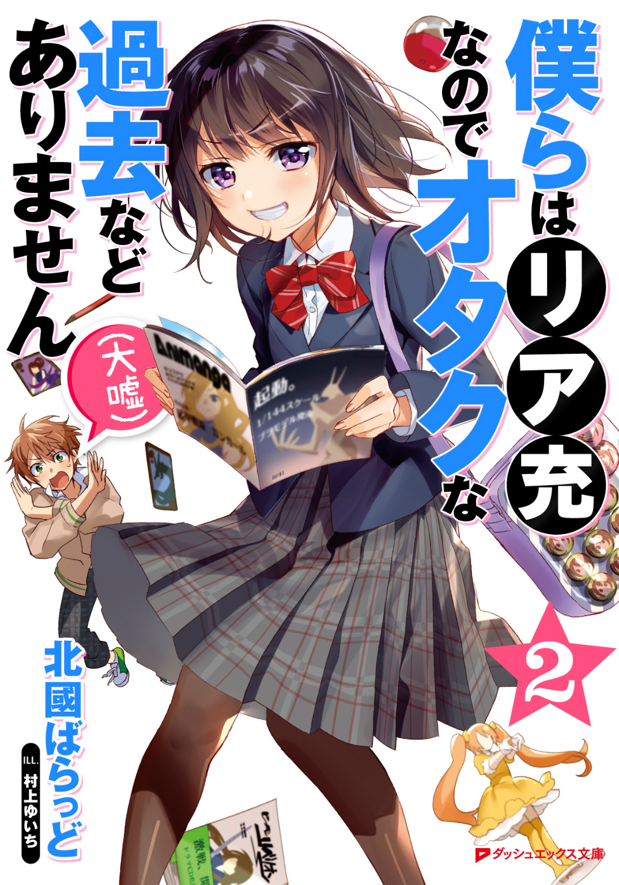
この本は縦書きでレイアウトされています。
また、ご覧になる機種により、表示の差が認められることがあります。
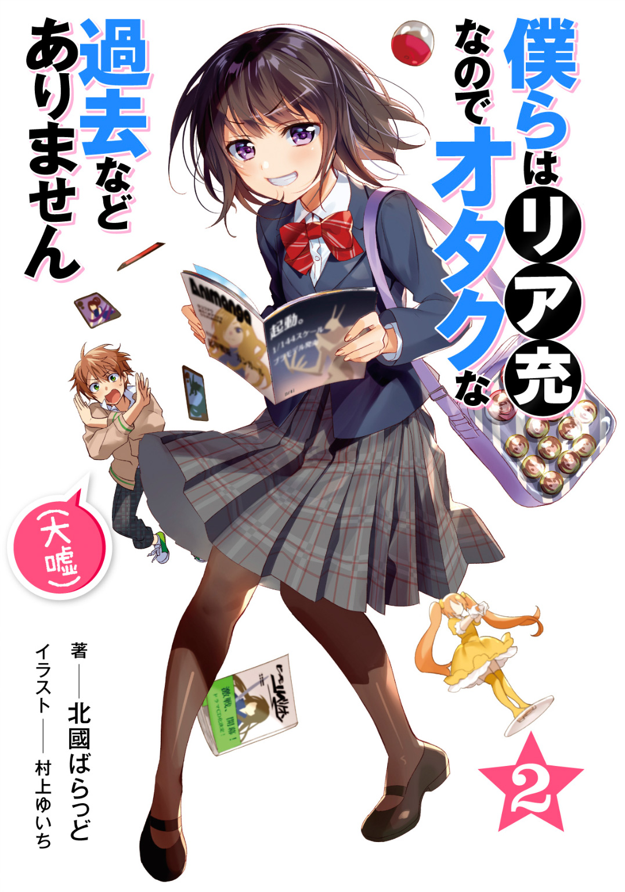

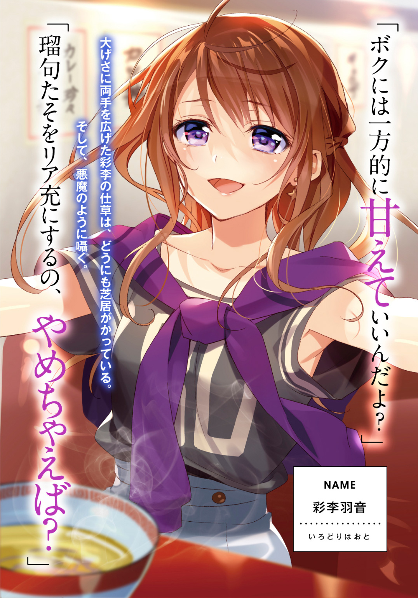
 ダッシュエックス文庫DIGITAL
ダッシュエックス文庫DIGITAL
僕らはリア充なのでオタクな過去などありません（大嘘）２
北國ばらっど
プロローグ 『来々木瑠句は夢を見る』
――一目惚れは恋に入りますか？
■
高校進学の、二週間前のことだった。
「わぁ......」
私は、引っ込み思案で、趣味もアニメとかゲームとか。
そんなオタクな趣味を共有できる友達もいない。
いわゆる〝ぼっち〟と呼ばれる人種だった。
そんな私が、生まれて初めて訪れた美容室。
家から歩いて十分。近所にあるこの美容室〝キャンディポップ〟は、近くにあるくせに近寄りがたかった。カリスマ読者モデル、登道ローラご用達の店として、テレビで紹介されていたせいに違いない。
目のくらむようなスタイリッシュな内装、使い道も分からない整髪料。
漂うのは、テレビの中で見るスターの楽屋のような空気。
店員さんはきらきらしているし、来ている客層も私なんかとは違う。
高校進学を区切りにして、私は今までの自分と変わりたかった。登道ローラのお気に入りであるこのお店なら、きっと変われるんじゃないかと思っていた。
......甘く見ていた。
とてもじゃないけど、私なんかが来ていいお店じゃない。
今すぐにでも帰らなければいけない。入店してしまった私は、長椅子に腰をおろしてはみたものの、もう逃げ道を探すように視線を泳がせていた。
そんな状況での、ことだった。
「――――がっ」
自分から、そんな妙な声が出るとは思わなかった。
出入り口の近くに......男の子がいた。
さらさらした黒髪。
目線は前髪で隠れていて、表情が窺いにくい。
ユニクロのシャツとズボン。近所のホームセンターに売っているのを見かけたことのあるリュック。自信のなさをあらわすように、申し訳なさそうに丸めた背筋。
......この男の子は、〝同じ〟だ。
違うのは性別くらいで、私と同じだ。
その子を。その子のリュックを意識した瞬間......私は、喋りだしていた。
「が......ガン・ガール............！」
上ずった声になってしまった。
震える手で指さしたのは、男の子がリュックにつけていたストラップ。
「これ？」
「......は、はい。それ、です」
テレビアニメ〝起甲戦姫ガン・ガール〟のストラップ。
私の周りに、このアニメについて語れる人はいなかった。男女問わずいなかった。オタクっぽい趣味の子はガン・ガールシリーズについての知識はあったけれど、詳しそうではなかった。
この男の子は、初代ガン・ガールのストラップをつけている。
ストラップの見覚えを探し、記憶を辿る。
イベント会場限定、という煽り文句が頭の片隅でちらついている。
「......お、お好きなんですか？ ......その、アニメ」
「えっ......あ、ああ、うん」
私はおバカさんかもしれない。なぜ、馴れ馴れしく話しかけてしまっているんだろう。
初めて目にした男の子に、話の通じそうなひっかかりを見つけたせいか。
珍しく異性と話すというのに、不思議と、声を出しづらいとは感じなかった。
「その......き、機甲戦姫ガン・ガールシリーズを見ている女の子がいるなんて......思わなかったよ」
「け、結構、女の子から見ても面白いですよ？」
「特にブルドッグ隊のマドカが好きでさ」
「わた、私も、私もです！ いいですよね、口数少ないクールな一匹狼！」
「わ......分かる？ 分かってくれる？」
「分かります。それ、それはもう......とっても！」
男の子は、話しながら、席の近くに座ってくれた。
......嬉しかった。
私と話をしてくれる。近くに来てくれる。
そんな存在は、初めてではないのかもしれないけど......本当に久しぶりで、嬉しかった。
時を忘れるくらい話をした。
夢のような時間だった。
自分を変えてみよう。その決心で今日、ここにやってきたことは間違いじゃなかった。同年代の男の子と話すのが、こんなに楽しいことだなんて思わなかった。
一人ぼっちの惑星に、無限の宇宙が広がったみたいだった。
話を続けるだけ、宇宙は広がる。暗闇しかなかった私の人生に、光が充ちていく。
どこまでも星が瞬いているようだった。
そんなキラキラした景色の中で、私の視界に時計が映った。
「......そ、そういえば名前、言ってなかったです、よね」
ここが待合席であることを思い出し、私はとっさにそう言った。
時間を忘れて、そのまま自己紹介すら忘れるのでは、話にならない。
「ああ、そうだった。俺は佐々井望って言うんだ」
佐々井望。
ささい、のぞむ。
ほんの少しだけでも、何かを望んでいた私に、その名前はゆっくりとしみ込んでいく。
名乗り返さなきゃならない。
彼にも、どうか私の名前を覚えてもらわなきゃならない。
いや。彼が忘れてしまったとしても、少しだけでいい。こんな楽しい時間があったことに、お礼を言いたい気分だった。
「......あの、私は――」
「オ客様チィーッス」
「えっ、あ、はい！」
不意に、美容師さんの一人から声がかけられる。
私に向けたものだったと気づいて、席を立つ。
「チュイッス、奥ノ席ドゾッス。オライッ」
「わ、わかりました......！ ごめん、行ってきますね」
「うん。頑張ってね！」
「足元気ヲツケテウェイッ！ ウーッウーッ！ セイ！」
美容師さんのテンションがすごく鬱陶しい。
けれど今は、とにかく、彼と話す時間が終わってしまったことが苦しかった。
名前も告げずに終わってしまったことが苦しかった。
佐々井望。
佐々井、望。
座り心地のいい、美容室の椅子に腰をおろして、私だけが受け取ってしまった、彼の名前を思い出す。音が振動になって、私の中に残るように。
彼はきっと、私のことなんて忘れてしまうだろう。
私のように、今日の出会いを大げさに受け止めてはいないだろう。
......それでもいい。
きっと、今日の出会いは奇跡だった。変わろうとしている私の背中を押してくれる、奇跡だった。私に勇気をくれる、誰かからの贈り物だった。
これからも、私はできるだろうか。
今日の彼みたいに、異性と楽しくお話ができるだろうか。
「チッス。お客様ウィッス。今日どんな感じにエビバディセイっすか」
「え、えびばで......？」
そういえば、決心と勢いだけでここに来てしまって、どんな髪型にしてもらうのか決めていなかった。どうしよう。
ううん、と考えた。
変わりたい。来店した時は、それだけがあった。......今は少し違う。
好かれたい。
誰かに、好きになってもらえる姿になりたい。
「......お客様チョリッス？」
「あ、は、はい。すみません、すぐ決めます」
美容師さんの手が、ぽん、と肩に置かれた。鏡越しに、目が合う。
「......俺、そういうの分かっちゃいますから」
「へ？」
混乱していた。
何を言われるのか。私は鏡を通して美容師さんの顔を見ながら、息を呑んだ。
「お客様、恋をしてらっしゃる」
――恋？
心当たりがない。
なにせ、恋愛経験なんてないんだもの。
美容師さんは、私よりもずっと人生のことを分かっていて、私のことも私より分かっているのかもしれない。それでも、はい、そうですとは頷けない。
「夢を見ている人は、綺麗になるんすよ」
「......ゆ、夢ですか？」
「何かに夢中になってる人ってことっすねぇ。すげーキラキラして見えるんすよ。オレ、お客様めっちゃ見てきたらそういうの分かっちゃう」
......夢。
夢を見ているのかな、私。
それは胸躍る、今の気持ちのことを言うのかな。
確かに、夢のような時間だったと思う。男の子と、気兼ねなく好きな話題について話して、肩の力を抜いていける感覚。そんなもの、知らなかった。
これは、夢と呼んでもいいのかもしれない。
でも、これを恋と呼んでもいいの？
......ううん、いいわけがない。
一目見ただけの男の子と、たまたま話があったからって、それだけで恋にしてしまうのは、私自身が図々しく感じる。一目惚れなんて、チープすぎる。
けれど......今だけ。店員さんがそう言うのなら、今だけ。
恋をしていることにしてしまおう。
そんな気持ちで髪を切れば、誰かに、好きになってもらえるかもしれないから。
――息を吸って、吐いた。
「ブルドック隊のマドカにしてください」
「は？」
店員さんが首をかしげた。
「ブルドック隊のマドカに」
「誰チョリス？」
話が通じない。こっちのほうが普通だった。
もうどうにでもなれと思っていた。私は、進学を機に買ってもらったスマホを操作し、画像検索を行った。勢いだけは売るほどあった。
スマホの画面を表示して、見せる。
見せながら、言った。
「ギラッギラの金髪にしてください！」
「かしこまりっ！」
美容師さんは、なぜかものすごく、ノリが良かった。
きっと、もう彼に......佐々井望くんに会うことはない。
だから、この軽率すぎる気持ちを、恋と呼んではならない。
けれど、もし奇跡が起きてもう一度彼に会えるなら......ちゃんと、恋をしてみたい。
染められていく自分を感じながら、私は、そう考えていた。
金髪の私が家に帰ると、両親が卒倒した。
一章 『須藤雄介は友人を大切にしている』
............朝............。
目を覚ました体が汗ばんでいて、季節を感じた。
カーテンと一緒に窓を開け、新しい空気で肺をいっぱいにする。
差し込んだ光に室内が照らされる。
オシャレを追求したはずの部屋の中に、生活感が満ちはじめている。
「......日曜に一度掃除するか」
聞かせる相手のいない決心を吐いて、着替えの前にさっさとシャワーを浴びた。
制服は衣替えを終えて、一枚分、薄着になっていた。
セーターはお役御免。汗を流して綺麗になった体は、しなやかな薄手のワイシャツに包む。
一枚減るだけで、随分とストレスがなくなったように思えた。
朝食を食べて、身支度を整えて、ネットニュースを流し読む。
頭が夜更かしの影響を自覚していたけれど、それでも朝の一連をこなせる程度に、一人暮らしに馴染んだ自分に感動する。
着替えた服にすっかり体温が移ったころ、チャイムが鳴った。
「......来た」
などと言ってはみたが、知っていた。なんせタイミングを体が覚えている。
カバンを肩にかけて玄関へ向かい、扉を開けた。
想像通りの声が、出迎えた。
「――おはようございます、望くん！」
「......おはよ」
当然のように、瑠句の笑顔がそこにあった。
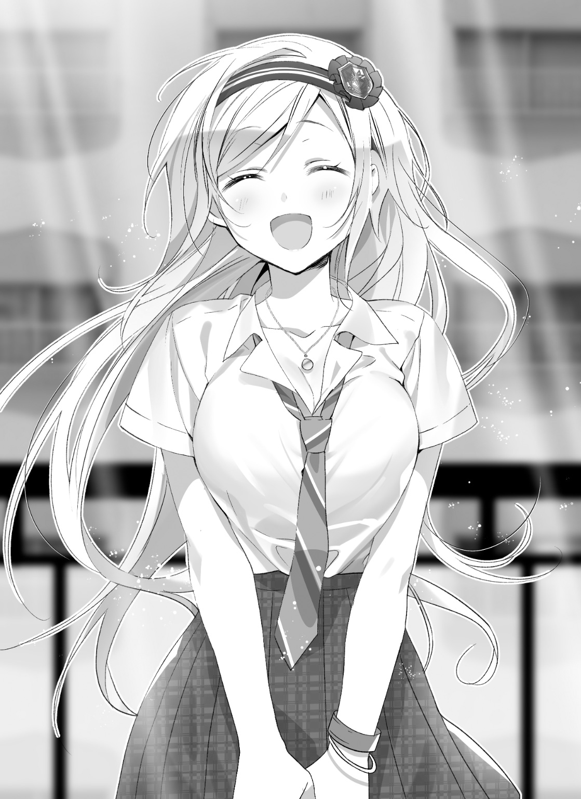
玄関をくぐると、室内と外の気温差を感じる。
この時間帯は、外のほうが涼しい。
「テンション低めです？ 寝不足でしょうか」
「昨日の夜はロキノン系バンドの特番チェックしてたからな」
「ロキソニン？」
「どんなバンドだよ」
「痛みに耐えながら楽曲を提供するすごい方々なのかと......」
「常に鎮痛剤打ってるとかロックってレベルじゃねーぞ」
「首をぶんぶん振るのとか絶対関節傷めそうじゃないですか」
「その筋の人に本気で怒られる前にググってこい？ な？」
いつもの瑠句っぷりを見せつけられて、これですっかり目が覚める。
瑠句を見ると「朝が来た」と思う。
青みがかった瞳と、ハチミツのように鮮やかな金髪。
そんな容姿を備えた瑠句がめいっぱい微笑む姿は、まるで朝日が歩いてきたみたいだから、そう思う。
夏になって、腕や脚を見せるようになった制服。長いまつ毛。シャツを押し上げる、丸みを帯びたシルエット。日差しが強くなっても、肌の白さも変わらない。
こうして見ると......ぶっちゃけ、めっちゃ美人なんだよな。
いや知ってるんだよ。外見スペックがめっちゃ高いことくらいさ。
そんな子が毎朝、一緒に登校するために訪ねてくる。
夢のような状況だよ。分かってるさ。
分かってるけどさ、こいつ瑠句だもの。
「あのさぁ」
「忘れ物ですか？ ハンカチですか？ ポケットティッシュですか？ ティッシュなら私、ちょっぴり香りのついたもので良ければ余分に持ってますけど」
「いや、あのな。いつも途中で分かれて登校するんだから、いちいちウチに迎えに来なくたっていいんだぞ？」
二カ月。
長かったのか、短かったのかは分からない。
それは俺と瑠句が、一緒に登校し始めてからの期間でもある。
別にそれが嫌なわけじゃない。これは本音。
けれど「二人で一緒に登校なんてきっと目立つから」と、結局瑠句のほうから途中でルートを分けるのが、未だにずいぶんとまどろっこしく感じる。
とはいえ、瑠句と一緒に教室に入って注目を集めることを、平気と思えるような度胸は俺にはない。
なら別に、そもそも一緒に登校する必要がないのだ。
「でも、住んでいるところが真向かいなのに、スルーしていくのも感じ悪いじゃないですか」
「そうかもしれない、けどさぁ」
本当......なにをどう偶然に重ねたら、独り暮らしの住居が真向かいになる、なんてことになるんだろうか。
まあ、俺のほうはアパートで、瑠句はご立派なマンションという違いはある。
その差がたまに恨めしい。
「それとも......やっぱり私と一緒に行くの、嫌だったりします？」
「それを聞くなら、二カ月ほど遅いっての」
肩を竦め、俺は平べったい学生カバンをかついで玄関をくぐる。高校入学と同時に買ったスニーカーは、もう、すっかり足に馴染んだ。
春から夏にかけて住んでいれば、近所の景色は見慣れたもので、どこか親しみすら感じている。都会とは胸を張って言えないが、ド田舎というほどでもない。
ほどほどの町並みを歩く景色の中に、瑠句がいるのは自然になった。
窓ガラス越しでない朝の光は、日に日に強くなっている。ぽかぽか、と感じていた太陽は、昼ごろになると、じりじり、に変わる。
夏の匂いが近づいている。
「望くん。朝ごはんは、まだパンなんですか？」
あの家、庭木の色が濃くなってきたなぁ。
なんてよそ見をしていた俺の顔を覗きこんで、瑠句は話題を振ってきた。
最近、話を始めるのが突然でちょっとびっくりする。
間近で見る瑠句の顔は――悪い意味ではなく――心臓に悪い。
「まだ......っていうか、別にパンから変更する理由がないじゃん」
「お米食べないと、お腹に溜まらなくないです？」
「だって、お前、俺んちの家具知ってんだろ」
食卓はガラス張りのローテーブルだ。
「はい、知ってますけど」
「アレに茶碗と白い飯乗せるのクッソダサくない？」
「そんな理由だったんですか!?」
「そりゃそうだろ。わざわざ専用のマシンで淹れた朝一番のコーヒーに白米とたくあんとか、夢から覚めるってレベルじゃねーぞ」
「別に誰も見てないんだからいいじゃないですか......」
「誰も見ていないが、俺は俺を見ている」
「もしかしてそれ格好いいんですか!?」
「失礼な奴だな......おま、格好よさに関してのツッコミはお前にされたくないぞ」
「それ言われるとぐうの音も出ないですけど......」
「つか大丈夫だって。ジャムとか付けて食ったらパンでも腹に溜まるって」
「きちんとおかずも食べてくださいよ？ 朝こそバランスのいい栄養補給が大事です。一人暮らしって食生活が偏りがちですから」
「お前は俺の母さんか」
「育ち盛りなんだからもっとたんまりお食べ！」
「母さんっぽくならなくていい！」
「アタイの作ったたくあんスムージーで元気百倍チョモランマだよ、ガハハハ」
「お前の中で俺の母さんはどういうキャラなんだよ!? 事と次第によっちゃこの関係に亀裂が入るぞ！」
「会ったことないので、ウチのお母さんを参考にしてみようかなと思いまして......」
「お前の母さんそんななの!?」
「ココナッツとか素手で潰してスムージーにしますからね」
「これ人類の話題って認識であってる？」
「望くんのお母さんもスムージー作ったりします？」
「......してたな」
実家には、父さんが忘年会のビンゴで当ててきたスムージーメーカーがあった。
それ以外に存在意義もないくせに、無駄に場所をとる。と言うと父さんが死にそうな顔で静かに泣き始めたので、我が家では禁句になっている。
捨てられもしないので、取りつかれたように毎朝スムージーを作って飲んでは、朝からトイレを占拠していた母さんを思い出す。
数カ月ぶりに思い出す母さんの姿が、これなのは申し訳なかった。
「うん、ちょくちょく作ってた」
「じゃあウチと一緒ですね」
「いやー......違うと思う。少なくともここで一緒って言っちゃいけないくらい、お前んちと俺んちのスムージーは違うと思う。まず調理工程がスムーズじゃねえもん」
「やっぱりどこの家庭もお母さんって似るものなんでしょうか」
「一パーセントも似てないからね？ 強いて言えば性別くらいだからね？」
「なんだか急にお母さんに会いたくなってきました......」
「ホームシックの瞬発力高すぎるだろ」
「でも、もうお母さんはいないんですよね......」
「えっ」
「実家にしか......」
「いるんじゃねえか！ だいたいのお母さんは別の地点に同時に存在しねえよ！」
「これからは私がお母さんの分まで......いえ、望くんのお母さんの分までも、望くんの健康のことを考えなきゃいけないんです」
「ウチの分は俺が考えるからいいよ！ 勝手に領分侵してきてんじゃねえよ！」
「そうはいきません！」
「えっ、なんでそこ意地張んの......？ おかしくない？」
「私、カラオケの時に、望くんに助けてもらったじゃないですか。その恩、どうにか返そうってここ最近ずーっと考えてて。今、答えが見えた気がするんです」
「気のせいじゃない？」
「お母さんになります」
「時間やるから考え直せ」
「――なります」
「聞けよ！」
「望くんがそれを望むなら......私、お母さんになります！」
「やめろっつってんだろ！ なんか如何わしいんだよ！ ほら、庭先掃いてたオッサンがすっげぇ目でこっち見てんだよ！」
「むむむむむぐぐぐ」
ヒートアップしてきた瑠句の口を強引に押さえて、なんとか会話を断ち切った。
数名のオバサンたちが、こちらを見ながらヒソヒソ呟いているのが見えた。馴染んできたつもりになっていた町だが、すでに再度の引っ越しを考えたい。
「でもですね、むっちゃん」
「えっ」
「むっちゃん」
「誰？」
「望っちゃん」
「なにその駄菓子みたいな響き」
「や、ちょっと親しげな呼び方を模索なうなんですけどね」
「〝なうなんですけど〟って言い回し初耳にもほどがあんだけど。語呂悪いんだけど。っていうかさ、今そういう場面じゃなかったじゃん」
「そろそろアダ名で呼び合う段階に移行してもいいかな、って思ってたんですよ」
「だからって会話中にシームレスに変えるんじゃねえよ！ そのアダ名も別に認可してねえし唐突すぎて戸惑うんだよ！」
正直、最近の瑠句はテンションが高い。
いや、二人の時は前から高かったんだけど、クラス親睦カラオケ会を成功させてからというもの、五割増しで高くなった。
もし俺が何の準備もなしにつき合わされたら、きっと高山病になってしまうくらい高い。
「っていうか別にいいじゃん、アダ名とかなしで」
「えー」
「えー、じゃなくて」
「ぽー」
「ぽー、ではねえよ絶対に」
「ウラー」
「ロシア語まで持ち出してバリエーションつけなくていいから」
「でもアダ名で呼び合うってリア充っぽくないです？」
「別に名前で呼び捨てにしてんだから、十分それっぽいと思うけどな」
まして、異性間だし。瑠句の思いつきを実行しているだけとはいえ、俺たち、異性を名前で呼ぶことなんかなかったし。
リア充っぽいと言えば、既に十分それっぽいはずだ。
「でも、高めたくないです？」
「は？」
「行きたくない？」
「は？」
「高み」
「三回目なの承知で言うけど」
「どうぞ」
「は!?」
「さらなる高みですよ」
「言い回しがリリカルすぎてわかんないんだけど......」
立てた指を、タクトのように振りながら、瑠句は続ける。
この仕草が出た時の「ロクなこと言わない力」は、いきなりめちゃめちゃ笑顔で話しかけてきた時の野々村さんに匹敵する。
「いえ、私......ほら、最近、ちょっと」
「ちょっと？」
「......充実、してきてるじゃないですか」
「冗談（笑）」
「その反応辛辣すぎないですか!?」
「なんで納得されると思ったんだ」
まぁ、クラスの人間との会話すら成立していなかった頃に比べれば、近頃はワリとマシな感じになっている。
とはいえ、堂々と「充実してきてます」と言うには遠い。バッティングセンターに通い慣れてきたからプロ野球選手になります、とか言ってるのと変わらない。
「で、でもでも、最近は本当に充実してますよ！ 望くんに助けてもらったおかげで、すっかりクラスにも溶け込んだと思うんですよ！」
「えぇ～？ 本当にござるか～？」
「本当にござるよ！ とろっとろに溶けてますよ！」
「混ぜてないカップスープくらい？」
「一ミリたりとも信頼されてない!?」
「いやー的確な喩えだと思うよ、我ながら」
「で、でもでも、会話が成立したってことは一面クリアみたいなものですよ！ 次のステージに進む足取りはできましたよ！」
「超低スコアＨＰ瀕死での一面クリアだろ。もう一度同じステージをやり直してもいいレベルだと思う。つーか、単なる会話はチュートリアルの段階だろ説明書読め」
「自転車だっていずれは補助輪を外して乗るんですよ！」
「でも瑠句って補助輪外したらソッコーでウィリーとかジャックナイフの練習を始めそうなところがあるし......」
「たーかーめーたーい！ 自分！ たーかーめーたーい！」
「美声をはり上げて斬新な駄々やめなさいよ！」
「テイクミーハイアー！」
喋ってるだけならともかく、瑠句は高校一年生にもなって学生カバンごと腕をぶんぶん振り回しながら言っていたので、もう何かいろいろ駄目だった。
その仕草で胸がばるんばるん揺れてたんだが、もしかして精神攻撃だったんだろうか。今さらそんな色仕掛けが俺に効くとでも思っているんだろうか。めっちゃ効く。
しかし、相変わらず向上心だけはあるやつだ。
俺頼りなのは変わらないが。
「......まあ、気持ちは分からんでもない」
「でしたら――」
「とはいえ、それはそれ、これはこれだ。１ステージクリアしたから簡単にレベルアップできるってもんじゃないぞ、ゲームじゃないんだから」
「でも、もうあれから二カ月もたってますし」
「だから、まあ、頃合いは頃合いなんだろうけど、よりリア充に近づきたいなら、まずしっかりプランを練らないと」
「じゃあ、作戦会議ですねっ！」
「......まあ、そうだな」
「わぁい！ じゃあ、さっそく今日の放課後お話ししましょう！」
「んー」
なんだか、こう。
この〝作戦会議〟自体にそこそこムズ痒いものを覚えているフシもあるのだ。
が、瑠句が嬉しそうなので良しとしよう。
ああは言ったが......前に比べれば、というただし付きで、瑠句も格段に周囲に溶け込んだほう......だと思う。前があんまりにもあんまり過ぎた、とも言えるけど。
その余裕なのか、瑠句が言うところの〝共犯者〟である俺と話す時の笑顔も、前以上に豊かなものになった。
ころころ変わる表情。見ていて飽きない仕草。
せわしなく動くたびに金色の髪がきらきらする様を見れば、クラスメイトだってもうちょっと好意的になるはずだ。
でも、それができないのは、まだ瑠句が〝作ったキャラ〟を脱却できていないからに他ならない。
どうせそのキャラ作りは失敗なのだから、早々にやめれば............とは、俺には言えない。
「あ、じゃあそろそろ、人の多い通学路に出ますので」
「ん、ああ」
そう言うと、瑠句は軽く会釈して、それから咳払いをする。
これは一種のスイッチのようなものらしい。
すぐに瑠句の表情が、きりっとした演技モードへと切り替わった。明るい髪の色よりも、青みがかった瞳の鋭さのほうが印象的になる。振る舞いひとつで、どのパーツが目立つのかが変わるというのは、ちょっと面白い。
まあ演技をしようとしまいと、出るところが出て、くびれるところはくびれるスタイルは変わらない。
なのに、じゃれつく犬のようだった瑠句は、その手足の扱いを落ち着いたものに変えるだけで、〝ちょっと近寄りがたい来々木さん〟へ変わる。
クラスメイトみんなに知られる〝来々木さん〟の姿だ。
「......どうしたの、まじまじと見て」
「いや、ちょっと」
少し低くなった声は、本当に別人みたいだ。
それに、普段のダメわんこバージョンに慣れてしまうと見逃しがちだが、こう、じっくり見ると、しっかりはっきり美人なのだと分かる。
......ほんと、スペックは高いんだよな。ベクトルが間違ってるだけで。
「なんでもないよ、引き止めたみたいでごめんな」
「構わないわ......っと、ちょっと待って」
「ん？」
不意に、瑠句の顔が近づいた。
頰に寄ってくる指先は、男の俺にはなめらかすぎて、絹の手袋でもつけているみたいだ......なんて感想が頭の中で言葉になるより早く、瑠句は俺の髪に触れる。
こめかみより、少し上のあたり。
間近の瑠句からは、男からは絶対にしない香りがする。
「ちっちゃい糸くずみたいなの、ついてたから」
「あ......あ、ああ、ありがと」
「整髪料をつける時ね、きっと......。気をつけないと、せっかくキメた髪型に、泣かれてしまうわよ？」
「......おう」
ほんの一瞬。
心臓をぎゅっと摑まれたような気がして、俺は今のことが、もう現実なのか夢なのか分からなくなっていた。
「じゃ、先に行くわね」
「............おう、また......」
波が引いていくみたいだった。
改めて目の前にある景色は、しっかりと現実だった。
けれど、波しぶきの感触はまだ額を濡らしている、みたいな感じの余韻。
鼓動はもう整っている。振り向いた瑠句が、きびきびとした仕草でカバンを持ち直す。
金色の髪を、無駄に〝ふぁさぁっ〟と手でなびかせて、瑠句は自然なモデルウォークで先に歩いていく。
ちなみに「ふぁさぁっ」は口で言っている。
後ろ姿も整っているもんだ。ほんと、下手に喋らない方が人気が出ただろうに。
こうして、いつも途中までは一緒に登校するが、瑠句の気づかいによって、ある程度からはタイミングをずらして歩いていく。毎朝の恒例だ。
瑠句が歩いていく後ろ姿を眺めるたび、この時間が終わるんだなぁ......という実感が染みていく。
朝なのに、日が沈む時に似たものを感じる。
雲が出てきたのかもしれない。ギラギラ照りつけていた朝の日差しも、今は、どこかおとなしかった。
■
さて、瑠句はともかく、俺も実際は付け焼き刃のリア充もどきだ。
なので、須藤のような話し慣れている相手を挟めば輪に入れるものの、まだタイマンで話すのは苦手、というやつは多い。
例えば、テニス部の大谷がそういうタイプだ。
当然のように赤茶に染めた髪と、テニス焼けした肌が健康的で、笑うとびっくりするほど歯が白い。オタクは本能的にこういうタイプを恐れる。と、俺は勝手に思っている。
イメチェンしたとはいえ、本格的に脱オタしたわけではないため、俺は休みに遠征して離れた町の「とらのあな」に行ったりするのだが、なんだかとても店内が歩きやすかった。
というのも、我ながら覚えがあるのだけど、一般的な書店でラノベコーナーとかの〝オタクのテリトリー〟にチャラい見た目のやつがいると、本能的に通路で避けてしまうのだ。
いや、オタク全てがそうってわけじゃないんだろうけど、俺はとにかくコンプレックスの塊なもので、自分より明らかに人生楽しんでそうなやつとか、自信満々な感じのやつを見ると全てを投げ捨てて土下座したくなる。
まあ何が言いたいかっていうと、大谷はそういう奴だった。
だもんで。
「佐々井、ちょっといい？」
「ぺぽっ!?」
ＨＲ前の暇な時間、いきなり話しかけられたもので、俺は挙動不審になってしまった。
「どんなリアクションだよ......お前ピコ太郎かよ」
「い、いや、佐々井だけど」
「いやピコ太郎じゃねーことは知ってるよ」
「そっか、良かった」
「で、本題いい？」
「ほ、本題いいよ」
「お前さ、来々木と仲いいの？」
「――」
予想外の事態に、予想外の話題を振られて、俺は一瞬フリーズした。
「え、何で？」
「いや、五月のカラオケん時から思ってたけどさ。割と一緒にいること多いじゃん」
「まあ別に、仲悪くはないけど......」
「だよなー。付き合ってんの？」
「――――――」
今度のフリーズは、一瞬ではなかった。
「......うぇーい、佐々井。生きてるー？」
「つ、つつ、つ、付き合ってるわけじゃねーけど」
「あ、そう？ マジか。んじゃ別に彼氏とかいんのかな」
「い、いやー、いな、いないないんじゃななななはいほぁい？」
「バグり過ぎだろ。ＹｏｕＴｕｂｅたくさん開いたときそんな感じになったわ」
「や、いな、いないと思うけど、思いますけど、なんでまたそんなこと」
「なんか最近さぁ。来々木って割と良くね？ と思って」
「......ん？」
良くねって、何？
何の話？ 何に対して？
「だってさぁ、あいつ最初は何考えてるか分からなかったけど、ぶっちゃけた話ヤバい美人じゃん。胸でけーし」
「でけーけど......」
たっぷんたっぷんだけど。
「な、重要だべそこは」
「......え、なに？ るくっ......く、来々木さんのこと、好きなのか？ もしかして」
「なーに少女漫画みてーなこと言ってんだよ、ウケるわ」
笑われた。その理由が分からなかった。
いまいち理解が追いつかないまま、俺は震える声で言葉を返す。
「え、だって彼氏いるとか気にするって、そういう......」
「いや、別に好きってわけじゃねーけど割と可愛いじゃん？ 最近けっこー話すようになったし、いい感じなら狙ってみるのもアリかなって」
「アリかな......って......」
なんだそれ。
いい感じなら、とか。狙ってみる、とか。
頭の中で反芻するたび、血のめぐる音がする。
「......や、いやいや、アリかなってだけの話だよ。そんなマジじゃないから。っつか、別にクラスの誰が可愛いとかいい感じとか、よくある話だべ？ 怖い顔すんなって」
「......あ......」
言われて、意識して力を抜くと、顔の筋肉がゆるむのが分かった。どうやら、知らないうちにそうとう強張った顔をしていたらしい。
「佐々井、割と真面目なのな」
くすりとした、鼻にかかる笑い声が聞こえて、俺はたちまち顔が熱くなった。
リア充に溶け込むために被る仮面は、今はすっかり外れている。
どうにも返す言葉を吐けないでいると、大谷のほうから会話を続けてくれた。続かない話題を続ける力は、本物のリア充にしかない。
「いやさー、違うんだって。オレも焦ってんだよね。そりゃ、夏休みに入ってから遊びながら出会い探す、ってのもアリだけどさ。」
「......大谷は、女関係に焦るようなタイプに見えないけど」
「んなことねーよ。中学ん時はテニスばっかやりすぎてさ、せっかく付き合えた彼女に愛想尽かされたこともあるし」
「えっ、ああ......へぇ」
なんとも意外な話だった。
そう言われると、大谷の日焼けした顔は、単に健康的でモテそうという記号から、テニスに一生懸命打ち込んだ証に見えた。
いっそう、眩しいものに見えた。
「ま、まあ、間違いなく......あいつに彼氏はいないと思うよ」
「あ、やっぱ？」
「だってさ、ほら」
顎でしゃくるようにして、俺は大谷の視線を誘導した。
クラスの一角、三人ほどの女子が話している。
そこに、クールな女演技モードの瑠句の姿もあった。
「......不条理ね」
何がなんだか知らないが、瑠句はそう呟いていた。
ロクな会話になっていないのだけは感じとれる。
「フジョーリってどういう意味？ 玲子、分かる？」
「ウチ勉強しないから分かんないわー、芽衣のほうがアタマいーじゃん！」
会話しているのは芽衣と玲子。
ことあるごとにお互いを名前で呼び合うので、名字より名前が浸透している。
「......あなたたちは、人生をどういうものだと考えているのかしら」
「玲子、人生ってぶっちゃけ何よ？」
「ラブ＆ピースじゃね！」
「ふっ......愛と平和だけで、世界が回っているわけではないわ」
「来々木さんオトナっぺー、そこにシビれる......続きなんだっけ。玲子、分かる？」
「運ばれる！」
「どこにだよウケる」
「命を運ぶ、と書いて運命......私たちはまだ、その言葉の意味を理解するのには若すぎるのかもしれないわね......」
「運命ってどういう意味？ 玲子、分かる？」
「モーツァルト！」
「ベートーヴェンよ」
「そうそうそれそれベントーベン！ 来々木さんマジ頭いーね。玲子より頭良くね？」
「えー、芽衣ひどーい。明日からシカトこくから！」
「ベートーヴェンは運命や、いわゆる第九......交響曲第九番が有名ね......月光、なんかもそうかしら」
「シカトとかこじらせすぎっしょ。玲子マジ陰険ＭＡＸでしょ」
「芽衣ほどじゃないし。っつか実際にはシカトしないし！」
「私としては管弦楽曲のレオノーレ......それにウェリントンの勝利、またはビトリアの戦いなんかも好きだけれど」
「シカトしねーのかよマジ玲子優しいじゃん勘違いしてたわー、もう一転してラブキュンインフェルノだわ」
「芽衣とウチの仲だし！ 見て、この愛の証の横ピース！ びしぃーっ！」
「ヴァイオリンソナタ......イ長調のクロイツェルもいいわね。けれど、やはり私が一番影響を受けた曲は他にあるの」
「マジかー、その横ピースラブサインだったかー、玲子マジ百合女子だわー」
「我等友情永久超絶不滅って筆箱にも書いたじゃん！」
「音楽というジャンルの表現の可能性を広げた傑作......交響曲第三番、エロイカね」
「えっ、来々木さんエロいの？」
「マジで？ だからいつも胸んとこガバ開きなの？」
「............にゃんせんすね」
「え、今たぶん嚙んだよね」
「エロいって言われてちょっと恥ずかしかったんじゃない？ え、可愛いんだけど！」
「ナンセンスね」
「つえー、言い直したよ」
「これで通す気だわマジウケる。でも、そういうとこもちょっと可愛いよねー」
「ふっ............」
以上の会話から、やっと目をそむけて。
「冷静に考えてあれ、彼氏いるキャラに見える？」
「いや全面的にオレが悪かったかな」
大谷は分かってくれた。
瑠句、馴染んできたには馴染んできたけど、なんかアホの子クラスタに入ってるんだよな......別にアイツ自身の成績は上位のはずなんだが。
まあ、仲が悪いわけではなさそうなのでよしとしよう。
この通り、男子の千年の恋すらも冷めそうな姿には、なってしまっているが。
「いやあ、完全に気の迷いだったわ」
「そこまで言われる瑠句も瑠句だけど」
「あ、佐々井、やっぱ来々木さんのこと呼び捨てなん？」
「えっ、あっ、まぁ、その、はい」
「リズミカルだなお前。でも、そっかー、やっぱ落ち着いて考えないとなぁ」
「......だいたい、大谷はテニス部なんだし他の男子より出会いの場面多いだろ。別に切羽詰まったからって瑠句に目つけることはないよ。うん、ない」
「いやー、でも最近焦っちゃってさぁ」
「なんでそんなに......」
「だってさぁ、やっぱ身近に彼女できたやつがいるとさ、若干意識するべ？」
「身近ねぇ。誰か彼女できたんだ」
「え、須藤から聞いてねえの？」
「えっ」
なにそれ怖い。
と同時に、俺は大谷の言葉を全力で肯定するかのように、一瞬で焦りに襲われた。
■
「どういうことよ」
「えっ、何が？」
トイレから戻ってきた須藤に問い質すために行ったのが、俺の人生で初めての壁ドン経験になった。
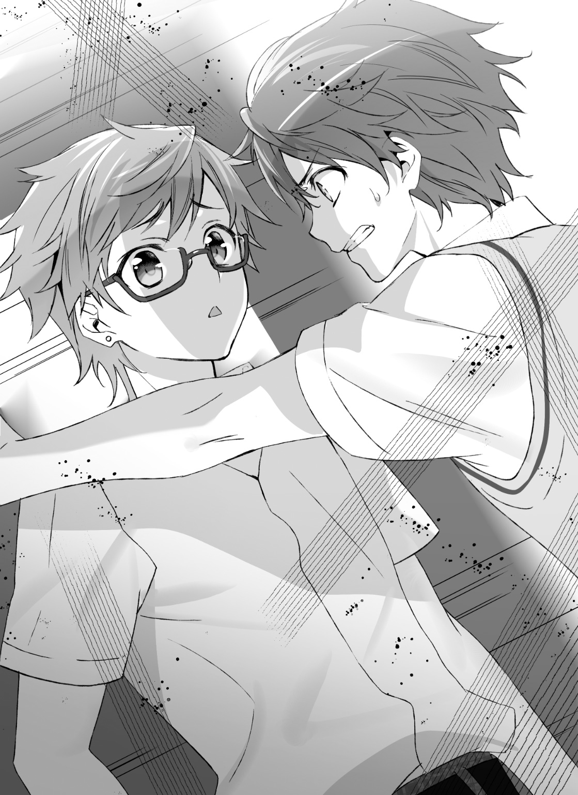
これを深夜に思い出してちょっと泣くことになるわけだが、それはまた別の話。
とにかく、今は聞かねばならなかった。
「お、おま、いつの間に彼女なんか」
「あ、誰かから聞いちゃった感じ？」
「カンジもローマ字もねえんだよ！」
「ムダに上手いこと言うのウケる」
「ウケるたびにウケるって宣言しなくていいから！ お前メシ食べるとき食べるって言うのかよ！」
「いただきます、ってそういう意味じゃね？」
「言うわ。喩えが悪かったわ」
くそっ、大谷もそうだけど、リア充って喋り方が統一されててキャラ被ってんだよ！ もっと個性出せよ！
「ワリぃワリぃ。話そうと思ったんだけど、顔を合わせた順的にさぁ。ちょっと前後しちゃっただけだって」
「べ、別に？ 一番に報告されなかったことに傷ついてるワケじゃないけど」
「俺が佐々井にナイショにするわけないじゃん？」
「バ、バカッ......！」
いや、なんだこのノリ。
別に俺と須藤の間でラブコメしなくていいんだよ。
そりゃ確かに一番最初の報告が俺じゃなかったんだなーとか、いつも話してるのに、そういう気配とか全然気づけなかったなーとか、いろいろ考えると胸がきゅんってして苦しくて切なくて泣いちゃいそうだけど......。
「で、でも驚いたよ、正直」
「えー？ オレ、そんな驚くほど彼女できなさそうだった？ ちょっと傷つくんだけどそういうの」
「いやいや。そりゃ、須藤なら不思議じゃないと思うけど、そんなそぶりとか全然見せなかったじゃん。いつどのタイミングかも摑めなかったじゃん」
「恋って......始まる瞬間が分からないから〝恋に落ちる〟って言うんじゃね？」
「唐突にポエム出すのやめてくんない？」
「なんか胸がいっぱいになると自然に出ちゃわね？」
「あるあるネタみたいに言うなよ！ 共感できねーよ！」
「だって佐々井、前に割と恋愛経験あるみたいなこと言ってたじゃん。多かれ少なかれ、こう、胸の奥から出てくるもんがあるべ？」
「ない」
俺の交際相手は３ＤＳの奥からすら出てこなかったよ。
「そ、そっか。まあ人それぞれだよな」
「......で、相手はどんな子なんだ」
「どんなって、バスケ部のマネージャー」
「はー......はちみつ漬けのレモンとかもらったわけだ。優しさに包まれたなら目に映るすべてのことはメッセージだったわけだ」
「昔のマンガかよウケる。でも、優しさに包まれたってのは、そうかもな」
「具体的には？」
「んー......なんつーかさ。最初はまぁ......ちょっと、イイなって思ってたのは確かなんだけど、話していくうちに段々しっくりきたっつーか」
「うんうん」
「パズルが嚙み合う感じ？ みたいなの？ そういう感覚に素直になってったらさ。吸う空気、見る景色、全部そいつ中心に回ってた、みたいな」
「うん」
「あいつが笑えば、その日は一日いい気分でいられるし、あいつが喜んでくれると、俺が喜んじゃうっていうかさ」
「............うん」
「生きる上でのいろんなものがそいつに包まれていって、気がついたら......まあ、付き合ってたよね」
「胃にもたれる」
「今日の佐々井はちょっとワガママじゃね？」
なんか砂糖漬けのチョコ突っ込まれた感じだった。
やべえ、やべえ。今まで遠巻きに見てたリア充がリア充してる状況って、真正面から食らうとこんな感じなのか。
叩き込まれたリア充成分が血液内に詰まって死にそうだ。
「まあ、なんかだいたい分かった。お幸せに」
「え、待って。まだオレ相手の名前すら話してねーけど」
「いや、伝わってきたよ。もう須藤がすごい高い感じのとこ行ったのほんと伝わってきた。たぶん名前とかも伝わったわ」
「マジで？ やっぱオレら通じ合ってんな」
「ああ、チョベリバチョベリバ」
適当なことを言って須藤の話を切ると、ちょうどホームルームが始まった。
それぞれが自分の机に戻って、賽の目に区切られた教室は、なんだかとても孤立した空間に思えてしまった。
■
――次のステージ。
それは俺や瑠句に限った話ではないのかもしれない。
そんな思いが、ぐるぐると頭の中をめぐり続ける昼休み。
瑠句との朝の会話を思い出しながら、俺は廊下を歩いていた。昼食を食べる場所を確保するためだ。
「ただでさえリア充だった須藤が、彼女ができて更に充実するとはなぁ......俺たちがちまちまステージを進めてても、あいつらも先に進むんじゃ差がつまらねーよなぁ」
そんな須藤は今日、彼女と一緒にランチらしい。
瑠句も、今日は女子のランチグループに潜り込めたという。
須藤抜きで男子グループに交じって食事するなんて、リア充らしさを実感する喜びよりも、ストレスゲージのほうが勝ってしまう。
ので、食堂での食事はパス。教室で一人飯なんてもってのほか。
となれば、浮いてしまった俺が来る場所など、もう一つしかなかった。
「おーい」
目の前の扉をノック。
すると、中からムダに張りのある声が返ってくる。
「――われら、銀河統合連盟の旗のもと！」
「......青き血潮を力と変えて、革命の狼煙をいざ上げん」
淀みなく言えたはずだ。
足音が数歩ぶん響いて、中から扉が開けられた。
「はーい。佐々井氏、一名さまごあんなーい」
「ほんと、そういうのいいから」
須藤も瑠句も前進する日々。
そんな流れに反逆するかのように、彩李羽音は今日もいつも通りだった。
ぱっつん黒髪、眠たげな目。
制服はオシャレのオの字も投げ捨てた、といわんばかりに杓子定規に着こんでいる。
けれど眉毛は整えているし、顔立ちもスタイルも均整がとれている。
こいつの正体が学生に人気のカリスマ読者モデル「登道ローラ」だと知らなければ、俺もいまだに、その事実に気づいていなかっただろう。
「待っていたよ佐々井氏。進化人類の証たるボクのニュータイプ能力が、キミの到来を予知していたのさ」
「じゃあ合言葉いらんだろ」
「えー。いいじゃんいいじゃん、連盟評議会っぽくて」
扉を閉めて、俺に背を向けて歩くその姿は、プロのモデルほどキビキビとはしていないが、染みついた姿勢の良さが見てとれた。
瑠句は顔もスタイルも派手で、黙っていても目立つ。
それが話したり動いたりすると、いっそう目立つ。
対して、彩李はそれぞれのパーツが主張しない。
けれどどんな服でも可愛く着こなせそうなプレーンな素材が、高レベルで同居している。
それが、彩李羽音だと俺は思っている。
つまるところ、瑠句とはタイプが違うだけで、こいつも正真正銘の「美人」なのだ。その素材を、こいつは地味な髪型と服。そして、オープンなオタク趣味でワザと隠している。
死に物ぐるいでリア充にすがる、俺たちとは真逆。
髪型や服装、言動だけで、生まれもったものをきれいに隠して〝陰キャラ〟に擬態して過ごしている。
こいつは来々木瑠句の影だ。
そして、俺の――佐々井望の影でもある。
「......っと、もったいないよな」
「ん、佐々井氏なんか言った？」
「いや、そのー.........なんだ。合言葉は百歩譲っていいとして、せめて〝ガン・ガールＯ〟の銀河統合連盟の口上はやめない？」
「えー、なんでなんで。〝ガン・ガールＯ〟だって正統なガン・ガールシリーズの続編だし、毛色は違うけどクォリティ高いんだよ？ それとも佐々井氏はガン・ガールといえば初代から地続きの銀河世紀作品しか認めないタイプ？」
「じゃなくって、廊下で誰かに聞かれそうで気が気じゃないんだよ......」
「ないないないないあり得ないって。そんなのＦａｃｅのソシャゲで星５のサーヴァントが十連中に三体引けるくらいあり得ないって」
「分かりづらいなーその喩え」
「だってさぁ、昼休みにこの辺来る用事もなさそうなのに、まして、いまさらこの部屋に用がある人なんていないよ」
「......そりゃ、まあ、そうか」
マンガ、アニメ研究会。元部室。
物置同然となったその場所は、以前の部員からカギを受け継いだという、彩李羽音の私室と化している。
カラオケの一件以来、俺と瑠句の現状を知っている唯一の人物。
結果として、瑠句や須藤に次いで、気軽に話せる相手になってしまっている。そのため、こうして輪に入るのがキツいときの避難所とさせてもらっている。
「でも、やっぱあの合言葉はキツい」
「むう。それじゃあ〝ガン・ガールＤＡＳＨ〟のジフト軍にする？ でなけりゃボクとしてもやっぱり銀河世紀時代の作品は好きだから〝復讐のショウ〟のネオレオン軍も捨てがたいんだけどねぇ。とはいえ、そんなボクがなぜわざわざガン・ガールＯをチョイスしたのかと言えば佐々井氏の声がレモンスカッシュ大佐を演じたゴッド岩崎にトレス疑惑レベルで似てるからっていう気の利いた理由があるわけなんですけど、そこんとこ佐々井氏的にはどう思ってるのか銀河世紀後期のエースパイロット、ファンブック・アロウ風に答えよ」
「気安いぞ、この女！」
「んん、モノマネ的には全然似てないけど台詞のチョイスが玄人好みだったから及第点ってことにしますかな」
「何様なんだよ！」
「今は部室の主様かな。ボクだけの憩いの空間を提供してあげてるんだから、多少のお遊びに付き合うくらい、安いと思ってもらいたいもんですなぁ」
「ぐぬぬっ......」
そう言われてしまうと反論ができない。
実際、俺は頼んでこの場を貸してもらう身であって、しかもこいつには元オタクという素性まで知られてしまっているのだ。カラオケの際は助けてもらったとも言える。
態度についつい突っ込んではしまうが、正直、俺が彩李に強く出られる要素など、これっぽっちもないのだった。
「ま、いいや。ボクも気軽に話しできる相手とご飯食べるのは嬉しいしねぇ。せっかくだから濃ゆ――――いアニオタトークに花咲かせながら、お昼ご飯の味を美少女に例えて自分の身体に取り入れるイメージプレイをしようじゃない」
「そんなマニアックな性癖はない！」
「案外ノーマルだなぁ佐々井氏は」
「オタク＝ヘンタイという図式を作るのは危険だぞ」
俺は買ってきた弁当を机に置き、手作りらしい弁当が広げられている対面へ座った。
なにも向かい合って食べることはないだろうに、ここの机はわざわざ会議室のように並べられている。
「おやおや、コンビニ弁当にしては手作り感があるね」
「購買の弁当だよ」
「へぇー、あそこって売ってるのパンだけじゃなかったんだ。使ったことないから知らなかったぷー」
「まあ、そんなに量用意できてるわけじゃないらしいから、よっぽど急いで買いに行かないとパンすら確保できるか怪しいんだけどな」
「ご飯ひとつ食べるにも競争かぁ。ボクの苦手な世界ですなー」
「......まあ、彩李はそうかもな」
「ヤバンだよ。先祖返りだよ。人間の動物的な部分の発露はもっとも愚かな選択への道しるべだって名台詞を知らないのかい」
「俺に言われてもなぁ」
「あ、でもだし巻き玉子がおいしそうだね。ちょっと食べてみたいな」
「ダメだ。このだし巻き玉子は購買弁の要だぞ。お前、ガン・ガールのプラモ作ってるやつに角のパーツだけくれって言うようなもんだぞ」
「ボクの作った宇宙機械獣型ウィンナーを分けてあげるから」
「要はタコさんウィンナーだろそれ！ 食欲失せるわ！」
「んじゃミートボール」
「もう一声」
「あーん、してあげゆ☆」
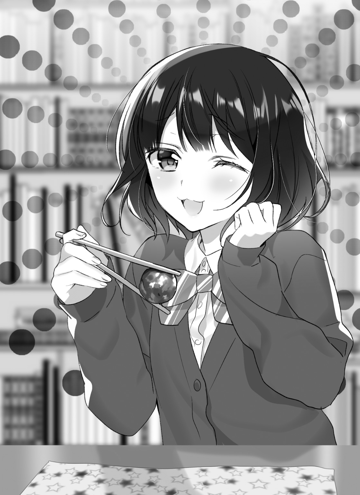
「俺の負けだよ。無条件で玉子やる」
「なんかそれで勝ちもらうの釈然としないなぁ。あげるよ、ミートボール」
ひょいひょい、とお互いの弁当箱の上で、だし巻き玉子とミートボールが交差した。その淀みない動きは、エースパイロット同士の宇宙戦に見えないこともない。
「あれ、冷凍食品っぽくなくね？」
「昨日の晩ご飯の残りだよ」
「へー、ミートボールといえばとりあえず冷凍のイメージがあったからなぁ」
「......やっぱ返して」
「えっ、ちょ、なんで」
ミートボールが再び彩李の弁当箱へ舞い戻る。代わりに、タコさんウィンナーが選手交代とばかりに飛んできた。
「今のチェンジになんの意味があったんだ、おい」
「ミートボールはママが作った晩ご飯の残り。タコさんウィンナーは朝、自分で焼いたから、ボクが交換条件として提示するのはこちらのほうが筋が通っているのさ」
「......ママ？」
「うん、ママ」
言いようのないくすぐったい感じが、部屋の空気を吹き抜けていった気がする。
「なんだい、ボクの呼びかたに文句でも？」
「や、そういうわけじゃないけど」
「ほふーん？ さては佐々井氏、普段は母親のことをお母さんと呼ぶのに、人前だとかっこつけて『おふくろ』とか呼んじゃうタイプですな？ それも無理して言うからちょっと声とか上ずっちゃう感じで」
「ぐっ、ふぉっ......！」
「なんちゅー図星の分かりやすさだ。ボクがニュータイプであることを差し引いてもバレバレだぜ？」
「いや、お前がニュータイプであることを前提にするなよ。そこは譲らねえよ」
「ということは指摘された事実は認めてしまうわけだね。語るに落ちましたなぁ佐々井望どの十六歳独身」
「法律的にだいたい独身だろ！」
「出ましたな司法の犬め！ もっとキミにはこう、反抗精神とか反骨精神とか豚骨変身とかないのかい？」
「なんだそのラーメンみたいなメタモルフォーゼ」
「九州の人間に言わせると、関東圏とかで普及した、こってりねっとりしすぎた豚骨ラーメンはちょっと違うらしいね。ちなみに佐々井氏はラーメンのお味は何派？」
「塩」
「これだよｗ」
「お前今まちがいなく日本人の半分以上を敵に回したからな」
今、鼻で笑ったからなこいつ。
「ちょっと塩派の人口に期待しすぎじゃない？ キミ、せめて一番メジャーなのがしょうゆだろうことは受け入れなよ。しょうゆがルフィとか悟空とかデクくんとかナルト、んで味噌がゾロとかべジータとか爆豪くんとかサスケなんだよ。塩はせいぜい――」
「やめろめろめろやめろめろ！ そのポジションが誰なのかを話し始めると今までにない大戦争が始まるから！ っつかそういうお前は何派だよ」
「カレー」
「外道も外道じゃねーか！」
「ボクはゼットとかクウラとかが好きなんだよね。特別感っていうか。たとえばモンスターをコレクションする系ゲームだと、ボクは百パーセントの確率でイベント配布限定モンスターを嫁にするんだ。そういう女だよボクは。......ふふっ、幻滅した？」
「二面性のあるいい女っぽいテンションで話すな！」
「ボク二面性のあるいい女ポジションなんだけど」
そういえばそうだった。
「っつか塩派を笑えるレベルじゃねーマイナー厨じゃないか」
「いやまぁ別にキミを悪いとは言わないんだけど、こう、キミはよしんばお酒が飲める年齢になっても居酒屋で、いの一番にカルーアミルクとか頼むんだろうなぁって思っただけだよ」
「高校生に分かりづれえ例えのくせになんか馬鹿にされてることだけはスッゲー伝わってくるよチキショウ！ 煽らなきゃ会話できんのか！」
「ボクんとこに来る時点でそんなの分かりきってたじゃないですかぁ、フヒヒ。っちゅーか、文句言うなら素直に瑠句たそ誘ってご飯食べりゃ良かったんだ」
「お前が静かにしてくれば済む話なんだけどなぁ。............っつーか、誘えないだろ」
「その理由を五十文字以内で述べよ」
「......」
「おっと、沈黙は三点リーダーとして一秒につき一文字換算だからね」
「キツくない!? いや、その......だってなぁ」
「だって？」
少し、躊躇した。
後ろめたいわけでもないのだが、それが自分の喉を通って出てくるのは、不思議と見えないトゲを味わっている気分だった。
「あいつ、女子グループに入って飯食えるようになったから。今さら、邪魔できないだろ」
「............」
「なんだよ」
「............佐々井氏」
にやにや、と。
そういうオノマトペが似合う表情は、これなのだな。と思える顔を、彩李はしていた。
「だから、なんだよ」
「キミさ、瑠句たそに、もう追い抜かれてんじゃないの？ 充実度ってやつで」
「............」
ううん、と唸る。
ここ最近、瑠句は確かにクラスメイトと会話できている。
一緒に昼食をとるような仲間もできている。
瑠句が女子グループで食事している光景を、思い出す。
「いや、さすがにそこまでは......ない」
「あ、悩んだ挙句、ない判定なんだ」
「瑠句のやつ、まだ放課後に遊びに行ったり、長いことＬＩＮＥでだべったりするのはキツいみたいだし。まだ俺の手は必要だと思う」
「へぇー、保護者だねぇ」
「俺が止めなきゃ、手作り弁当に熊肉のメンチカツを作るくらいだし」
「なんで瑠句たそはいちいち食戟で使いそうなご飯を用意するんだい？」
「車で例えるならスペックは高いはずなんだけど、その、運転手がそれを乗りこなせていないというか、ハンドルがついていないというか」
「なるほどねぇ。佐々井氏がドライバーにならなきゃいけないわけだ」
「そういうわけだ」
納得した様子で彩李は、俺と交換しただし巻き玉子をモムモムと頰張った。
喉を鳴らした満足げな顔は、「だいたい現状を飲み込みましたよ」と言わんばかりで、すました態度に超然的なものすら感じる。
「っていうか、保護者を否定しないんだ」
「......なんかおかしかった？」
「ううん。ただ、人と人との関係をひとことで表すのってけっこう難しいからね、見当はずれなことを言っていたかもしれないと思って」
「まあ、瑠句がいうには共犯者らしいんだけど......それもいまいちしっくりきてないんだよな。力関係が一方的というか」
「瑠句たその犯行を助けてる感じと思えば、共犯者なのかもしれないなぁ」
「関係の呼び方に、そんなにいろいろ考えるもんかね」
「いざどういう関係？ って聞かれたときに考えちゃうじゃない？ キミ、瑠句たそと仲良さそうにしてて、どういう関係かひとことで説明できる？」
「......それは」
とてつもなく難しいかもしれない。
どうしたって男女が仲良くしていると、見ている方には妙なフィルタがかかってしまうし......いや、俺だけか？
世間一般のリア充は性別の垣根を超越しているようにも見える。俺が思っている以上に、男女の関係に対してさらっと流して見てる可能性も無きにしも非ず、雨ニモマケズ風ニモマケズって感じだ......。いかん、脳内ですらなに言ってんのかわからん。
「例えば佐々井氏」
「おう」
「キミ、須藤氏との関係はなんて言う？」
「それはまあ......ともだち」
「友達の言い方に迷いがあったなぁ。〝ガン・ガールゼット〟時代のクトロワ大尉くらいには迷ってるよ」
「いや、この四文字は口に出すと畏れ多い気がして」
「神の名前みたいな扱いになってるじゃないか」
「だってこう、彼女ほどじゃないけど友達っていう間柄は、なんかもっとしっかりイベント的なものを経て友情ゲージを溜めてないと、俺はともかく相手がね？ なんか、俺は友達だと思ってるけど相手はそういうの重いって感じるかもしれないし、でも友達ってなった時に申告しないからその辺がけっこう難しくって」
「そういうとこやぞ」
「何が!?」
「ボクが佐々井氏にかまいたくなるところさ。じゃあ、大谷一等兵とかはどう？」
「一等兵!? ......お、大谷は、須藤ほど仲いいワケじゃないし......クラスメイトかな」
「じゃあ野々村ちゃん」
「......野々村さん、は」
しばし、眉間をつまむ。
「......が、学級委員の同僚......いや、クラスメイト......」
「となると大谷一等兵くらいの距離感でござるかぁ？」
「いや、でも大谷よりは話すっていうか須藤の次くらいには話すわけだし......んん、でも友達......友達......？」
「野々村ちゃんのほうからは友達って言ってきそうですけどなー」
「でも女の子相手にその距離感はよけいに難しいし、なにより歴史的に見て女の子との関係に友達って答えたラノベとかギャルゲの主人公はたいていバッドコミュニケーションな気がするんだよ。そういう感覚が根付いてんだよ」
「あー、分かっちゃう、そういうの......」
「分かり手になってもらえる？」
「まあニュータイプだから理解が早いんだよボク」
「今だけはニュータイプに感謝だな」
「じゃあボクは？」
「は？」
思考の動きが止まった。
流れを考えれば、十分納得いく運びだったはずなのだけど。
「ボクとの関係はどんな感じよ、佐々井氏」
「......うー、ん......えーっと」
「ででっででっででっでー」
「アクションゲームで時間切れになった時の音楽やめれや！ えーっと、なんだろうな。まあ別に嫌いじゃないし、世話にはなったし......」
世話になったことを思い出す。クラス親睦カラオケ会、の前。
唇に感じた、飴の味。
「............」
「佐々井氏ー？ おーい」
「あ、いや。うん、友達だよ友達。こう、飯とか一緒に食ってくれるし」
「......」
「......え、ごめん。なんか距離感誤ったかんじ？」
「いや、それならそれでいいんだけどね」
「そ、そうか」
「そうなんだよ」
そこから先は、会話より食事の時間の密度が高かった。
胸には安堵があった。
今は穏やかでも、一瞬、心が波立った気配は、俺の中に残っていた。
■
瑠句がコーヒーに入れる砂糖の数は、もう覚えたので聞いていない。
我が家自慢のコーヒーメーカーにはミルクを泡立てる機能があり、ふわふわでまろやかなカプチーノが作れるのだが、それでも甘みが足りないのだそうだ。
「ほれ、こぼすなよ」
「ありがとうございます。いただきます」
座る瑠句へカップを差し出し、俺は砂糖なしのカプチーノを手に、ローテーブルを挟んでその向かいに座った。
自室に瑠句がいる。
この光景は、実際のところ、さほど慣れた状況ではない。
というか、別に家に上げるつもりはなかったのだが、押し切られた。いつも〝作戦会議〟に使うカフェに、クラスの女子グループが入っていくのが見えたからだ。
代わりの店など知らないし、仕方なく二人で内密に話ができる場所として、俺の部屋が選ばれた。
慣れていないとはいえ、毎朝迎えに来る瑠句を部屋に上げるのは初めてではないし、さすがに瑠句の部屋に上がり込むことは、俺にはできなかった。
掃除をする決心を、もう少し早くしておけばよかった。
別にお客用のカップでもないのに、瑠句は堂々とそれでコーヒーを飲みながら、本棚にちらちらと視線を移している。
「あ、望くん。このマンガ集めてるんですね」
「どれ？」
「バレーボールのやつです」
「あー。そのマンガは市民権があるからな」
「しみんけん？」
「リア充も読むから、話題にしやすいやつ。そういうマンガは持っててもオタ臭くないの」
「へー......言われてみれば、なんとなくリア充っぽいストイックな感じですよね」
「スポーツ物とか、ヤンキー物。あと、バラエティで紹介されるくらいメジャーなやつ。その辺は持ってるって言ってもいいやつ。ただし、熱く語りすぎたらダメ。あくまで相手がどの程度知ってるのかを見極めて話す。知識自慢はしないこと」
「ま、マンガ一つとっても難しいんですね」
「話題の濃さで置いてきぼりにすると、ヒかれるからな。オタクはマンガで知識を得るが、一般的にはマンガの話題は共感のツールなんだ」
「共感の？」
「映画のＣＭとかでさ、めっちゃ泣けましたぁ～、とか言うじゃん。ああいうノリだよ。同じ気持ちになりました、ってとこが大事なワケ」
「へぇー......」
瑠句には足りてないところだぞ。
とは言えなかった。
「じゃあこの辺って、マンガ棚なのに教材みたいなものですね」
「まあ、そうだな」
「趣味のマンガはやっぱり置いてきちゃったんですか？ 〝ガン・ガール〟のコミカライズとか」
「そういうのはちゃんと隠してある」
「......ベッドの下とかですか？」
「あのね、このご時世そんなクラシカルなところに隠すとか、見つけてくださいって言ってるようなんもんだぞ。クローゼットの奥に入れてある」
「なるほど......読んでいいです？」
「汚すなよ。あとちゃんと時系列順に並んでるから、本編の前にアナザーストーリーの〝重力戦線〟を読めよ」
「さすが望くん......古本屋でもほとんど品薄のアレを持っているとは......」
瑠句は丁寧にクローゼットを開ける。
一目では小物入れやカラーボックスで隠されているが、それらを除ければすぐ本棚は確認できるはずだ。
「た、タイトル見づらいですね......どれがどれやら」
「俺はもう大まかな位置を暗記してるから困らないんだけどね」
「時系列順ってことは、端のほうから読めばいいんでしょうか......このへんかな？ よいしょっと」
「あ、ちょっとまって。そこガン・ガール以外の本も入ってるから――」
「............」
「瑠句。何引っ張り出した。おい」
「〝金髪巨乳アンソロジー〟......」
「しまって」
「あの、これ年齢制限」
「いいから早くしまって」
「......あ、はい」
オタク同士だと、あんまり言葉がなくてもいい。「触れるな」と言ったら「触れるな」だ。瑠句は粛々とそれを本棚にしまう。
「なんか邪魔になって本が入らないのですが......」
「クローゼットだからな......何か挟んでるんじゃないか。っつーか俺がしまうからもうそれ置いとけって」
「はさんでる......これですかね、えい」
パンツだ。
灰色のボクサーパンツだ。
「......」
「......それはしまわなくていいからもう置いといてくれる？」
「............あの」
「置いといてくれる？」
「..................のぞむ、くん。ふだん、割と、ぴっちりした感じの......」
「あのさ」
「............はい、戻しておきます」
瑠句はパンツを適当なところに置いて、ごそごそと本を棚に戻した。
それから自分の掌をじっと眺めて、動かなくなる。
「......こういうの何て言うんでしたっけ。ラッキースケベ？」
「......今みたいなイベント、普通、俺がやる側だよね？」
「やりたかったんですか............？」
「..................」
「......」
「しかし瑠句、今日は妙に浮かない顔だったな」
「え、あ、はい」
強引に話題を変えるしかなかった。
もう空気変なんだもん。
「......お昼、女子のみんなと食べたじゃないですか」
「ああ、だな」
俺は彩李と二人で食べたけど、とは言えない。
「大進歩じゃないか。以前の瑠句だったらまずできなかったことだろ」
「会話運びに失敗しまして......」
「普段アレなのに自覚するほど失敗したの!?」
正座して、両手で顔を覆う瑠句は、その派手な見た目に対してあまりにもミスマッチな姿に見えた。居た堪れない。
「おま、何やったらベートーベンのくだり以上にまずい話し運びができるんだよ」
「ひぇっ、聞いてたんですか」
「そりゃ聞こえるがな」
「うう......ま、まあその、お昼はですね、クラスの女子で週末遊びに行けたら楽しいね、と、そういう話になったんですけど」
「おう」
「その女子のグループに自分が含まれていると発想できなくて」
「......」
「いえ、そうかな？ とは思ったんですけど、勘違いだったら恥ずかしいですし、それ私も行っていいのかしら。なんて言うと、がっついてるみたいでみっともないし......それで私がお呼びじゃないんだったらどんな顔すればいいのか分からないですし......よしんばそれで、いいよ。とか言われても気を遣わせたのかな、ってなっちゃうじゃないですか」
「ないですかじゃないが」
「だから......特に興味ない感じでご飯食べながら、へぇ、そうなんだ。楽しんでらっしゃい。って言ったんですよ。そしたら、えっ、来々木さん行かないの？ って」
「言われるでしょそりゃ」
「青天の霹靂というか......出すか出さぬかの札遊び、心理戦の果てにババを引いた、と。そういう敗北感がありましたね」
「やかましいわ」
「もう引っ込みつかなくなっちゃって私、週末は自分と向き合うための時間だから、人の声のないところで静かに過ごしてるとか言っちゃって」
「うわぁ」
「そしたらなんか、あー確かに来々木さんはそういうことしそう、とか、やっぱり読書とかしてるんだろうね、みたいにな感じになって。いや、でも行かないとは言ってないじゃないですか。まだリカバリーは効くと思ったんです」
「心が強い」
「でも気づいたら口の中がカラカラに乾いてたので、水筒の麦茶を飲み込んだんですけど、それがまたなんかこう、ツンと澄ました感じに見えたらしく、その話はそういう感じで終了してしまったんですよ」
「思ったより深刻だったんだなお前のコミュ障......」
「ただ、週末はほんと人と会わないで、一日中スウェット着てネトゲやってるのは確かなんです......」
「それは分かっちゃう自分がやだなぁ」
「ですよね。ちょっと毛玉でポロポロくらいのやつがちょうどいいんですよね。なんか自分の価値の安さを目視できる感じで」
「いや、そこまでは言わないけどね？」
「最近ログボも逃し気味でしたし......期間限定のレイドボスからのドロップもまだ集めきっていないので、まあそれはそれでいいかなって思っちゃったんですけど、午後の授業受けてるうちに自分のダメさ加減を見つめ直してて、気づいたら頰が濡れてたんですよ。そしたら隣から彩李さんがハンカチくれちゃって」
「うっわ......」
「佐々井くんになんかされたのなら、いつでも力になるからね、とよく分からないことを言われたのでそこは頷いておいたんですけど」
「勝手に頷いてんじゃねえよ！ こっちに火の粉が飛んできてんじゃねえか！」
しっかし、ひどいもんだ。
長期連載ラブコメの主人公だって、フラグは再収穫可能な程度に折るのに、こいつ焼畑してるもんなぁ。たぶんデスゲーム物とかに出演したら、むしろ死亡フラグまでへし折って生存するんじゃないだろうか。
「まあ、彩李さんにはああ言いましたけど、望くんのことは強い味方だと思っています」
「彩李にもそう言ってほしかったなぁ」
「そういうわけで、このままで終わってやるもんかとは思っているんですよね」
「どういうわけだよ」
「足踏みはしましたが、ステップを踏み外したわけではありません。また改めて高みへ昇るチャレンジをするために、ぜひ望くんと協力していきたく候......」
「その図々しさが昼休みのうちに発揮できれば良かったのになぁ」
まったく。最近は少しマシになってきたかと思えば、この有様では大して進歩もない。まだ俺がついてなきゃダメみたいじゃないか。
そんな風に思う自分の胸に、呆れよりも安堵が多いことを自覚して、俺は少し情けなくなった。彩李の言葉が頭の中でリフレインする。
「望くん、どうしたんですか？」
「いや、なんでもない」
「なんでもないと言うには浮かない顔に見えます。それはあたかも寝ぼけて割った卵の中身を三角コーナーに捨てて、ボウルに殻を入れたときのように」
「例え下手だな！ っていうか、なんでもないって言ったら食い下がるなよ！ そこはなんとなく追及しない感じの流れあるじゃん」
「で、どうしたんですか？」
「聞かねえ！ いや、うーん......」
まさか「リア充基準で瑠句に追い抜かされてる気がして焦ってた」なんて言えるわけもなく、かといって、こうなると頑固な瑠句をごまかせる気もしなかった。
仕方なく、俺は別件で落ち込んでいた話題を持ち出した。
「いや、実は須藤がな？ 彼女ができたらしいんだよ」
「わあ......！ なんと、夏休みを待たずしてですか！ さすが須藤くん......私の目から見てもリア充っぽい男子トップランカーでしたからね」
「やっぱり女子から見てもそう思うか」
「キアヌ・リーブスみたいなオーラがありますもの」
「割とリアル充実してなさそうな人を挙げてきたな」
「とにかく、見込みはあると思ってたんですよ」
「どこから目線だよお前」
うんうん、と納得するように瑠句は頷いた。
演技中の瑠句はクラスメイトに対して壁を作るが、こうして二人きりの時に話題に出す分には、瑠句は彼らに対して親しげな態度を見せる。
これは、カラオケに成功してから顕著になっている。
「......それで、どうしたんですか？」
「どうしたんですか、って、それだけだよ」
「それだけで浮かない顔だったんですか？」
少しだけイラっとした。
そもそも、なんでもないって言った俺に食い下がってきたのは瑠句のほうだ。それでいて察しが悪いのはどうなんだ。
「先越された、って思ったんだよ」
「......ああ、なるほど」
「そりゃ、なんつーか。俺って彼女とかできたことないし、須藤って俺と違って本物のリア充だけど、クラスじゃ仲良く話してくれたほうだから......遠いところに行かれた気がしちゃったんだよな」
「はぁ」
「いや、分かってたんだよ。あいつなら彼女くらいすぐ作っちゃうってさぁ。でも普段、友達っぽく二人で〝あー、彼女欲しいなー〟とか〝青春してーなー〟とか言ってたこと思うとさ、俺がそう思ってただけで、実は全然ステージ違ったんだなって思っちゃうじゃん。あれってさ、結局〝俺も全然テスト勉強してねーわー、やべーわー〟くらいのもんだったんだよね」
「はぁ」
「友達として話してると、実はこいつと俺にそんなに差はないんじゃないか......って錯覚しちゃう感じ。あれホント罠だよな」
「......はぁ」
「......え、共感できない？」
「友達いないもので」
「ごめん」
「遊び友達も茶飲み友達もいなければネットの友達もいないもので」
「ごめんて」
「車もそれほど走ってねえもんで」
「ごめんってば！」
ほんと地雷だった。
っつかネトゲプレイヤーのくせにネットにも友達いないのか......。
「......でも、実際どういうものなんでしょうね」
「何が？」
「恋愛ですよ」
「分かるわけないじゃん、俺らみたいなのに」
俺〝ら"と、複数形であることを強調した。
「それはもちろん、私だって経験はないから分からないですけど......でも、ぼんやりと憧れみたいなものはあるじゃないですか」
「......そう？」
「望くんはないんですか？」
「んー」
瑠句から聞かれることが、結構意外だった。
なにせ、俺たちは過去と現状が似ているから、スタンスも同じだと思っていた。
彼女が欲しい、とは俺も言う。
それは別に噓じゃないし、実際に彼女ができた須藤を羨ましく思う。彼女持ち特有の悩みやあるあるネタで話してみたりもしたい。
けれど、俺の中で彼女が欲しいという気持ちと、恋愛への憧れは別だった。
「別に」
「えー？ 案外、欲がないですよね、望くんって」
笑いながら瑠句はそう話したが、こうして向かい合う俺と瑠句の間に、どれほどの温度差があったのだろう。
年齢＝彼女いない歴が、恥であることくらい分かる。
ただ、彼氏彼女の関係になるまでの過程とか、感情の動きとか、そういうものを想像できなかった。
想像できないところに行ってしまった須藤を、遠く感じた。
想像できないところに憧れを抱く瑠句も、今は少し遠くに感じる。
「欲がない、か」
瑠句は、俺と瑠句が一番近い異性同士であることを分かっているのだろうか。
瑠句との関係は心地よい。
同じく元オタクで、リア充になろうとしている噓つき同士の共犯者。
近くにいることが落ち着くし、瑠句がリア充に憧れる気持ちも分かる。助けてやりたいとも思う。けれど、そこに恋愛というものが絡んでくると、男と女である俺たちの間に、何か不純物が混じってしまうような気がした。
瑠句が髪を鮮やかに染め、今のキャラを作ったこと。
それについて考えだすと、途端に心地よさが逃げていくのはなぜだろう。難しいことを考えず言葉を交わせる関係が、壊れてしまいそうなのはなぜだろう。
安心して立っていられるはずの「瑠句の傍」という場所が、急に知らない場所になってしまう気がして、少し怖い。
「なんにしてもさ、恋人とか恋愛とか、そういうのは最終ステージだよ。リア充の免許皆伝、奥義みたいなもんだ」
「え、ええ、それはそうですよねっ！ そりゃ私だって、今は全然レベルが足りないとは分かっておりますし」
「だから――」
「でもだからこそ、レベルアップが必要だと思うんですよ！」
本当に、向上心だけはある。
けれど脱線しつつあった話題が、ようやく本題に戻ってきた。
「まあ、そのための作戦会議だったよな」
「一つ一つステージをクリアし、コマを進めていけばいつかはゴールに辿り着くはずなんです！」
「今どの辺のに立ってるかの把握をしたほうがいいぞ？」
「望くんから見るとどうですか？ 私、最終ステージ〝恋愛〟まで何ステージ離れてますかね」
「３６５ステージくらいじゃない？」
「超大作ゲームじゃないですか！」
「とりあえず一つ先のステージに進まないとな」
「つ、次のステージはやはり〝友達〟でしょうか！」
「〝まともな会話〟だろ」
「それはもしかしてまだチュートリアルなのでは」
「お察しの通り」
うーん、と唸りながら、瑠句が机に突っ伏した。金髪のつむじが見える。
あの大きな胸はこういう体勢になると、テーブルにのしっ、と乗る形になる。クッションいらずで便利そうだな。
「私、最終ステージに行くまでにどのくらいかかるんでしょう......」
「卒業までに、なんとかする感じで頑張れば」
「卒業したらもう高校生じゃないじゃないですかぁ......高校生という青春の佳境は二度と帰ってこないんですよ？」
「つったってなぁ」
「せめて、こう......効率のいいレベルアップは図れないものでしょうか。ネトゲだってレベル三つ四つぽこん、と上げられるような狩り場はありますし」
「現実とネトゲを混同するなよ。だいたい、そういうのは荒療治の域だろ」
「荒療治！ そう、私たぶん荒療治が必要なんですよ！ 会話スキルを磨くための！」
「たとえば？」
「たとえば......うーん」
瑠句は体を起こし、再び唸った。
胸を持ち上げるように左腕を添え、そこに肘を立てるようにして腕をＬ字に組む。立てた人差し指を顎に当てる。
「考えてます」感はあった。
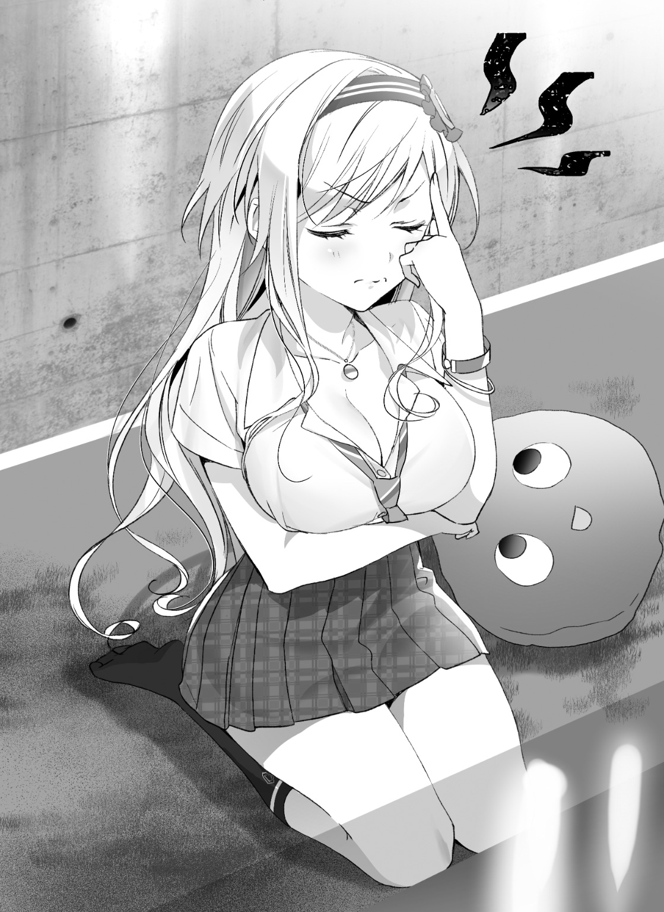
やがて、顎に当てるのは指から拳に変わり、次第にこめかみを押さえ、しまいには唸りながらくしゃくしゃと髪をいじり始めた。俺はソファに寄りかかって、スマホでＷＥＢ漫画を読みだした。
「望くんも考えてくださいませんか......？」
「いったん頭をリフレッシュさせてるの」
適当に返し、俺はスマホをいじり続ける。
瑠句もしばらく考えていたが、やがて諦めたようにカプチーノをすすった。
大きな尻を揺らしながら四つん這いで動き、本棚から勝手にマンガを出して読み始めた。「いったん頭をリフレッシュさせます」とご丁寧に真似してくれる。
二人分の体温があると、部屋の気温も上がるようで暑く、俺はフローリングに転がった。
足を適当にばたつかせると瑠句の足に当たった。
軽く蹴られたので蹴り返した。
ゲーセンで取った、可愛いんだか何だか知らないけど、女子ウケは良さそうだから置いといたクッションを瑠句が占拠し、マンガを読み進める。
次第に空が茜色になってきたころ。
「分かりました！」
唐突に叫ばれた。
「え、マジ？ 俺、未完結のマンガでも考察とか読むの避けてるんだから、黒幕説とか言わないでほしいんだけど」
「いやマンガについて分かったのではありませんよ。今日の議題についてですよ」
「あ、まだ続いてたんだそれ」
「バイトですよ！」
「............」
コンピューターのデータ容量のことでないのは分かった。
「アルバイトをすることで、社会経験を積めば、学生との会話くらいへっちゃらへのかっぱになるはずです！」
「お前、ゲームでノーマル難易度キツいときに一旦ベリーハードやって感覚麻痺させてノーマルに戻ってくるタイプか......」
「でも、いいアイデアだと思いませんか？ クラスメイトでも、バイト経験がある人ってそう多くないみたいなんです。リア充のみなさんと同じ武器ではなく、一歩先に行った武器を手に入れることで余裕を持てるということですよ」
「いやぁ......」
言うことは分からんでもない。
瑠句は無駄に大人びたキャラを作っているのだから、クラスメイトより大人っぽい体験をすることで中身を追いつかせるのは悪くない。
それに、それは〝上手くいけば〟俺でも自信を持てそうな手段だ。
上手くいけば。
「お前な、バイトって簡単に言うけど、たぶん俺たちが想像してるより遥かに大変だぞ？」
「でもぉ」
「デモも行進もないの。そもそもバイトってやりたいからってできるもんじゃないだろ。働く以上は責任があるし、まずバイト先を見つけるってハードルが高すぎるんだよ。まともな会話の練習が必要だってのに、面接とかできるか？」
「無理です」
「もうちょっと食いさがれよ！」
「うーん......せめてこう、コネとかあればいいんですけどね。面接を飛ばしてすぐ働かせてもらえるようなコネが」
「ないないないないドラゲナイ。そんな美味い話ない。コネだって作るのに努力、っつーかコミュ力が必要だろ。交流を重ねた結果できるものだぞ、コネは」
「空からいきなりバイト先が降ってこないものでしょうか......」
「メテオかよ。大惨事になるっての」
「ううう......どこかに都合良く転がっていれば楽ですのに......」
「そんな道端の石ころみたいに働き口が転がってたら、現代社会はもっと明るく――」
吐きかけた溜息を叩き切るように、テーブルの上のスマホが鳴り始めた。クラスメイト用に設定してある、無難な着信音。
コミュニケーションといえばＬＩＮＥが基本のこのご時世に、電話の着信音というのは、割と緊急の内容を意味することが多い。自然、この音が苦手になってしまう人も少なくはないと思う。
スマホに表示された名前を見る。
「......野々村さん？」
瑠句に目くばせすると、頷いた。
了承を得て、俺は通話のマークを指でスライドした。
「もしもし？」
「はーい佐々井くん、いま大丈夫だった感じ？」
「まあ、暇してたけど」
ちょっとだけ視線が痛くなった気がする。
「いやさー、佐々井くん、アルバイトする気ない？」
「バイト？」
とっさに声が漏れ、思わず瑠句のほうを見る。
瑠句が犬であったなら、頭の上で耳をピンと立てていそうだった。というか既に犬に近づいていた。瑠句はテーブルの下をくぐって、電話中のこちらへ近づいてきた。
「そうそう、ウチの叔父さんのやってる喫茶店なんだけどさー。七ツ風ってお店知ってる？」
「......ごめん、聞いたことない」
「だよねー。いつものバイトがどの子も急に入れなくなっちゃうらしくて。夏休みの間だけでいいらしいからさ」
「へ、へぇー」
「時給はそんな出ないけど、代わりに気楽な感じでやってくれていいって。どう、興味ない？」
「う――――ん」
既に瑠句は俺の至近距離で、スマホの裏に耳を押し当ててめっちゃ話を聞いていた。体も近けりゃ頰も近い。
くいくい、としきりに袖を引っぱられる。無言の強請りだ。棚からぼたもちどころかホールケーキが降ってきたようなこの状況に、興奮するのも分からんではない。
が。
「で、でもほら、俺あんまバイト経験とかないんで、一人でバイトとなるとちょーっと自信ないかなって」
瑠句が口の動きだけで「ガーン」とか言った。
そうだ。バイトといっても何人が参加できるのかは話していない。一人でするにはハードルが高すぎるし、知らない人と一緒に働くなんてもっとキツいはずだ。そういうリスクのことを俺は伝えたかったし、たぶん伝わった。
が。
「あー、んじゃ須藤くんとか誘ってみるのはどう？ 叔父さんが言うには二人ほしいらしいんだよねー」
「私が行くわ」
「あれ、いま瑠句ちゃんの声した？」
「どぉうっほほほほほほほほほ！」
とっさに瑠句の口を手でふさいで体を離した。何やってんだこいつ。
「佐々井くん？ なんか今ゴリラ並みに慌てた声が」
「い、いや、ちょっと白玉ぜんざいをこぼしちゃって」
「うわヤバいじゃん。こぼしちゃいけない食べ物ランキング十年連続一位のやつじゃん」
「マジでぇーそれヤバいわー二位が気になるとこだわー」
「カレーうどんじゃない？」
「納得ぅー」
「でも、瑠句ちゃんと一緒にいるならちょうど良かったんだけどねー。叔父さん、男女バランス良く雇いたいとか贅沢言っててさ」
「えっ」
隣で瑠句がガッツポーズする。
「とにかく、早めに処理したほうがいいよ。白玉ぜんざいが消えない傷になる前に」
「あ、うん。だからちょっと、後で改めて連絡するから」
「ういっしゅ。なるべく明日までくらいに返事ほしいみたいだけど、急がなくてもいいからねー。んじゃまた」
緩急の利いたテンポで流れるようにまくし立ててから、通話が切れた。
一瞬、しぃん、とした静寂が部屋に満ちる。けれどそれは本当に一瞬の......というか、一度の瞬きすら許されないほどの短さだった。
「望くん！ 降ってきたじゃないですか、バイト先！」
「......んもー」
「私行きますからね！ ぜったい、ぜったい一緒に行きますからね！」
「分かったよ、もう......」
相手は俺よりも早く瑠句を気にかけていた野々村さんだ。紹介すれば、断らないだろう。
「......っていうかお前、野々村さん嫌いじゃなかったっけ？」
「に、苦手でしたけど別に悪印象っていうわけじゃないんですよ？ ただ、普段のキャラだと野々村さんみたいなタイプには、特に強く当たらなきゃいけないというか......」
「ああー......」
瑠句が演じているのは――間違ってるけど――〝クールでデキる感じの女〟で、野々村さんは生まれながらの〝愛され主人公ガール〟。必然、キャラを保つと敵対しなければならないわけか。難儀な......。
「こういう機会なら、野々村さんともちょっと仲良くなれるかもしれないかな、と！ ほら、共闘イベントを通じて明るいヒロインと蔭のあるライバルが仲良くなる展開は王道ですし」
「ずいぶん自分を高いキャラポジションにおいてるな......」
ナチュラルに図々しいのは瑠句の武器でもある。
その場では物怖じすることもあるが、企画段階ではノリノリなのだ。
「......ま、そういうことなら俺から言っておくよ」
「あ、ありがとうございます！」
まあ、なにはともあれ、次なる具体的な目標が決まった。
なんだかんだと言ってはみたが、バイトをさせてもらえるなら願ったりだ。
考えてみれば、学校とは全く違う環境に身を置くのも悪くない。瑠句も、学校ほど普段のキャラに固執しなくていいはずだし、荒療治になるのも確かだ。
結局、俺は時間をおいて、野々村さんにＯＫの連絡を入れた。
その時は何も気づいていなかった。
アルバイトというものを、自分がどれだけ楽観視していたか。
来々木瑠句という少女が、自分の想像とどれだけ違うのか。
そして、俺と瑠句の関係が、どれだけ変わってしまうのかを。
二章 『野々村麻紀は割と自分のことを語らない』
自由に席を選んでください。
と言われた時、なんとなく真ん中を避ける気持ちは、多くの人に分かってもらえると思う。かといって、一番端っこを選ぶのも卑屈っぽくて好きじゃない。
結果として、端っこではないけど、真ん中からちょっとずれたあたりに座る。
映画館によく行く人は頻繁に味わうと思うし、男子に限定すれば、こういう感覚は男子トイレでよく直面するはずだ。
カフェ〝七つ風〟の立地は、まあそんな感じだった。
駅前、大通りの一等地というわけでもない。
隠れ家的と気取れる、裏路地に引っ込んでいるわけでもない。
まあ好きな人は好きだろうね、と言われるような洋服店や、週刊少年ジャンプはあってもラノベの品揃えが悪そうな小さな書店。そういう類の店が並ぶ通りの、角地よりは少し奥まった場所に、木っぽいプラスチックの看板を掲げて建っていた。
「めっちゃ居心地良さそう」
「でしょー？」
店内に入った俺の第一声に、野々村さんはそう返した。
俺のようなタイプに「居心地良さそう」と言われるのは、決して褒め言葉じゃないのだが、野々村さんは自慢げだった。
「いやぁ、助かっちゃったよね。もともと働いてたバイトさんが一気に用事で休んじゃって、叔父さん困ってたみたいでさー。佐々井くんと瑠句ちゃんがバイトに乗り気じゃなかったらどうしようかと」
「助かっちゃったのはこっちも同じだけどね」
「ま、臨時ってことで少なくとも二週間くらい、ちょこちょこ働いてくれればいいって話だから。給料安いぶん、気楽にね」
実際、店からは気楽な雰囲気が漂っていた。〝お客様に喜んでいただこう〟〝売り上げを稼ごう〟といった気配が伝わってこないからなのだが、それはそれで店として致命的なものを抱えている気はする。
チェーン店のような整った感じはない。かといって、個人経営の喫茶店にある〝玄人感〟のようなものも感じられないんだよな......。
内装も木目〝調〟だったり、名画〝風〟の絵がかけられていたり。
店内に流れるＢＧＭが自前のオーディオでクラシック......ではなく、ＦＭラジオ。
席に置かれていたメニューをちらっと見ると、いまいち根性の入ってない解像度の写真にゴシック体の商品名が添えられていて、そもそも、頼める料理もカラオケのルームサービスっぽさが溢れている。
椅子にだらしなく腰掛けて、頼んだコーヒーが冷めるまでスマホ弄っていても許されそうな雰囲気。
グルメ漫画の人が来たら三秒でブチ切れるだろうな......って感じ。
俺はグルメ漫画の人じゃないので、どうせなら客として来たいと心から思った。
「でも思ったより働きやすそうで良かったよなぁ、瑠句」
小声で耳打ちする。
「そ、そうね......」
「そういえばお前、グルメ漫画みたいな人だったね......」
瑠句は、育ちのいい猫が立派なおうちからホームセンターに売ってるケージに移されたような、とにかくそういう状態になっていた。
こいつの実家は中華料理屋とは聞いていたが、この様子だとよほど本格的な店だったのだろうか。瑠句の中での〝飲食店〟的に絶対にないタイプの空気を感じていると見える。確かデートの時も、そこそこ良い喫茶店に行ってたしなぁ。
「瑠句ちゃん。やっぱり辛かった？」
その様子を察して、野々村さんが心配そうにする。
いや、身内のお店でこんな反応されたら怒っていいんですよ野々村さん。
「......大丈夫よ。郷に入りては郷にしたがえ。じきにここの生態系にも慣れると思うわ」
「もうちょい失礼さを隠す努力をしろよ！」
「瑠句ちゃん、お弁当の食べ方とか上品だったし、育ち良さそうだもんね......ごめんね、なんか家電量販店みたいな匂いのするお店連れてきて」
「身内の店に対して野々村さんも辛辣すぎじゃない？ 奥のほうで泣いてるチョビヒゲの人、あれ叔父さんでしょ？」
「あっ、ほんとだ！ はーい叔父さん！ 叔父さん思いの麻紀ちゃんが助っ人さんを二人も連れてきたよ！」
「いい度胸すぎる......」
息を殺すようにさめざめと泣いていた叔父さんをなだめて、ようやく俺たちはバイトの説明を受けることができた。
まあ内容的には、普通に喫茶店のウェイターとウェイトレスだ。
いや、たぶん普通の店より楽な気がする。
なにせメニューに載ってた〝絞りたてフレッシュフルーツジュース〟はミニッツメイドだったし、調理を担当するのはだいたい叔父さんと野々村さんらしい。
皿洗いくらいはするのだろうが、食器はどれも地元のホームセンターで見覚えがあったので取り扱いに対するプレッシャーが皆無だ。
「叔父さんは道楽でやってるから」
という野々村さんの言葉に、圧倒的な信憑性が感じられる。
ただ、拘る部分には拘るらしく、渡された店員用の制服は、なかなかいいデザインだった。
「へー、かっこいい。カフェのウェイターっていうから適当にエプロンとかつけるのかと思ったら、ちゃんと上下用意されてるんだ」
「叔父さんはそういう服着て水出しコーヒー作るためだけにお店開いたらしいよ」
「清々しいくらい道楽だ......」
「エプロンも用意されてるから、好みならこっち使うのもいいけど」
「へえ、エプロンの色は落ち着いたココアブラウンか......。かっこいいね」
「マチカフェみたいでしょ？」
「一気につける気失せた」
野々村さんは叔父さんに恨みでもあるのだろうか。
「ま、何事も形からだよね。やっぱ制服着てみたいと思うし、佐々井くんもとりあえず着替えちゃって。アタシと瑠句ちゃんは奥で着替えてくるから」
「ん、うん」
着替え。
別に、部屋ごとしっかり区切られるというのに、なんだか知っている女子が近くで着替えを行うとなるとドキッとしてしまう。
「......覗いちゃダメだよ？ アタシはともかく瑠句ちゃんが泣いちゃうかも」
「や、いやっ、覗かなっ、のぞっ、ともかく!?」
「......べ、別に、私だってかまわないけれど」
「瑠句も対抗しなくていいから！ は、はやく着替えてこいよぉ......」
ようやく奥の部屋へ下がっていく野々村さんと瑠句を見送って、俺はやっと制服に着替え始めた。
■
「......いいじゃん」
学校の制服がブレザーなので、カッターシャツにベストといったきっちりしたデザインは、思ったよりもしっくりきた。
袖を通してみると、やはり仕事着という感じがして、バイトながら社会人の仲間入りを果たしたような気分になる。
着替えるだけで気軽に気分が変えられるのが、制服の力。
守備範囲外ではあったが、コスプレ趣味のオタクの気持ちも分かる気がする。
「いいよね......」
「うわっ、野々村さんの叔父さん！」
気づいたら背後に立っていた。
外見はチョビヒゲの似合う素敵なミドルなのだが、音もなく背後に立って「いいよね......」とかささやいてくるのは控えめに言って気持ち悪いよ！
「佐々井くん、だったかな。響きがサイっぽいからライノと呼ばせてもらってもいいかな」
「なんでいいと思ったんですかそれ」
「では少年と呼ぼう」
「なにが『では』なのか微塵も分かりませんけど」
「早くも喫茶店コスの良さが伝わっているようで何よりだよ。おじさんはそういう服が好きで喫茶店始めたとこあるからね」
「コーヒーじゃないんすか」
「コーヒーは味が好きなわけじゃない......っていうか苦くて嫌いだし、水出しサイフォンでコーヒーを淹れることが好きなだけだからね。客の喜ぶ顔とかもどうでもいいんだ」
「絶対それお客の前で言わないほうがいいと思います！」
「まあおじさんはマスターであって、ナイスミドルを演出する存在だから中年なのは仕方ないけど、ずっとその服を若い子に着せたくてウズウズしてたんだよ」
「すごい勢いで叔父さんの人間像が歪んできてる......っていうか叔父さんの一人称『おじさん』なんですか？」
「普段は女子大生にバイトしてもらってるんだけど、女子大生を相手に一人称をおじさんにすると会話するだけでおじさんの中に尊みエネルギー、トミルギーが溜まっていくんだよ」
「聞きたくない！」
「この辺に」
「指ささんでいい！」
「ところがちょうどみんな都合が悪かったらしくて、店の中に若いエネルギー......ワカルギーが不足してしまっていたんだ」
「野々村さんに冷たくされる理由がおおむね理解できましたけど、それならウェイターを雇う必要はなかったんじゃ......」
「んー、少年も大人になると分かると思うけど、若い男の子を見て補充される甘酸っぱいエネルギー、アマルギーも存在するんだよね」
「そのエネルギーぜんぶ別枠なんすか!?」
「ビタミンだっていろいろあるだろ？ あ、男子に性的な思いは抱いてないから安心して」
「注釈されても何も不安が消えませんが」
「いや違うんだよ。おじさん的にシブいミドルなマスターと、若い男の子のウェイターは別個の枠で存在してなきゃならないんだよ」
「叔父さんはシブいミドル枠を自負することに何か、罪悪感とか申し訳なさとか感じてないんですか!?」
「普段、ウェイトレスはいたけどウェイターはいなかったからね。キミには期待してるよ」
「おそらく人生でもけっこう上位にくる嬉しくなさを感じてます」
「まあまあ、キミも喫茶店コスの良さってやつがだんだん分かってくるはずさ。ほうら、そろそろ女子たちの着替えが終わるよ。見てみたまえ」
「へ？」
指さされて振り向いた先で、扉が開こうとしていた。
奥へ続く扉の向こうから、野々村さんと瑠句が姿を現す。
「やっほー、佐々井くん。おまたせーい」
「............それなりに、着やすいわね」
それはもう、似合っていた。
男性客に媚びた、メイドっぽいフリフリスタイルではない。
ココアブラウンの落ち着いたエプロンと、清潔感のある白のブラウス。
エプロンと合わせたブラウンだが、若干色合いを変えて、デザイン的に埋没しないようにされたスカート。しかも割と丈が短く、タイトだ。
エプロンは首と胴で留めるようになっていて、しかも胴のあたりは絞られる構造らしく、必然的にボディラインを強調する効果が発生している。
野々村さんでもその効果は顕著だが、瑠句はヤバい。マジでヤバい。
スタイルが日本人離れしているもんだから胸のとこだけぱつんぱつんで、頑張って胴を絞ったのか、エプロンの横からちょっと〝たわわ〟がはみ出ている。あれでは既にエプロンというよりおっぱいのラッピングだ。ラッピングされているのに「ご自宅用ですか」と聞かれたら頷いてしまいたくなる。
「............変じゃないかしら？」
演技モードながら、染めた頰を隠しきれない瑠句が身をよじる。
「えっ、あっ、いい。すげーいい、うん。似合ってるっちゅーか」
「ねー。アタシも瑠句ちゃんすっごく可愛いよって言ったんだけど、そっけなくてさ。やっぱ佐々井くんに褒められたほうが嬉しいっぽい」
「そ、そうか。いや、ほんといいぞ。似合ってる」
「............そう」
瑠句が目を伏せて顔をそむける。
自然と自分の体を抱くようにしているが、そのポーズは今、ほんとヤバみがある。
顔は耳まで真っ赤だった。
俺の褒め言葉が、あの白い耳を赤く染めさせたのだと意識すると、こちらまで赤くなりそうだった。
「いいだろう、少年」
叔父さんの手が肩に置かれ、俺の頭は急速冷却された。
「い、いきなり来るのやめてくださいよ」
「クセになってんだ、音消して歩くの」
「暗殺一家のご出身ですか!?」
「まあそれはともかく、キミもこれで分かっただろう？ 裸エプロンなんてぇのは結局ジャンクフードなんだよ。おじさんがオーダーメイドで作ってもらったエプロンは一着の値段が万単位の懐石料理みたいなもんだからね」
「マジで何やってんだこの人......」
「でも、いいだろう？」
「すげーいいです！」
バイト初日以前の顔見せが、今日の目的だった。
とりあえず、バイト先の店長と仲良くなれたことは得難い収穫だったんじゃないかなぁ。
■
――バイト初日。
「すげー暇だな」
「暇ね」
午前中から開けている割に、客の入りがなかった。
それらしい衣装に身を包んだ俺と瑠句は、すっかりテンションも上がり、トレーを片手に持ってポーズを決めたり、グラスを磨いたりテーブルを拭いたりしていたのだが、もう全然客が来なかった。
「いや、平日の朝とかこんなものだよ」
店長、もとい叔父さんはゆっくり首を振りながら、そう告げる。
「朝食目当ての客とか来ないんですか」
「うちもモーニング向けのメニューは置いてあるけど、ぶっちゃけ朝マックするかスタバに行くほうがバリエーション豊かだからね。というか通勤通学路から外れてるからわざわざこの店まで寄って食べる物好きとかいないと思うよ」
「それほどしっかり問題点を把握しておいてこのチョビヒゲ......」
「とはいえ、昼くらいからはそれなりに人が来るからね。おじさんだって正直コーヒーを淹れたいだけで接客はクソ面倒だけど、きちんと働いてもらうよ」
「もっとオブラートに包んで言えないのか!?」
まあ一応、給料も出るのだから真面目にやるさ。
しかし、客の少ない間は暇ではあったけど、安心でもあった。何せ、瑠句の心配をする必要がなかったからだ。
野々村さんと喋らせておくだけなら、瑠句はある程度は演技していられる。
「だってさー、めっちゃウケない？ 瑠句ちゃんもそう思うっしょ？」
「さあ......どうかしらね」
「だよねー、ほんとヤバいからねー」
「やれやれだわ......」
気の毒なくらい会話が成立していない。
が、野々村さんが一切気にした様子がないので良いとしよう。
コミュ障のやつ限定で恐ろしく空気が読めなくなる野々村さんは、コミュ障が服着て歩いてるような瑠句と会話していても問題にならない。
しかし、客が増えるとそうもいかない。
あのキャラを保ったまま、接客という行為がこなせるのか。それは大変な心配だった。
「あっ、いらっしゃませー！」
などと言っているうちに、野々村さんにつられて入り口を覗くと、客が一人来店していた。
「い、いらっしゃいませ！」
遅れて俺もそう言う。
いかんいかん、瑠句に気を取られて自分がバイトに身を入れない、では話にならない。瑠句との共犯関係は、あくまで俺がしっかりと地盤を固めているからこそ成り立っている。
来店した客は、見た感じ、外回りのサラリーマンといった風体だった。たぶん用事と用事の間に時間を潰しに来た、といったところだろう。
何度かバイトしたことのある野々村さんは、てきぱきと席へ案内し、メニューを勧める。俺はとっさに動けず、突っ立っているだけだった。
瑠句は、
「......えぇええ......」
二度見した。そりゃするさ！ いや、突っ立ってるだけの俺も良くはないけど、瑠句。なぜお前は腕組みして壁に寄りかかっている!?
いや、見たことある。あの構図はナントカ戦隊のブルーとか、チームの参謀役的なクールなポジションのやるやつだ！ 椅子とか余ってるのになぜか座らないタイプの！
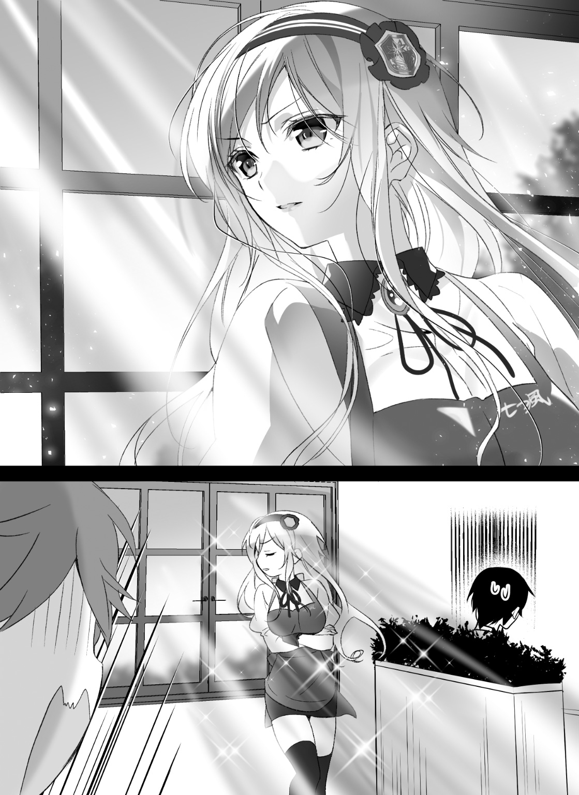
ああっ、見てる！ お客さんがめっちゃ見てる！
「......あの」
もうダメだ！ お客さんが瑠句に話しかけてしまった！
いや、まだ諦めるのは早い。学校と違ってバイトとしての瑠句のキャラ印象は真っ白！ いつもほどエキセントリックなキャラを演じる必要はない！ 最初の一歩で躓かなければ、むしろこれから先のバイト中のキャラを安定させることができるかもしれない！
「ウェイトレスさん、ですよね......？」
「......今は、ね」
もう躓いたよクソったれ！
つーか何が「今は」だよ！ 勤務時間中は常にウェイトレスだろお前！ しかも視線を意味なく窓の外に向け始めた！
「ま、窓の外に何かあるんですか......？」
「......雲を」
「は？」
「雲をね。眺めているのよ」
「......はあ」
「坂の上の雲......昇っていけばいつか届く、そう信じて見つめた理想を、司馬遼太郎は雲で比喩していたらしいわ。貴方には分からないでしょうけど――」
「あーっ、すみませんお客様！ お客様すみませんお客様！」
「んぎゅぎゅぎゅ！」
これ以上の大事故が起きる前に、俺はお客様に平謝りしてから瑠句をひっつかんでバックヤードに下がった。
あかん。お客様、完全に都市伝説を見た顔になってらっしゃる。
「な、何するんですか望くん！ お客様の前で大胆な！」
「こっちのセリフだ喫茶店の破壊者め」
「そんな大仰な!?」
「お前はなんで客の目の前で〝なんかクールなポジションのキャラ"やってんの？ ボケなの？ オーダーのホットとクールを人格的なものだと勘違いしちゃったの？」
「そ、その、違うんですよ。そう......私の中の喫茶店のイメージが暴走しちゃっただけなんですよ！」
「お前の中にはどんな宇宙が広がっているんだ」
「ああいうクールで達観した雰囲気を出しておかないとですね、人生に疲れた妙齢の男性とかワケありの逃亡カップルとかが来たときに対応できないじゃないですか」
「一般的にこういう喫茶店にはその手の客は来ないからね」
「来ませんでしたね」
「フィクションでもせいぜい酒場の役割だからね、それ」
「そ、それに、接客というのは自分の個性を活かすことでお客さんの心を摑むんだそうで......」
「個性というのはああいうのじゃないしお前の本来の個性はそっち方面ではないし心も摑めてないからね。誰だそんな与太話吹き込んだの」
「マスターさん......」
「あんっのチョビヒゲ」
瑠句にはカウンター内の掃除や食器洗いに回るよう言いつけて、瑠句の代わりにマスターこと叔父さんをバックヤードに引きずり込む。
「獅子身中の虫とはこのことだ」
「ど、どうしたんだい少年！ おじさんコーヒーのことしか考えてないから四文字熟語とか使われちゃうと理解が追いつかないよ！」
「どういう指示しとんですかアンタ」
「いやぁ、おじさんはただ、ちょっと可愛いパツキンおっぱいの店員が入ったから窓から見える位置に立ってもらって客寄せパンダに」
「アンタいつも俺の想像の五段階は上をいくことを言う......」
「だって、あんな目立つウェイトレスいたらぜったい興味引くじゃない」
ぐぬぬ......と唸りつつ、確かに瑠句のビジュアルは客うけが良さそうだ、と思う。経営者としては、そう使うのも無理はないだろう。
とりあえず、お客さんの注文があったので叔父さんを解放。
瑠句は裏方に回したほうがいいような気もするが、そもそもコミュ力の修業としてのアルバイトだ。接客しないでは意味がない。
しかし一人でおいたらさっきのような真似をする。
しかも、店が混んできたら野々村さんは調理に回るという。ホールは俺と瑠句だけになってしまうわけだ。
俺も初バイトという境遇でありながら、演技状態で接客する瑠句という、スーパーサイヤ人に界王拳重ねがけ状態のような最強モードの瑠句を一人でサポートしなければならない......。やっべ、ことの重大さを実感してきた。
「......あかん、胃重くなってきた。吐き出そ」
スマホでツイッターを開き「んー」とか「つら......」などという、意味はないが不穏さだけは伝わるようなツイートを行う。
これは、特に具体的内容を話さなくても「俺はとてもタイヘンな状況です」ということだけをフォロワーに伝える便利な愚痴ツイートだ。
ソシャゲのギルドメンバーだけをフォローしているアカウントなので気兼ねもなく吐き捨てに利用している。しかも波長の合うネガティブなフォロワーしかいないため、俺のツイッターは常に「うう......」とか「もうダメだ......」といった野戦病棟みたいなツイートで溢れかえっている。
「あ、佐々井くんここにいたんだ」
「おぉおおおおおっほ」
背後の扉が開き、野々村さんが入ってきて俺はまたゴリラ並みに慌てた声を出した。俺、とっさにゴリラになるクセでもあるのだろうか。
「ん、なにそれＬＩＮＥ？ じゃなくてツイッター？」
「あっ、あっあっ！」
角度的に見えたと知れて、俺はとっさにスマホを隠した。
「あー、ごめんごめん画面覗くのは良くないね」
「い、いや、こっちこそ業務中にほんと悪かった！ 別に店の悪口とか特定される情報呟いてるわけじゃないんで......」
「あははー、さすがにそんな心配してないよ。佐々井くんは信用してバイトをお願いしたわけだしね。それに暇なときにちょーっとタイムライン確認するくらい、叔父さんもうるさく言わないからさ」
「そ............そう。それなら良かったよ」
なんだか勝手に良心的な方向に運んでもらってホッとした。
完全に知らない人だらけのバイト先なら、こうはいかなかっただろう。
やはり野々村さんのツテを頼っての初バイトは正解だったのだ。これなら瑠句のことはともかく、俺も安心して社会勉強の経験値が稼げそうだ。
「それにさー、ツイッターってフォロワーがリア友に限らないからさー、日中とかでも平気で話題流れたりするんだよね。合間にちょっと覗いちゃうのも無理ないっていうか」
「だねぇ。廃人も多いし」
「廃人？」
「あっ、いや、ツイッター中毒的な？」
「あー、なるほどね。めっちゃ張りついてる人いるもんねー。アタシもつい授業中とかに覗いちゃったりするけど」
「ははっ、分かるー」
「不意に、おはよー、とか呟いちゃうとどうでもいい返事が一気に五、六個飛んできて授業中だと反応し切れなかったりさー。おはあり！ とか返すの時間空いちゃうと悪いじゃん？」
「......分かるー」
全然分かんない。
同じツールでもリア充とリア充もどきは分かれるもんだなぁ、と悲しい実感があった。
■
状況が変わったのは、午後になってからのことだった。
お昼ご飯はいわゆる「まかない」が出るのかなー、と思ってたら自腹でハンバーガーだったため、絶妙にテンションが下がっていたところ。
「......あっ、い、いらっしゃいませぇ」
急に、高校生らしき三人組の男子が来店し、俺は少々慌ててしまった。
うちの高校の生徒ではない。
「三人お願いします」
「は、はい。好きなお席へどうぞー」
パーマ気味の男子を先頭に、ベリーショートの快活な男子と、ツーブロックの眼鏡の男子。
みな、うちの生徒に比べると上品というか、正直、頭の良さそうな感じ。それでいて野暮ったくなく、清潔感がある。言葉につまりながら席に案内してしまったが、そんな俺の様子に笑うことも、怒ることもない。
メニューを差し出し、一度下がると、野々村さんが耳打ちしてきた。
「サイコーの子たちだね、たぶん」
「さいこー......って、才明高校？ あの、進学校の」
「そうそう。あの頭いいとこ」
才明は我らが深空高校と同じ町にあり、ここに住む中学生は、だいたい学力でこの二つの高校に分かれていく。
この土地の名前が深空町であって、その名を冠しているのは深空高校だというのに、〝進学のサイコー、エンジョイのミソコー〟と、面白くない響きの略称で分けられている。
そうか、あれがサイコー。
夏休みに至るまで過ごせば、割と自分の学校に帰属意識ってやつが湧くもので、なんとなく〝よその学校〟という見方が強くなる。
俺もすっかりミソコーの生徒ってことなんだなぁ......。
「すみません、注文いいですか？」
「............構わないわ」
って、油断した！ よりによってすぐ傍でたそがれていた瑠句が声をかけられてしまった......っていうかバイト中にたそがれてんじゃないよ！ 常にスタイリッシュに窓の向こうを眺めているキャラづけは喫茶店にはおかしいよ！
瑠句は「やれやれ、出番か」とばかり、もたれていた壁から体を離し、無駄に金髪をふぁさぁっ、となびかせてから注文を取りに行ってしまった。
接客態度としては完全にアウト......っていうか紛いなりにも飲食店の従業員がとっていい行動じゃねえよ！
ところが、そんな瑠句の静かな奇行にも構わずに、サイコーの優等生三人組はメニューを広げている。
「アイスコーヒーとアイスティー、それにジンジャーエールでお願いします」
ハキハキとしていて、それでいて簡潔にテンポよいオーダーだ。
注文を受ける側としてはそれだけで助かる。客としては満点すぎる。
「......そう。涼を求めているのね」
「えっ、そ、そうですけど......外暑いし」
「......マスター。彼らに冷たいものを」
一方の瑠句は店員として零点だろアレ！
冷たいものを、じゃねえよ！ 具体的なメニューをオーダーしてるだろうが！
「ふっ......あいよ」
叔父さんもなんでテンション合わせてんだよ！ ニヒルに笑ってんじゃないよ！ もうこの時点で二度と来てくれないだろあの客！
叔父さんはサイフォンからアイスコーヒーを、冷蔵庫の麦茶ポットからアイスティーを、そして見えないところでペットボトルからジンジャーエールを注いでいく。
コーヒー飲まないやつは絶対コンビニ行ったほうがいいと思う。
「野々村さん、品物運んでいくのは瑠句に任せないほうが......」
「んー、そう？ でもオーダーとるだけのバイトってわけにもいかないしねー、せっかくだから体験してもらったほうが」
「さっきの対応見てただろ......！ あいつにあのまま接客やらしたら大怪我するって！」
「ははー、まあこういうのは慣れだからさ。最初はギクシャクするかもしれないけど、こういうのはやってみて覚えていくもんじゃない？ たぶん」
くそっ、野々村さんの大らかさが悪いほうに出るときのやつだ！ こうなったらやはり俺がフォローに回るしかない！
「マスター」
「業務中はおじさんと呼びたまえ」
「逆だろ！ じゃないや、注文されたものは俺が持っていきますよ」
「ほう、やる気マンマンマンゴスチンだね。ではお願いしようかな」
三人分の飲み物をトレーに載せて、俺は足元に気をつけながら席へ向かう。
なるべく背筋をぴしっと伸ばし、笑顔を作る。
営業スマイルは初めてだけど、笑顔を作るのには慣れている。
「お待たせしみゃした」
嚙んだ。
「ジンジャ、エールのお客様......どうぞ。アイしゅティーのお客様......アイスコっコーヒーのお客様......はい、え、はい。注文は以上でしょうか............。えっと、では、その、ごゆっくりどうぞ......」
なんとか対応を終えると、俺はトレーを持ったままバックヤードに下がった。顔面が石焼き芋みたいに火照っている。
「......どんまいだよ少年」
「控えめに言って死にたい」
「それ割と聞くフレーズだけど、命かけてるのは控えめでもなんでもないからね。うん、いや、おじさん知ってるけど、そういうの萌えって言うんでしょ」
「違います」
結局、瑠句も俺も散々なバイトデビューとなった。
ただでさえ繁盛しなさそうな店なのに、これではやっと訪れてくれた客もリピーターにはなるまい。バイトさせてもらっている身でそれは、あまりにも情けない。
というか、これピンチヒッターどころか、俺と瑠句で店を潰してしまうのではないだろうか。戦力にならないならまだしも、評判を悪くした、では野々村さんにすら合わせる顔がないじゃないか。
午前中に感じていた楽観は、今やまるごと不安に転化されていた。
これから少なくとも二週間ほど、俺たちははたしてやっていけるのだろうか......。
そんな不安を胸に、バイト初日は散々な気分で終えた俺。
しかし、今日の一件が思わぬ方向へ転がっていくことを、俺はその時点ではまったく予想していなかった。
■
――二日め。
「うぇーい、四人ね」
「............いらっしゃいませ」
野々村さんのバイト先となれば、誰かに情報が漏れるのは時間の問題だ。
絶対にそれは避けられない状況だったのだが、案の定うちの生徒がやってきた。
しかも須藤だ。
大谷や中村ら、チャラいメンバーを連れての来店だ。
「佐々井、マジでバイトしてたんだなー。割と似合ってんね」
「そりゃどうも......これメニューな」
「えー、もっとそこは店員っぽく対応してくれよー。オレらそういうの見に来たんじゃねーんだけど。もっと感動を求めてきたわけなんだけど」
「いいからぱぱっと頼めよ。他の客もいるんだから」
そう。なぜか、今日は昨日より明らかに客の入りが多かった。
昨日が少なすぎたのかもしれないが、叔父さんから見てもやはり混んでいる部類に入るらしい。野々村さんも今日はあくせくと対応に回っている。
「繁盛してんだなぁ」
「まあね」
「見た感じ、高校生っぽいけどウチの生徒じゃねーよな。もしかしてサイコーの生徒が多いのか？」
「らしいね。まあ、サイコーは駅から近いからな」
「なーんで町の名前ついたウチの高校が町の外れで、後からできたサイコーが駅前なんだろうな。おかしくね？」
「俺に言われても困るよ......じゃあ、注文決まったら呼べよな」
「あ、佐々井つめてぇ」
須藤たちを放って席を離れ、店内を見渡す。
野々村さんはさすが、要領よく働いていた。
注文を取る際の笑顔もわざとらしくなく、営業スマイル感がない。もしかすると、野々村さん目当てで客が増えているのかもしれない。
一方、瑠句はどうしているだろうか。
目立つ金髪を目印にして、その姿を探すと、隅のほうの席の客に呼ばれていた。四人組だ。
「すみません、注文いいですか？」
「......答えは出た？」
早速ダメそうだ！
そんな世界の命運を左右する選択みたいな注文の取り方があるか！ ぜってーお客様ドン引き案件だろこれ！
「えーっと、アイスティー二つ。それとメロンフロートとホットコーヒー」
「......そう」
なんで店員が興味なさげなんだよ。
そんな瑠句の態度に、意外にも客である少年たちは不快感を示した様子がない。よくよく見ると、彼らもサイコーの生徒のようだ。
「藤原くん、夏なのにホット頼むんだね」
席に座っている一人が口を開く。
藤原と呼ばれた男子は、にこやかに笑って、注文の理由を説明する。
「ああ。こういう時期に冷たいものばかりとると夏バテしやすいからね。店の中はけっこう涼しいし」
「へえ。藤原くんがこの時期でもコンディションを落とさないのは、そういう心掛けがあるからなのかな」
「藤原くんは、うちのテニス部のエースだもの。私生活からして、エースなのさ」
口調とか、態度がとても柔らかい。
おまけに友人をくんづけで呼んだ。深空高校ではあまり見ない文化だ。サイコーの生徒が作る空気は、キラキラしたリア充感全開の空間とも違い、さわやかな風が吹くようだ。
「......季節の運んでくる流れに逆らわないのは、賢い選択だわ」
そんな空気を吹き飛ばす寒冷前線が瑠句だ。
ふっ、とか鼻で笑っているが、なぜあいつが上から目線なのだろうか。神なのだろうか。
「店員さんも分かりますか」
藤原なる男子が、さも嬉しそうに話しかけた。全く不快そうにしている気配がない。
本当にいいお客さんでよかった。おそらく神は瑠句でなくこっちだ。お客様は神様とはこのことだ。
「..................フゥ――――......」
が、なぜか瑠句は長い溜息を吐いた。
「......よしたほうがいいわね」
「えっ？」
「単純な共感をひっかかりにして、誰かに簡単に心を開くのは......」
「......はぁ」
「人の心は、グラスの氷ほどは簡単に溶けないわ」
瑠句は片目を閉じ、唇に人差し指を当てた。
「......よく、考えることね」
「お前がよく考えろ」
「んぎゅぎゅぎゅぎゅぎゅ」
後ろで藤原くんと愉快な仲間たちが驚いていたが、俺は瑠句の首根っこをひっ捕まえてバックヤードに下がった。
人生で二番目の壁ドンはこの時になった。
逃がすまいと、瑠句を壁に追いやり、両手と膝の三点で逃げ場を封じた。
「瑠句さん、何やってんのでございますか？」
「えっ......せ、接客......？」
「違うよ全然違うよ！ なんで深イイ話っぽい感じなの!? お前がするべきことは注文を取ることであって中身のない人生観を語ることではないんだよ！」
「だ、だって、話しかけられたからちゃんとお話ししないといけないかなって......！」
「ちゃんとはできてねえよ！ セクシーな仕草までつけやがって！」
「セ、セクシーにできていたでしょうか......えへへ」
「褒めてないんだけどぉ！」
「ちょっと佐々井くん、瑠句ちゃん？ 忙しいんだから注文取って――」
がちゃっ、というノブの回る音とともに野々村さんが入ってきた。
一瞬、目をぱちりと瞬かせて、俺と瑠句をまとめて視線で上下になぞる。
「......佐々井くん」
「えっ、はい」
「そういうのは家でやって？」
言われて、壁ドン状態だったことを思い出した。
真っ赤になった瑠句はその日、ほぼ使い物にならなかった。
■
――五日め。
「............お疲れ様っしたぁ」
「はーい、お疲れ様ぁ」
バイト終わり。
俺も瑠句も、野々村さんさえもクタクタだった。
初日、二日とじわじわと増えていた客足は、今日まで増え続けていた。
「繁盛するのはいいけど、さすがに疲れるよねー」
「麻紀を疲れさせるほどとは............大したものね」
「大したものって言いたいだけだろ」
いつの間にか瑠句ときたら、野々村さんを呼び捨てにするようになっていた。まあ、野々村さんと五日も同じ環境にいれば距離を詰められるに決まっている。この人は友達を作る天才なのだから。
「ま、叔父さんも儲かってるぶんバイト代に色つけるって言ってたからさ」
「え、いいの？ 忙しくなってる割に俺も瑠句もぜんぜん力になれてないけど」
「いいのいいの。叔父さんがいいって言うんだからいーの。その代わりこれからもガシガシ働いてもらうとも言ってたからさ」
「それはそれで不安だけども......」
とはいえ、バイト代が上がるというのはやっぱり嬉しい。
正直、人格的にどうかと思う点しかない叔父さんに対しても義理とか感じてしまうのだから、人間って現金なものだ。
「んじゃ、佐々井くんと瑠句ちゃんはまた明日ね」
「あれ、野々村さんは？」
「今日はちょっとね。叔父さんが張り切って新メニュー作るって言うから、お手伝い」
「そっか............大変だね」
心の底から気の毒に思った。
店の奥へ消えていく野々村さんの背中から、なんとなく哀愁が漂う。想像通り、ロクなメニュー開発にはならないのだろう。叔父さんの扱いが雑になるのも頷ける。
「んじゃ、瑠句と俺で帰るか」
「......あ、えっと」
「どうした？」
「お手洗いに寄っていこうかと......もうずっと我慢してて......」
「今日はずいぶんと壁に寄りかかっている時間が長いと思ったら......」
「望くんは先に帰ってて構いませんよ？ 一緒に帰ると目立っちゃいますし」
「いや、いいよ。二人になるの久々だし待ってる」
「......」
「どした？」
「うぇひひっ」
「うぇひひ!?」
「い、いえ何でもないです。ちょっと心から溢れた感情のアレが詠唱になって漏れ出しただけで」
「詠唱」
「ほら、私あれですから。魔法職系ですから」
「それネトゲの話でしょ......？ あるの？ 魔法使いのスキルに大魔法ウェヒヒみたいなやつがあるの？」
「アークプリーストがレベル20で覚えるやつですね」
「あるんだ......」
「順当にスキルポイントを振り続けるとハイウェヒヒ、ギガウェヒヒ、ファイナルウェヒヒになります」
「上につく言葉に統一性なさすぎてがっちゃがちゃだなそれ！ 据わり悪いわ！」
「まあ、そもそも基準になるウェヒヒっていう名前からして、どんな魔法か想像しづらいですしね」
「そうだよ、なに魔法なんだよ」
「いちおう設定上は極大消滅呪文ということになってますが」
「じゃあ俺死んでるじゃん!!」
「と、ともかく、現実を消し去ってしまうレベルで心が叫んでいたってことなのです！」
「悲しい過去を背負った魔王かよ」
「じゃあ私そろそろ限界なのでトイレ行ってきますからね！」
「う、うん。なんかトイレのことお手洗いって言えなくなるくらい追いつめたっぽくてごめんな」
少々瑠句の様子がおかしかった気がする。
それほど腹具合が深刻なのだろうか。
生まれたばかりの仔鹿のような動きでトイレへ向かう瑠句を見て、なんとも言えない悲しみがこみ上げてくる。歩く姿すら目を背けなければいけない気がして、俺は先に外に出ていることにした。
日が傾いてはいるが、日中の暑さはしっかり残っている。
炙られたアスファルトから立ち昇る熱気がキツく、俺は少しでも日影に入るよう、場所をずらしていく。
ふと、近くの書店の様子が目に入った。
サイコーの生徒たちだ。
それも、見覚えがある。ここ数日、七ツ風で見ている顔ぶれだ。
コーヒーも微妙なら料理も微妙なあの店のリピーターになるのだから、進学校の連中の考えることは分からん......と思っていた。
しかし、聞こえてきた会話が、俺の意識を鷲摑みにした。
「......今日も可愛かったよねえ、金髪さん」
..................金髪さん？
はて、漫画の話でもしているのだろうか。
なんて考える自分自身から「白々しい」とツッコミが響く。
金髪という特徴で、最も身近に連想できる人物がいるというのに。
「今日は一段とクールだったな。口数が少ないところもミステリアスでいい」
「何があったのかなぁ......浮かない顔だったけど、あの涼しげな目を伏せてる姿は綺麗すぎてゾクゾクしたね」
「手ずからコーヒーを受け取れなかったのは残念だったけどねえ」
......間違いない。瑠句だ。瑠句の話をしている。
とは思うのだが、なんだろう。俺の知っている瑠句の話として、納得はできるのに、しっくりこない。
来々木瑠句についてどう思いますか？
そんな質問をしたとき、クラスメイトであれば、その容姿に関しては一定の評価を与えど、振る舞いに好意的な感想を聞いた覚えはない。
「なんとかして声かけられないかなぁ......」
「常連になれば、少しは顔も覚えられると思うんだけど」
「競争率高いからなぁ......すっかりウチの生徒集まっちゃってさ。ま、あんな美人そうそうお目にかかれる相手じゃないし、無理もないか」
ようやく気づいた。
いや、よくよく考えてみると、もっと早く気づくべきだった。
自分の間抜けさに腹が立ってくるくらいだった。
じわじわと増え続けた客は、サイコーの生徒が多い。
そのほとんどが、男子の客だった。
特にリピーターともなると一〇〇パーセントと言っていい。男子は男子でつるむもの、と考えていた。どの客も〝サイコーの生徒〟という括りでしか見ていなかった。
つまりは、こうだ。
じわじわと増え続けていった来客数。
それらは瑠句に対する先入観のない男子が、瑠句目当てに通い詰めていた。
......理解したところで、さっぱり現実感がない。瑠句は俺にとってそういうことが起こり得るポジションではない。
いや、それ以上に、それを理解しようとすると頭が痛くなった。
「あの目がいいよねぇ。ほんと、吸い込まれるっていうか」
「スタイルも整ってて、まるで海外のモデルみたいだし。指先なんかも綺麗でね」
「金髪が似合うってのがすごいよなぁ。ウチの学校じゃ、ああいう派手めな美人っていないから」
なぜだか、認めてはいけない気がした。強い危機感があった。
その綺麗な目を。
均整の取れたスタイルを。
朝日のような髪の毛を......語られたくはなかった。土足で踏み込まれる気がした。
「望くん？」
「おおうっ」
瑠句に背後から声をかけられ、俺は飛び上がる。ショックで意識が現実に戻る。
「お待たせしました。何か見てらしたんですか？」
「い......いや、なんにも。一切見てないよ？」
「そうですか？ じゃあ、帰りましょうか」
「あ、ああ。待った。こっちの道から行こうぜ」
「へ？ だっておうちに帰るのだったら逆方向ですけど」
「いや、あっちの方、なんかヘドロみたいな匂いすっからさ」
「どんな事態が起きてるんですか!?」
「たぶん偶然にも化学事故でバイオハザードとか起きるから」
「未来の話なんですか!?」
「予感がするから。だから避けていこうぜ」
「予感が具体的すぎません!? それもはや予知ですよ!?」
「いいから早いとこ行こう！ なっ！」
書店にいる連中が振り向く前に、俺はさっさと瑠句の背を押して歩きだした。
なるべく人目につかぬよう、車道側から瑠句を隠して進む。男が車道側になる歩きかたは、何かの本で読んだ気がするが、こういう時のためだったのかもしれない。
......はっ。
「の、望くん。ホントどうしたんですか？ そんなキョロキョロして」
「いや、ちょっとな......」
なんてことだ......この道、やたらとサイコーの生徒が多い気がする。
いや、この道に限らず、この辺り一帯がサイコー生のテリトリーなのだろう。連中は制服を着ていなくても、なんとなく振る舞いの上品さで察知できる。
右も左も、そんな感じ。
俺は瑠句を隠しながら、なるべく人の目がない道を進んでいく。
「望くん。その......私と帰るの恥ずかしいなら、無理しなくても」
「いや、そういうんじゃない」
「だってそんな、軍の機密プログラムが搭載されたマイクロチップを隠してる人みたいな動き方して......」
「具体的だなオイ」
「私、その、バイト中もいろいろ望くん困らせちゃってたみたいですし。ほんと、気を遣わなくったっていいんですよ？ やっぱり別々に帰った方が......」
「だから違うってば。俺はそんなにお前を恥ずかしいやつ扱いする人間か？」
「............だって」
「............」
不満げな瑠句に、困る。
いや、俺からしてみれば単に、瑠句が恥をかかないようにしたくて助けているつもりなんだが......そもそも恥をかいている、という認識じゃないと出てこない発想か。
もしかして登校の時なんかも瑠句が気を遣うのは、結局、俺のせいなんだろうか。
......いや。それを悪いとは言わない。
瑠句のためを思ってのことだ。あくまで、俺が指針にならねばならない。恥をかかせたくないとは思っても、瑠句のことを恥ずかしいと思っているつもりは、ない。
「いいから、行くぞ」
「わわっ......!?」
まだ申し訳なさそうにしていた瑠句の腕を摑み、強引に早足で進みだす。
時折、振り返る人の視線を感じるが、それを振り切るように進んだ。瑠句をついてこさせるよう、とにかく先を急ぐ。
俺は道を先に行き、瑠句はそれについてくる。
それがいつも通りだ。そうじゃなければ、落ち着かない。
うつむいている瑠句だって、すぐにまた前を向くに決まっている。
■
――十二日め。
ソータイセーリロンとか、響きは覚えているが内容は覚えていない話があった。
確か時間の流れは、割と遅くなったり速くなったりする、みたいな感じだったと思う。まあ内容の正しさはともかく、割と事実のような気がしてきている。
そのくらい、最近は一日の流れるペースが速かった。
学校で授業を受けている間、一時間がとても長かった。
バイト中のランチタイム前は、同じ一時間なのに、涙が出るほど短く感じる。
とにかく、客足は安定して増えていた。
せわしなく、注文を取り、料理を運んだ。
客の様子に気を配り、瑠句の働きに気を揉んだ。
そんなことを数えきれないほど続けて、太陽がすっかり斜めに見えるころ、やっと俺たちはバイトを上がって帰路につく。
隣を歩くのは、野々村さんになっていた。
「あー、疲れたねー佐々井くん」
「マジでね」
「しんどみ溢れるわー。もうアタシダメだわー疲れすぎてほんとダメ。ダメみ」
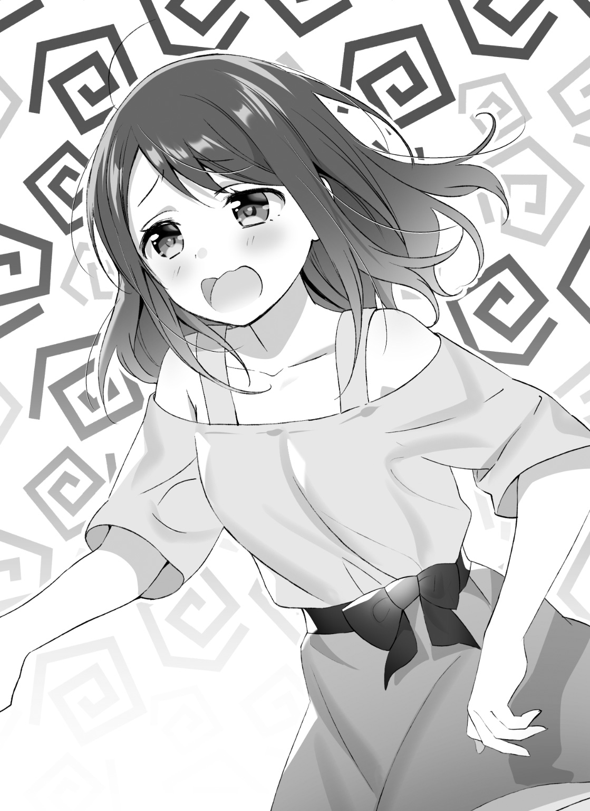
「ダメみって使い方は初めて聞いたよ俺」
「オリジナルだからね。アタシなりに特許出願中だからヨロ」
どこにそれを届け出るんだろう。
「いや、でもガチでね。ガチでダメだから。今アタシ特許とるくらいダメだから」
「表現が斬新すぎてよく分かんないよ......」
「常温で置いといて一日忘れてた鯖くらいダメ」
「そんなに!?」
「いや、今の表現がダメだわ。アタシ、あんま頭良くないから気の利いた喩えが出てこないんだよねー。もっとこう、アタシの今のダメレベルを的確に表したいっていうか」
「別にそんなとこ追求しなくても......」
「表現でしょ佐々井くん。生きるってことは、表現でしょ」
「アートなこと言いだした」
「マジダメ、超ダメ、激ダメ、神ダメ......ゲロダメ？ いやゲロは今使っちゃだめだよねー、なんかダメさが汚い方向に行くっていうかぁ、乙女くないじゃん？」
「え、なに。ゲロのほうが表現的に神より上なの？」
「そりゃそうじゃん。最上級じゃん。っていうか神は割と弱いし」
「弱いんだ!? ドラゴンボールみたいな世界で生きてんね!?」
「アタシの中で強さランク八位くらいだからね」
「一位がゲロで八位が神のランキングて。七位くらいが気になる」
「七位はマツコ」
「マツコ!?」
「強そうじゃん。デラックス感あるし」
「そりゃあるけどさ......」
「でもマツコダメって使い方だと、なんかマツコ個人を罵倒してるみたいじゃん。訴えるべきところに出たら負けそうじゃん」
「それ気にするならデラックスのほう使えばいいのに......まあでも、野々村さんがそんだけ疲れてるってなると、本当にハードだったんだなぁ、ここ最近」
「だって叔父さんのカフェがこんなに繁盛したことないもん。ヤバいヤバい。ヤバすぎて逆にバイヤーだわホント」
「逆に、って逆さから読むって意味じゃなくない？」
「ぶぶー、逆さからは読んでないもんね。バイヤー逆から読んでもヤバいにはならなくてヤイバになっちゃうから。ヤイバ。ヤバくない？」
「ヤバい」
「キレてない？」
「めっちゃキレそう」
自分で口にしていて死ぬほど頭悪いな、と思うが、この野々村さんのノリに合わせた頭空っぽトークは、慣れてしまえばかなり省エネで会話できる。
リア充は人と会話する機会が多いから、こうやって脳みそのエネルギーを温存しているに違いない。と、妙な感心がある。
とはいえ、これが複数人での会話になるとまた難易度が上がるわけで、今は野々村さんと二人だから楽に感じているのだろう。
二人。
そう、瑠句がいないのだ。
今日だけじゃない。バイトの帰り道は、野々村さんと二人きりになることが多くなった。
というのも、瑠句がまた気をまわすようになったためだ。
バイト上がり直後は瑠句を交えて、適当にスタバにでも寄り「やっぱ喫茶店ってこうじゃないとねー」などと冗談をたたいていく習慣ができていた。その後は瑠句が道を外れて、わざわざ遠回りして帰っていく。
「瑠句ちゃん、いつも帰り一人で大丈夫かなー」
「そんなに遅い時間になってるわけじゃないし、平気だと思うけど」
「家遠いらしいじゃん？」
「帰るまでに日が落ちきる、ってほどじゃないと思うよ。うちの高校に通えるような位置ではあるんだし、あんまり遠けりゃ電車かバス使うじゃん」
「ま、確かにそっか。どの辺りに住んでるんだろ。教えてくんないんだよねー」
よもや、俺んちの向かいですとは言えない。
要は、登校の時と同じだ。
仲良く見えすぎないようにするための瑠句なりの配慮。バイト先が同じなら帰りが同じの方が自然に思えるのだけど......本当に、律儀だ。
瑠句の手を引いて歩いたことが、原因だとは思わない。
まあ、こうして野々村さんと帰るのも、最初はどぎまぎしていたものの、野々村さんのコミュ力のおかげで慣れてきた。
この感じ、学級委員で二人きりになった時のことを思い出す。
野々村さんは話をするのも聞くのも上手く、高校デビュー直後は随分と助けられたものだ。須藤と野々村さんがいなければ......まあ初期の瑠句ほどではないにしても、俺も高校デビューに失敗していたかもしれない。
道を行く二人分の影が、少しずつ長くなる。
「にしても、アタシもちょくちょく手伝いはしてたけどさ。やっぱ二週間とはいえ、がっつりバイトするといろいろ違ってくるわー」
「いろいろ？」
「心構えとかみたいな？」
「あー、確かにね。やっぱこういう経験って大事なんだな」
「なんかアタシ、小学校から中学、高校ときて、なんとなく大学行って......とか考えてたけど、その先の社会に出てからのこととか、イメージふわふわしてたからさ。そういうふわふわしてたものが、ちょっとカチっとしてきた、っていうか」
「ああ、分かる」
「ほんとにぃ？」
「本当だよ。なんで疑うかなぁ」
「だってアタシ、今めっちゃあやふやな単語しか使ってなかったけど」
「いやいや、分かるってば。俺だって同じだもん、言いたいことは伝わるって」
「ならいいんだけどさー」
「やっぱ、知識だけで〝働く〟ってこと知っててもさ、やってみなきゃ分かんないことあるって。いい勉強になったよ」
建前くさい発言だが、本心だ。
学生の世界って狭いから、人と違った経験をするのは難しい。部活に入り損ねた俺は――まあ、そもそも部活をやる気もなかったのだが――スポーツや芸術に青春をかける連中に比べ、経験という点で劣っていた。
そんな俺に、バイトは自信をくれた。
たとえ野々村さんのコネであっても、だ。心を込めて言葉にはできないが、感謝しているのに噓はない。
「とはいえ、叔父さんってば最初は楽な仕事だからって、ゆるーく言ってたのにさ。いざ繁盛してきたら、結構ガチでこき使ってんじゃない？ 佐々井くん、大変でしょ」
「や、そりゃ忙しいけど......叔父さん親しみやすいしさ。あんな好条件のバイト先、他にないと思うよ」
「好条件かな？」
「たぶん」
「たぶんかーい」
ぺふっ、と、優しすぎる掌が背中に当たる。
たぶんツッコミのつもりなのだろう。須藤ならバシッと叩いてくるところだ。
何げないことではあるが、女子だなぁ、と思う。
「や、でも本気だよ。他のバイトがどうなのか分からないけど......バイト代上げてもらったし、私語とか怒られないし、休憩の時にコーヒー淹れてくれるしさ」
「叔父さんは三度のゴハンよりコーヒー好きだからねー」
「俺、コーヒー飲んでも目冴えなくなったもん」
「あはは、叔父さん飲ませすぎー。佐々井くん、気に入られたからなぁ」
「気の合う上司ってのは最高だなぁ」
「出た、社会人っぽいセリフ」
ケラケラと笑い合う。
その笑顔は、たぶん学校にいる時よりも自然に出ている。同じ時間、同じバイト。そんなものを共有し合って、野々村さんとも仲良くなれたと、確かな実感がある。
だから、続けた言葉は失言だった気がする。
「それに、瑠句――」
「瑠句ちゃん？」
しまった、と思った。
せっかく瑠句に関する話題は終わっていたのに、その場にいない、けれど自分にとって気軽に接することのできる人間をついつい話題にしてしまう。
これは俺のような人間の、本当に悪いクセだ。
いつもは須藤を対象にしがちで、今は瑠句だった。とにかく、慌てて呼び方を取りつくろわなきゃならなかった。
「......野々村さんがそう呼ぶからつられちゃったよ。来々木さんね」
「バイト中でも呼び捨てにしてたし、べつにいいと思うけどなぁ。で、瑠句ちゃんがどうかしたの？」
「いや、来々来さんにもいいバイト先だったと思うよ」
「あ、そう思う？」
「思うよ。なんせ、来々木さんは悪い子じゃないんだけど、ああいう感じだからね。他のバイト先じゃすぐクビになってもおかしくなかったろうし」
実際、序盤の瑠句はひどいもんだった。
キャラづくりはいつも以上に不自然だったし。
「んー......そういう考え方はしなかったなぁ、アタシ」
「へ？」
だから、野々村さんが首をかしげたことに、とっさに反応できなかった。
「だってさー。瑠句ちゃん、大変だったのは確かだけど......佐々井くんが言うほど駄目ではなかったと思うよ？」
「......え、ええ？」
まず、言葉がつまった。次いで、混乱しないよう、頭の中が切り替わる。
ああ、野々村さんの悪い癖が出た、と。
人のいいところを見つけることは得意だが、悪いところを見つけるのが苦手だ。俺に瑠句のことを押しつけた時と同じ、楽観的すぎる野々村さんだ、と。そう考えた。
「佐々井くん、気づいてた？」
「何を？」
「瑠句ちゃん、オーダーミス一回もしてないんだよね」
「............」
俺は二回やった。
「それに、お客さんのこと、よく覚えてる。振る舞いこそちょっと個性的だけど」
「ちょっと？」
「割と個性的だけど」
そこに関しての認識はズレてなかった。
「まあとにかく、注意力と記憶力がいいよ。それに、実家が中華料理屋さんなだけあって洗い物も手際いいし、掃除もきちんとする。叔父さん、すごく助かってると思うよ」
「......言われて、みれば」
野々村さんのあげた瑠句の人物評は、反論する余地がない。
確かに、俺は終始その振る舞いや言葉遣いに気を揉むことはあっても、仕事そのものの面では一つも心配させられなかった。
次第に客足が増えても、だ。
その突飛なキャラづけは考えもの......というか、一つとて擁護できるものではないが、オーダーを率先して取りに行ったり、気が付いたらテーブルを拭いたりはしていた。
むしろ、仕事面では俺の方がいっぱいいっぱいだったんじゃないだろうか。
「そもそも、瑠句ちゃんってスペック高くない？」
「そう、かぁ......？」
自分の声が弱々しいことを自覚する。
野々村さんの声は変わらない。
瑠句の声は「透き通る」が、野々村さんの声はいつも「響き渡る」ようだ。
「そうだよ。テストとかの点数もいいし、料理もできるし」
「......まあ」
「運動部じゃないけど動くのが苦手ってわけでもないしょ。歌だって上手だし」
「......そういえば、そうかも」
俺は頷き、記憶をたどった。
人間関係での悩みや、リア充っぽい雰囲気に触れる難しさについては相談されたが、学生ならではの勉強面に関しての相談はいっさいされていない。
俺は体育の授業が嫌いだ。
スポーツなんてほとんどしたこともない俺は、運動神経以前に、チームワークに慣れていない。球技なんかやらされるのは割と苦痛。
反面、瑠句からはそういう話を聞いたことがない。
コミュニケーションが苦手な瑠句は、それでもチームの中では〝こうすればいい〟というやり方をちゃんと分かっている。
「瑠句ちゃん、ちょっと焦っちゃうことは多いけど......一人で何かしてる時って、大抵のことに困ってない気がするよ？ 記憶力はいいし、手先も器用だしぃ......ゲームとかも上手だよね。言いたがらないけど」
「......」
頷くしかなかった。
俺は、いつも瑠句に対して「こうしろ」と言う。
間違った振る舞いを正してやろうとする。けれど人との会話以外で、瑠句が「できない」と言ったことはほとんどない。
クラスに溶け込むきっかけとなったカラオケすら、あれは瑠句自信の歌唱力あってのものだ。俺は舞台を整えただけ。照明を当ててやっただけだ。
別に知らなかったわけじゃない。
ただ、いつも見ていたはずのそういう姿を、なかったことのように話していた。
そんな自分を見つめると、頭の中が炙られるように熱を持つ。瑠句と秘密を共有して過ごしてきた俺よりも、野々村さんの人物評のほうが、瑠句をよく表している。
「それにさー。増えてきたお客さん......あ、サイコーの生徒さんたちね。あれ、たぶん瑠句ちゃん目当てだと思うんだよねー」
頭の中は、他人からは見えない。
「瑠句ちゃん綺麗だしさ。ちょっと愛想はないけど、むしろそういうとこが魅力になるのかもしれないよ。リピーターになってくれる人もいたし......だからまあ、そんなことを含めてもやっぱり、瑠句ちゃんは――」
今、自分はどんな顔をしているのだろう。どんな表情に見えているのだろう。
野々村さんは、答えてくれずに話を続ける。
「バイト中、割と充実してたんじゃないかなって」
ちょうど、大きな交差点に出た。
話はそこで打ち切られ、俺は別の道を行く野々村さんを見送った。
「............」
――あれ？
なんだろう、この感じ。
芽生えた違和感に、ふと思う。
俺と瑠句の共犯関係。助け合うとは言いつつ、実質的には俺が瑠句を助ける関係として定着していた。
不器用な瑠句を、俺が引っ張っていく。
それが当たり前だし、これからも続くと思っていた。
でも、俺が引っ張っていけるのは、俺が行けるところまで。
瑠句がもし、もっと先に進んだらどうするのだろう。
俺が届かないところまで進めてしまったら、どうするのだろう。
「............」
夏の日は長いけれど、着実に、ゆっくりと落ちていく。
隠れてしまった太陽までは、走っても追えはしない。
三章 『佐々井望は変われない』
アルバイトの期間が終わった。
野々村さんの叔父さんは名残惜しそうにしていた。
けれど、瑠句目当ての客が減っていくことには、少し安心したようでもあった。
アルバイトから解放された次の日、俺は久々に須藤たちと遊んだ。
彼女の出来た須藤と、バイトを始めた俺は、微妙に都合の合わない日が続いていた。
須藤が積極的に誘ってくれないと、俺は男子の集まりに行きづらい。当然のように、その日まではバイトをして過ごしていた。
本当に久しぶりに、俺は瑠句と顔を合わせない日を過ごした。
大勢で遊ぶのは楽しかった。
楽しかったけれど、楽しくなかった。
自分でも何を言っているのかわからない。
けれど、肩の荷を下ろしたように体が軽いのに、胸の奥までとても軽い。
出かける前に感じる不安に似ている。
スマートフォンを忘れた時。財布を忘れた時。
玄関を一歩踏み出て、ポケットの軽い感触に、ふと振り向いて忘れ物に気づく。そんな心地の悪い軽さが、胸にあった。
「............須藤わりぃ。俺、もう帰るわ」
「ん。おお、そっか。どっか調子悪いカンジ？」
「いや、そういうワケじゃないんだけどさ」
普段は絶対に言わないことだ。
よほど用事がないかぎり、なんとなく解散する流れになるまで、俺は帰らない。遊んでいる最中に「いち抜けた」するのは、白けるからだ。
けれど、少なくとも須藤は、機嫌を悪くした様子はなかった。
むしろ、俺が意外なほどに、心配そうな顔をした。
「ならいいけど。佐々井、今日ちょっと変だったからさ。無理してんじゃないかと思って」
「変......だったかな」
「うん、なんか上の空みてーなカンジ？ なぁ」
須藤が視線を向けると、他の皆も頷いた。
満場一致で頷かれるほど見られていたのは、恥ずかしかったけど、意外でもあった。とにかく、俺は結構すんなり解放された。
駅前を中心に遊んでいたので、バス停の近辺で別れることにした。
俺たちはまだ夏休みだけれど、社会人はそういうわけでもない。駅前の、特に交通機関まわりは人通りが多く、須藤たちと別れても騒がしい。
人混みの向こうに去っていく須藤たちを、見えなくなるまで見送った。
すると、想像以上に一人になった。
自分でもおかしな表現だと思うけど、一人になった。
周りじゅう、人に囲まれている今の方が、部屋やトイレに一人でいるより一人になった。辺りを満たしていく、自分には何の関係もない話し声が耳障りだった。
そのまま、少しぼうっとしていた。
一人になりたかったのに、一人になると寂しさが募る。
隣に他人を置いておくことが嫌になる。他人のいない寂しさにも嫌になる。彼女ができて幸せそうな須藤が嫌になる。自分を置いて帰っていく須藤たちが嫌になる。
自分で、自分の矛盾に嫌になる。
やっぱり......須藤たちと別れたのは、失敗だったかもしれない。少なくとも、みんなで一緒にいれば気を紛らわすことはできただろうに。
とはいえ、今さら後悔したって遅い。
須藤たちを追いかける気にもならず、俺は少しの間、バス停の辺りでうろうろしていた。
乗る気もないバスが来て、それをスルーした。
時折、不審そうに見つめる人々の視線を受けながら、流れていく人波を見送って。
すっかり金星が綺麗に見えるようになったころ。
「――おや」
声に、顔を上げた。
まるで嘲笑われるかのように、一番会いたくないやつがそこにいた。
「彩李......」
「おっと、今は――」
しぃ、と人差し指を立てて唇に当てられた。
そんな仕草が、腹が立つほど似合っている。
「登道ローラと呼んでくれなきゃ」
そんなことより、夜にサングラスという格好が気になった。
■
「で、どうかな佐々井氏」
「......何が」
「人気読モの登道ローラちゃんと、テーブルをはさんでお食事する気分は」
ローラこと彩李羽音は、頰杖をつき、指先をこちらに向けて笑った。
なんとも、現実的じゃない仕草の似合うやつだ。
アニメやマンガに出てくるポーズって、現実でやったらサムい気がしていたけれど、美人はその限りでないらしい。けれど、素直にそんな感想を述べるのも癪だ。
「口調が彩李のままじゃなかったらなぁ」
「だって話しづらいんだもんあのキャラ。だいたいさ、ボクって写真写りさえ良ければそれでいいわけだから、口調まで作るのって無駄無駄無駄無駄ＵＲＹＹＹＹＹＹＹなんだよね」
「そのノリだと、弁当食う時とあんま変わらないんだよなぁ」
「自然体だからねぇ、ぴーすぴーす」
流れるような横ピース。
モデルとしての経験を活かした全力のキメ角度でウザいな......。
「つーかさ、一応外だろ。その恰好でその口調、大丈夫か？」
「あったとしてもね、たぶん世間的に登道ローラは、こういう店来るイメージないよ」
「確かに」
話をする場所に選んだのは、寂びれたラーメン屋だった。
少なくとも、女子が「ちょっと話そう」と前置きして男子を誘う店じゃあない。
まして登道ローラのチョイスには絶対あり得ないが、彩李だと思うとそれほど違和感はなかった。
「今、なんか失礼なことを考えられた気がするよ佐々井氏」
「いや気のせいでしょ」
普段、いっしょに出かけると言えば須藤たちか瑠句が相手だ。
メジャーなファストフードや、隠れ家代わりのカフェくらいしか見てこなかった。裏通りのこんな店、目に入っていたとしても、気づいていなかっただろう。
なるほど。
考えてみれば、俺には相応しい店かもしれない。
赤や黄の色使いをメインにした看板は、いかにもラーメン屋という感じ。
けれどきっと、雑誌やネットで紹介はされないだろう。最近はラーメン屋といっても、女子が来れるような洒落た店もあるけれど、ここは、こう......なんていうの？ サービスエリアみたいな匂いがする。
くたびれた木のテーブルから見上げると、斜め上の位置にテレビがある。
なんか靴で歩くとぬるっとした感触の床とか、ふつうにかつ丼とか並んじゃってるメニューとか、ラーメン屋はラーメン屋でも、まるで教科書をなぞったように〝失敗しそうなラーメン屋〟を表現している。
ま、まあ......お腹が空いていたわけじゃないけど、俺だって成長期の男子だ。晩飯がまだだという彩李に付き合って、ラーメンの一杯くらいは腹に入る。
ただ、ここのラーメンが食い切れるかどうかは、実際に目にするまで不安だった。
しかも強くお勧めされたので、カレー味。
渦巻き模様に飾られたどんぶりに、金色にも見えるスープが満たされて運ばれてきた。
カレーラーメンって、もっと茶色かったイメージがある。
海苔が二枚にチャーシュー、メンマ。
いまどきナルトが乗っているのは、ちょっと嬉しい。匂いも意外と美味しそうだ。
「もっと遅い時間だと、飲み帰りのお客さんが来てさ。けっこう賑わうんだ。今なら空いてるから、落ち着いて食べられる」
「へぇ」
彩李は、暗に味の保証をしていた。
ウィッグで長くなった髪をかきあげて、箸で持ち上げた麵に、ふぅ、と細い息を吹きかけてから啜る。見ていると妙な気分になりそうだったので、視線を外した。
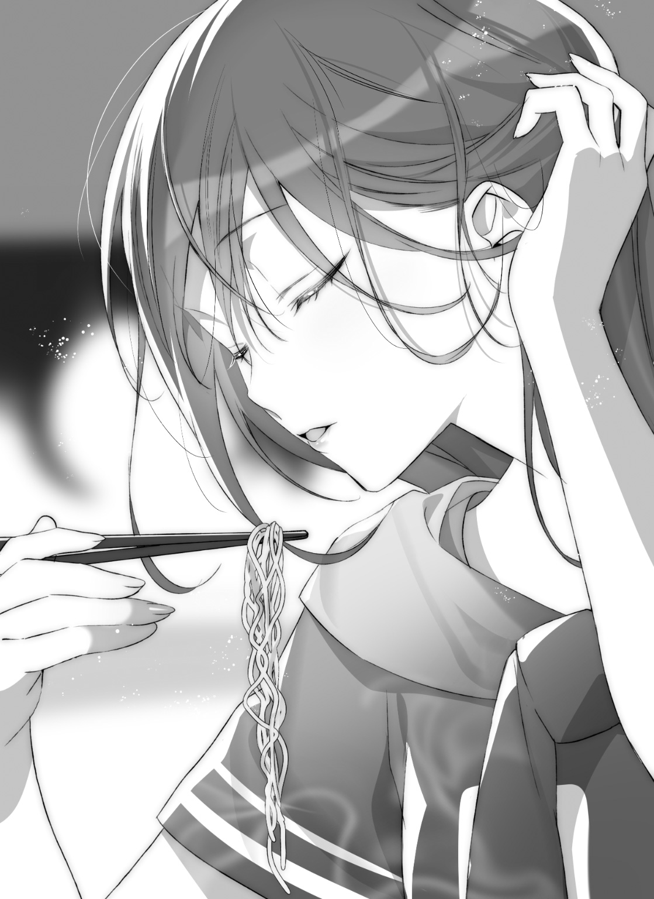
彩李にならって、麵を啜る。
「............うまっ」
「でしょ？」
太くてちぢれた麵に、味の濃いスープがたっぷり絡んでくる。
もちもちの食感に、香ばしい香辛料の風味がしっかりと主張して、もっとお腹が空いたときに来たいと思わせる。今まではカップラーメンくらいでしかカレー味というものを味わってこなかったが、なるほど、本物は違うってやつか。
きちんと実力を伴った本物は、なんだって味わえばきちんと分かる。
逆に上辺だけなぞった偽物は、味わってみるとやっぱり偽物なのだ。
「いや......参ったわ。カレー味で太めの麵ってうどんみてーだな、って思ったけどスープが濃厚だからスゲー合うよ。美味い美味い」
「珍々軒のラーメンを食べずしてカレーを語るなかれ、だよ」
「ここそんな名前だったの!?」
「そしてそれはこの店イチオシのカレー珍々ちぢれ麵」
「いくら個人経営だって商品開発会議くらいしろや！ 誰も止めなかったのかよそのネーミング！」
「美味しいんだけど、名前のせいでぜんぜん女性客来ないんだぁ」
「男子だって尻込みするわそんなの」
「キミ珍々軒のカレー珍々ちぢれ麵を食いながら太いだの美味しいの言ってたワケだけどね、ボクがＢＬ方面もイケるということを踏まえていろいろ考えてみると楽しいよ。どういう気分なんだい？ 女子に珍々ちぢれ麵美味しいですってコメントを聞かれるのは。ボクはそれなりに今テンション上がってるよ」
「そこまで具体的には言ってねえよ！ 次、食欲なくすようなこと言ったらぶっとばすからな！」
無駄話のうちにラーメンが伸びてはもったいない。
俺は彩李から意識を外して、黙々とラーメンを食べた。けっして正式な商品名では呼ばないぞ。絶対にだ。
人間、美味しいものを食べている時は、割と会話がなくても違和感がない。
コリコリしたメンマの歯ごたえを楽しんで、しっとりとスープを吸ったネギを味わって、楽しみに残しておいたチャーシューに舌鼓を打った。
スープはとても美味しかったが、それを掬うレンゲの百均オーラが少し気になった。しかしこれも台無し感余りあるネーミングに比べれば大したことはないだろう。
彩李は、あまりスープに口をつけない。
「やっぱ体形維持みたいなの考えてんの？」
「そういうのセクハラなんだけどなー。というかボクに限らず、ラーメンのスープ飲み干す女の子ってどうよ。しかもカレー味」
「彩李がやる分にはあんま気にしないけど」
「ばーか」
なぜか怒られた。
相変わらず、口調やノリは彩李のまま。けれど紙ナプキンで口元を拭う姿は、このレトロなラーメン屋に似合わないくらい、登道ローラのイメージだった。
「で、お腹もいっぱいになったところで」
「苦しいくらいだな。美味かったけど」
「佐々井氏はなんか落ち込んでんの？」
「............」
氷入りのお冷やで、喉を冷ました。
熱が滑り落ちていく。
「落ち込んでるように見えるか？」
「まあね」
「俺には分からないけど、お前が俺を見てそう思うなら、そうなんだろ」
「お前の中ではな！ って続くやつじゃんそれ」
「入学前からプチストーカーされてるようなもんだからな。よく見られてると思うよ」
「酷い言いようだなぁ」
彩李はころころと笑う。
笑う時、口元を手で隠す仕草は自然なものに見えた。
「正直にいえば、落ち込んでいるというより、光っていないって感じだよ」
「光っていない？」
「うん、くすんでいる。というか、濁っている......みたいな感じ？ いつも別に光ってないけどさ、今日は特に顕著だよ。ボクが駅前を通りがかった時、キミってば人混みの中に埋もれてたんだもの」
「知ってるよ。人混みの中にいたんだから」
「言葉通りの意味じゃなくってさ。一般的な言葉に直すなら――」
ぴ、と人差し指を向けられる。
「存在感がない」
「............」
心臓を、撃ち抜かれたような気分だった。
彩李の言葉は、弾丸のように、一発で俺の命を奪ったんじゃないだろうか。体中から抜ける力は、生きるのに大事なものごと、零れ落ちていくように思える。
「もともと、キミは存在感のあるほうじゃないけどね」
「......」
「いや、疑問に思っただけでね。別に、責めても馬鹿にしてもいないさ。存在感なんてあっても困る。目をつけられるし逃げられなくなる。出る杭は出なきゃ打たれない。雉も鳴かずば撃たれまい。リア充の輪に溶け込もうと思うなら、むしろ邪魔なものじゃあないか」
「そんなこと......」
「ないと言えるかい？」
「......言える」
「どうして？」
「......須藤や野々村さんは存在感がある。本当のリア充ってああいうもんだ。光ってて眩しいもんだ。スポットライトの下で輝いている、あれは理想の姿じゃないか」
「あのねえ、佐々井氏」
顎に、冷たい感触があった。
それが彩李の指だと気づくころには、目の前に彼女がいた。
射止めるような、まっすぐな目だ。
目を見て話すタイプは、いる。きらきらと眩しい野々村さんの目。どこまでも透き通るように素の顔を見せる瑠句の目。
彩李の目は、底なしの穴のように深く、遠い。
「キミの言うスポットライトというのは、きっと存在感の喩えだね。光に照らされた壇上が、キミの思う憧れの、リア充の世界さ」
「......そう、かもな」
「でも、分かってるかな」
「何を、だよ」
「壇上に上がれば、人に見られるんだよ」
喉が詰まる。
店内を照らす、チープな白色の蛍光灯が、視界をチカチカと刺激する。
「素敵な衣装で着飾って、立派な題目を用意して、さあ、社交界の仲間入り。明るい光の下へようこそ！ となったら、光の下で踊らなきゃならない。自分の魅力を披露しなければならない。野々村さんや須藤くんは、息をするように、それができる」
「............」
「佐々井氏。キミ、前に言ったね。光に当たってみなきゃ、どっちが幸せかなんて比べられないって」
「......ああ」
「自分で光り輝いている連中に囲まれて、その光に当たる気分ってどうだい？」
「......悪くない」
「悪くない、か」
「須藤たちと遊ぶのは楽しい。あいつらいいやつだし、今では友達っていうの、けっこう素直に言葉にできるんだ」
「そうかい。それはきっと本心なんだろうね」
そうだ。自信を持って言える。
須藤たちといるとき、楽しかった。リア充のグループに交じって、その一員として扱ってもらえる状況が嬉しかった。その気持ちに、噓はない。
噓は言っていないのに。
それだけじゃないだろ、と自分が語りかけてくる。
「じゃあ、瑠句たそはどうかな？」
次の瞬間......視界が、ぐらりと揺れる。
店内に流れる、テレビの音。厨房から聞こえてくる鍋の音。だんだん遠くなって、周りの景色が曇っていくなか、彩李の声だけが、貫くように届く。
狙った場所を射貫いたような、そんな顔をしている。
「......楽しいに決まってるさ。あいつも、きっと」
「そうだろうね。瑠句たそは、心から楽しそうだ。なにせ、あの子は佐々井氏とはちょっと違う。ちょっとだけど、決定的に違う」
言葉の意味を嚙み砕くのに、時間がかかる。
けれど、理解なんかできなくたって分かる。
「瑠句たそは、たまたま〝光が当たらなかった〟タイプ」
分かっている。
「佐々井氏は......きっと〝光の下が苦手だったタイプ〟だよね」
そんな違い、分かっている。
カラオケの時から、ずっと。
「光の下に出た時、どっちが上手に踊れるかなんて、分かり切ってるじゃないか」
「............」
「分かるよ。ボクは、光の下が苦手なタイプだから」
彩李は、初めて登道ローラとして出会った時に言っていた。
彼女にとって光の下は、リアルじゃない。
俺と彩李は、表の顔も裏の顔も、スタンスも考えも違うようで......ある一点が同じだ。
それだけは、認めたくなかった。
光に当たるのが苦しいとは、認めたくなかった。
「でも瑠句たそは違ったね。あの子は、光を当てられたら自分で輝けちゃうんだよ。それを楽しいと思えるのだったら真正さ。本当の意味で高校デビューできる」
「......」
「もしかすると、キミはそこの違いを分かっちゃったんじゃない？ だから、そんなにしょぼくれているんだ」
「大した想像力だよ......」
「想像するのは得意さ。だってボクはオタクだからね」
彩李は笑う。
何が可笑しいのか、笑う。
「ま、今更ボクに隠すこともないじゃん？ お昼休みみたいに気楽にいこうよ佐々井氏。瑠句たそは共犯者だが、ボクは言ってみれば弁護士さ。いかように後ろめたいことがあろうと、一方的に甘えていいんだよ？」
大げさに両手を広げた彩李の仕草は、どうにも芝居がかっている。
それでも瑠句が行う芝居より、よほど様になっている。モノも違えば年季も違う。自分を偽り慣れていないと、こういう仕草は似合わない。
夏服に包まれた身体は、腕を広げられると嫌でも目に入る。
「じゃあさ、佐々井氏」
そして、悪魔のように囁く。
「瑠句たそをリア充にするの、やめちゃえば？」
呟く。
「あの子。たぶん今のままでも、そこそこ幸せだよ」
惑わす。
「......なに、言って......」
「だってさあ。このまま瑠句たそだけグングン勢いにのって先に進んじゃうとさ、本当にいつかは混じりっ気なしの人気者になっちゃいそうじゃない？」
「それは、いいことだろ」
「そこにムキになってついていくの......苦しくない？ 瑠句たそがマジでリア充になっちゃったら、キミ、とうとう瑠句たその前でまで〝リア充のふり〟して付き合わなきゃいけなくなるんだよ？」
否定の言葉が出てこない。
ぱくぱくと口だけ動かしてみるが、吐くセリフがひとつもない。
「だからさぁ、瑠句たその足引っ張っちゃえばいいんだよ」
「......んなっ」
「マンガ・アニメ研究会の部室をさ、瑠句たそにも貸してあげればいいよ。気兼ねなく、素の顔でいられるところを作ってあげる」
彩李の言葉は、甘く。
「ボクと佐々井氏と瑠句たそで、ガン・ガールの話をめいっぱいしよう。キミは今までどおり、外ではリア充の顔をしていればいい。瑠句たそはキミに助けられないと動けないままで、ずーっとキミの傍にいるよ」
とても優しく、魅力的で。
「キミは、それを望んでいるんだろ？」
でも。
「だからボクが、キミの力になってあげる」
瑠句の笑顔を思うと。
あの、嬉しそうな笑顔を思うと。
「............できない」
できるワケがない。
俺は瑠句と〝共犯者〟になった。一つの目的のために噓を共有して、協力する関係になった。
以前、彩李に言ったとおりだ。俺は、リア充になりたいと願った、あいつの夢を叶えてやりたい。
日の当たる場所で生きたい気持ちは、痛いほど分かる。
「俺以外にもきちんと分かってもらえるような、いいところが、瑠句にはある。このまま頑張れば、自分で友達を作ることだってできる。......きっと、恋だってできる。俺がついていけなくたって、俺は......なるべくなら、瑠句のためになっていたい」
そして、それ以上に、
「やっと輝き始めた瑠句の......邪魔には、なりたくない」
心から、そう思う。
「そっかぁ。じゃあしょうがないね」
彩李の手が、ゆっくりと開かれる。
その掌は、行き先に迷うことなく、静かに俺の頭に置かれた。
「......彩李？」
「なあに、しょげることないさ。取り残されたなら、キミだけこっちに来るといい」
彩李の声は、優しげに聞こえた。
いや、声そのものは、最初から変わっていない。最初から彩李は甘く、優しく囁いていた。それが、撫でるような手つきと、視線を意識して、ようやく分かっただけだ。
鈍感なんてもんじゃない。
「前向きに生きられないなら、一緒に後ろ向きに生きようじゃない。ボクもいいかげん、登道ローラって舞台から降りるきっかけを探していたからさ。日陰者どうし、仲良くしよう？ ......キミの逃げ道くらいには、なってあげられるよ」
「............」
それに対して、俺はろくな言葉も出なかった。
額に感じる温かさの、耳に響く声の甘さの、その正体がはっきりと輪郭を持ち始めている。それが俺にとっては、恐ろしい。
俺なんかに向けられるはずのない感情、だと思っていた。向けられていい感情であるはずがないと思っていた。
「ただし、ボクの側に来るなら条件がある」
「......なんだよ」
「瑠句たそをキミの頭の中から、すっかり追い出すこと」
「............」
「完全にきっぱりと。単に会わないとか話をしないとかだけじゃなくて、瑠句たそに向けるすべての感情を、心配を、何もかも追い出して、ボクだけを見ること。頭のなかさっぱりすっかり、瑠句たそのためには使わないこと。できる？」
「できない」
即答した自分に驚いた。
何をいまさら。何様のつもりで、俺はそんな答えを出すのだろう。彩李の手を振り払うため、という言い訳だけではないはずだ。
一瞬、自分の答えに動揺して、行き場を失った視線を整える。
彩李をもう一度見る。
彩李は、少し黙って、眉をひそめて......手を自分の膝の上に戻した。
「そっか」
短い応答。
彩李は、言葉と一緒に何かを切るようだった。長い瞬きをして、溜息。
それから少し、寂しそうに、笑った。
俺は笑わなかった。
「度胸も自信もないほうに見えるけど、割と正直だよねえ、キミ」
「......ごめん」
「謝るなよ。いや、ボクもどちらかと言えば、そう言わせたかったんだ」
力なく肩をすくめる。
彩李羽音は、そんな仕草すらも整っていた。それは整いすぎていて、なにかを終わらせる儀式的な振る舞いにも見えた。
「......なんでだ？」
「その質問は、何に対してだい？」
「ずっと気になってた。なんで俺なんかに、そんなに構うんだ？」
「前も言ったろ？ キミっていうか、キミたちのことが気になってたって」
「そういうことじゃない。そういう......ことじゃあ、ないだろう？ 俺だって、この期に及んでお前の言葉の意味を分からないほどは馬鹿じゃないよ」
「良かった。キミが鈍感系主人公属性だったらどうしようかと」
彩李が肩をすくめて笑う。
冗談めかした口調で、冗談じゃないことを言う。
人の本気は伝わってくるものだ。彩李が自分のことをニュータイプだなんだと嘯いているのとは別に、空気を伝播する気持ちがあった。
少しの間、彩李は汚れた天井を眺めていた。
それから、唇を軽く舌で湿らせて、続けた。
「キミに構ったからさ」
「......答えになってなくないか？」
「ボクはね、こう見えても、人付き合いをなるべく避けて生きてきたんだ」
「こう見えてもって、いや、そういうふうには見えてるけど」
「登道ローラという外の顔と、そのスイッチを切った彩李羽音という顔。スイッチを切っていられる素の姿でいる間は、なるべく邪魔されたくなかった。キミだってオンオフはしっかり分けるタイプだろ？」
「......否定しない」
「似てるんだよ、ボクらは」
「それも、否定しない」
「似てるから構っちゃったのさ。そうしたら、ほら......」
彩李は、切り揃えた前髪を弄った。
整えてあるものを、わざわざ乱すような仕草。
見栄え良く飾ったなにかを、ほぐしていくような仕草。髪が整っているかをしきりに確認したり、それをわざと崩したくなったり、そういう仕草は覚えがある。
俺たちは似ている。
進んだ方向性が違っただけで、とても似ている。
彩李羽音は、俺の影だ。
彩李のたどった道を、俺は否定していた。光に当たってみたいと思った。それが今は、とても近い距離までやってきている。
今、この時間。
何よりも近くで、彩李羽音の顔をよく見ていた。
「ボクはさ」
意を決したように、彩李は話し始めた。
「ボクは、自分の近くに誰も置かないできたから。興味だけで近づいたキミに、近づけば近づくほど、他人と話すのが楽しいって思えちゃったんだろうね」
「その気持ちは、よく分かる」
「だから、もっとずっと、近くに置いておきたくなったんだ」
「......それだけか？」
「それだけだよ」
「いまいち釈然としない」
「佐々井氏は、理由が必要なタイプかい？」
「お前が俺に言ってるのは、その......友達とか、そういう関係を超えた話だと、俺の勘違いじゃなければ、そう思ってる」
「恥ずかしい話だけど、違いない」
「なのに......理由が、いらないわけないだろ......？」
「......あー」
彩李は、力を抜いた。
「そっか。佐々井氏は、そうなのか」
何かを諦めたような態度だった。
その理由が分からなくて、俺は不安になる。
理由が分からないことの、理由が分からない。
こんなにも似ている彩李を、分かってやれない理由が分からない。
それは、とてつもなく俺を不安にさせた。自分に似ている相手のことすら分からない俺は、自分のことすら分からないんじゃないかと思ってしまう。
須藤に彼女ができたことすら気づいていなかった。
あんなに間近にいる瑠句のことすら、ちゃんと見ていなかった。
そんな俺が、彩李羽音まで理解できないでいる。
漠然とした不安が、襲ってくる。
「まあいいじゃないか、理由なんて。だいたい、佐々井氏はとっくにボクの誘いを断ったわけだろ？」
「......それを言われると、図々しい話だと思うけど」
「まぁ......キミには瑠句たそが充ち満ちているからなぁ。無理かなって思ってたんだよ」
「......充ちてる、か」
「充実してる、と言ってもいいね」
皮肉な響きだ、と思う。
今ほど自分を空虚だと感じた経験は、ないというのに。
「充実ってのはいいことばっかりじゃあないんだよねぇ、佐々井氏。酸いも甘いも、というやつで、キミは結局、ポジティブなこともネガティブなことも瑠句たそ中心だ」
「......基本が空っぽだからな」
「そんなキミが悩みに悩んで、瑠句たそとの間にどういう答えを出すのかは分からない。けどまあ......頭の片隅でいい。ちょっとだけボクにちょうだい。少しは今日のことを覚えておいてもらわないと、ボクも女子として少し悔しい」
「......忘れられるわけがない」
「言うだけはカンタンだけど、心の中まで強制するのは難しいよねぇ」
「いや、本気で言ってるんだ。だって......」
「だって？」
「登道ローラは、きっかけなんだ」
彩李の目が、まん丸に開かれた。
不意をつかれた、と言わんばかりの顔はあまりにも無防備で、それは俺から紡がれる言葉さえ素直にする。
「......俺と同い年で人気者になって、すごいって思ってたよ」
そんな相手がクラスメイトだった。
そんな相手が、自分を必要としてくれた。
忘れてしまえるわけがない。
「リア充になろうって思いたって勉強して、初めて知った。写真で見るだけで、ほんと、眩しかった。彩李にとっては演技の姿なのかもしれないけど、見てる俺には眩しかった。この光を目指さなきゃ、って思ったんだ」
「所詮、アマチュアモデルなんだけどなぁ」
「それでもだ。......お前の使ってる美容室が近くにある。って、知らなかったら、踏み出さなかった。瑠句だってきっと同じだ......と、思う。たぶん」
「憧れってのは、理解から一番遠い感情だって誰かが言ってたなぁ」
「それでもだ」
声は震えている。お世辞にも力強い宣言なんかじゃないだろう。
俺は言い訳をしているだけだ。
けれど、素直な気持ちだ。
考えるより簡単に、ただ吐き出すだけだから、流れ出る。
「そうだ。一緒に後ろ向きになんか、なってほしくないんだ。瑠句の邪魔をしたくないのと同じくらい、俺は登道ローラの邪魔にもなりたくない」
「......」
「登道ローラを引っ張って沈む俺には............なれないんだ」
「......参ったな」
照れるでもなく、悲しむでもなく。
彩李は、本当にただ「参った」とばかりに、視線を泳がせた。
「ま、ラブでもないしライクかも微妙だけど、リスペクトって形でもいいことにするよ。うん。ボクのモデル生活も、あながち無意味じゃなかったみたいだし」
肩をすくめて、おどけてみせる。
どんな姿だって仕草だって、綺麗だ。
きっとそんじょそこらの誰よりも、ただポーズをとることが似合っている。知っていたさ。俺だってそれなりに、近くにいた。
彩李の魅力なんて、分かっていた。
肝心なところは、もう少し早く分かればよかった。
そして分からないたったひとつのことは、きっと永遠に分からない。
「登道ローラをフッた男、って名乗ってもいいよん」
「笑えねえよ」
「いいじゃん。決めるってのは、割と胸を張ってもいいことだ。ああ、〝ガン・ガールＸ〟の十三話だったかな。アニメっていい言葉の宝庫だよね」
「十二話だ」
「こりゃ恥ずかしいや。さすがは佐々井氏だ」
「......お前とガン・ガールの話をするのは楽しかったよ」
「だろ？」
「もっと素直に、たくさん語ればよかった」
「だからって、瑠句たそとバッドルートに進んじゃったところで、もうボクのルートは空いてないからね」
「そんな虫のいい話、期待してないよ」
「少しは期待しろ、バカ」
彩李は笑った。
俺は笑えなかった。
■
「......ごめん。いきなり電話とかして」
「いや、気にすんなってそんなの」
帰宅後。部屋の中は、今までで一番静かだった。
独り暮らしの気楽さは、心が軋んでいるときは、そのまま寂しさに変わってしまう。もう数カ月は過ごしてきた部屋が、よそよそしい空気に染まっていた。
強いて言えば、入学したてで不安ばかりなころは、この部屋がこんな空気で満ちていた気がする。
テレビの音だけが流れる部屋、ぐるぐると回る彩李との会話に耐えかねていた時、須藤からＬＩＮＥで連絡があって。
気づけば、俺は通話を始めていた。
放って帰って、話に付き合わせて、我ながら勝手なやつだとは思ったが、須藤はあっけらかんとしたものだった。
「今日だって、せっかく須藤が誘ってくれたのにさ、なんかノリ悪くて」
「遊びたいときに遊びゃいいじゃん。気分の乗らねー時もあるべ」
「そういうもんか......？」
「そーいうもんだって。マジメすぎだろ、佐々井ぃ」
けらけらと、転がるような笑い声が、薄いスマホの向こうから響いてくる。
馬鹿にされているようで頰が熱くなる。
と同時に、こんなに薄い板が、よく人の気持ちを届けるもんだと感心する。まるで襖を一枚挟んだ向こうで、背中合わせに喋り合っているような、そんな近さがある。表情の見えない話から、ただ息づかいだけは響いてくる。
「佐々井、覚えてるか？」
少しの間、口を開けないままでその息づかいに耳を傾けていると、須藤のほうから話を続けてくれた。
リア充は、途切れた話をいつでも再開することができる。
「......何をさ？」
始めた話を切ることしかできない自分を恥ずかしく思いながら、せめて、その話が長く続くように返事をする。垂らされたロープが切れないように、やさしくやさしく手繰る気分だ。
「ほら、四月ごろさぁ」
「四月ごろ......？」
月だけ言われても、いまいちピンとこない。
ただ、入学したての時期ということは、俺にとって思い出したくないことも少なくないはずだ。野々村さんや須藤と仲良くなる前、けっして俺の高校デビューはスムーズではなかった。意識的に蓋をしている記憶だって、きっとある。
......そういえば、蓋をしすぎて思い出せないけれど、俺はどうやって須藤みたいなリア充とつるめるようになったんだっけ？
雑に片づけた部屋で、大事なものまで押し入れの奥に突っ込んでしまった。
そんなような感覚がある。
「四月、俺なんかしたっけ」
「佐々井さ、オレのこと保健室に連れてったじゃん？」
「......あー、あー......」
あった気がする。
と、さわりだけ思い出すと、記憶より先に気持ちが甦ってくる。それは確か、わりと苦めの思い出のはずだ。蓋をしているに決まっている。
「思い出したか？」
「......須藤が具合悪そうにしてたと思ったら、俺の勘違いだったやつじゃん」
あの時須藤は椅子に深く座って、うつむいていた。
唸っていた気もする。そりゃ俺も勘違いする。
「まあ具合悪いっつーか、かったるかった時な」
「つまり具合悪くなかったってことじゃん」
「いや、あんとき具合は悪くなかったんだけど、キゲン悪くてさぁ、授業とかマジでめんでぃーかったから具合悪いのと変わんねーっしょ」
「......そういうもん？」
「そういうもん」
はっきり言いきられると、二の句が継げない。
須藤や野々村さん。というか、リア充とそうじゃない俺。
その違いの最大の部分は、自信の強さだと思う。
自分を信じるから「自信」と書くのなら、須藤は自分のことを強く信じていて、俺は自分をさっぱり信じていないのだろう。
だって俺と須藤を並べたら、自分だって須藤のほうを信じたくなるに決まっている。
「とにかく、オレと佐々井の間にそういうことがあったわけよ。忘れてたみてーだけど」
「ごめん」
「いちいち謝んなって。おかげで授業抜けれたし」
「......サボりの手助けになるとは、思わなかったけどなぁ」
「だってのに佐々井がやたら大真面目だからなぁ。須藤くん大丈夫か！ 春先もインフルエンザが流行ってるからね！ ってマジでウケたわ」
「......ウケたか」
「鬼ウケ」
スマホの向こうで、須藤が笑う。
俺は顔が熱くなって、今すぐにその場から消えてしまいたくなる。自分でも覚えていない、そんな恥ずかしいセリフを、須藤はよく覚えている。
これは、制裁だろうか。俺が須藤たちの集まりに水を差してしまった仕返しをされているのだろうか。それならそれで仕方ない。表情も見えていないのに、愛想笑いを作った。
「......ウ、ウケたなら、まあ、良かったけど」
「めっちゃ心配されてんのマジ可笑しくてさぁ。んでも、なんつーの？ ほら、授業中の廊下の空気ってさ、アレじゃん」
「ど......どれよ」
「なんか別世界っぽいっつーの？ 他が普通に授業受けてるとこで廊下にいるって、割とフシギな時間なんだよ。そういうの、ない？」
「......ない、ことはない」
俺の場合は放課後にそれを感じていた。
集団生活の息苦しさがない学校の中、というのは特別な時間だ。
「そういうとこで二人だと、こう、話すのに余計なもんがねーじゃん。だから佐々井の真面目な顔ばっか見えるわけ」
「それが面白かったって？」
「いや面白かったんだけどさ。それと、なんかこいつマジだなーって思ったんだわ。オレは授業サボれてツイてるわー、くらいに思ってんのにガチで心配してんじゃんお前」
「ピエロっぽいよな」
自嘲する笑いが自分から聞こえる。
「や、ピエロっぽいっつー例えはわかんねーけどな。オレ国語苦手だし」
「国語じゃないじゃん」
「やべ、ピエロって英語？」
「フランス語」
「そういうの、さっと出てくるあたりすげーよな、佐々井」
とっさに答えてしまったことを後悔した。
中学時代にインターネットに潜り続けた結果がこの無駄な記憶だ。
「まあ、あんときの佐々井みたいにさぁ」
「俺みたいにはなりたくないよな」
「そうは言ってねーだろ。とにかく、こう......たるい時っつーか、サガってるときっつーか、気分のノらない時に逃がしてもらえるのって、けっこうありがたいんだよ。勘違いだったにしても、マジで心配してくれたんだし」
「......」
「そっからオレと佐々井ってつるみ始めたわけじゃん？」
「......えっ、そこからだっけ？」
「そうだよ。そういう始まりなんだから、佐々井がノれねー時に無理に付き合えなんて言わねーよ。気分良くねえ時は気にせず帰ればいいんだよ」
「そ............そう、か」
須藤との通話は、それからほどなくして終わった。
今度は話を終わらせることすら、須藤に任せてしまった。スマホの向こう側に誰もいなくなったことを感じながら、ごろり、とベッドに仰向けになる。
シックな部屋の天井は、見つめていても味気ない。
白紙のノートを眺めているように、その味気ない天井に、ぼやぼやと思考が浮かぶ。
「......」
考えてみれば、須藤と俺に付き合いができたのは、奇跡のようなものだと思っていた。
たまたま隣にいた須藤が、リア充特有のコミュ力で話しかけてくれたから、きっかけができたのだと思っていた。
今でさえ、須藤から聞いた経緯が真実だとは信じられない。
きっかけを作ったのが自分だとは思えない。
そこで気づく。
須藤は割と、俺を悪く思わないでくれている。たぶん須藤は、須藤自身のことも俺のことも信じてくれている。
なのに、俺が俺を信じきれない。
須藤が信じる俺を、俺自身が信じられない。
須藤よりも、自分のことが信じきれないせいで、結局なにひとつ信じられない。
それが、俺だった。
そんな最低な、俺だった。
「......どうしてだろうなぁ」
どうして須藤と違うのだろう。どこが彼らと違うのだろう。
どうして、違うと思うのだろう。
一番最初に、違うと思ったのは、もうずいぶんと昔の気がする。
それこそ、記憶があやふやなくらい。
味気ない天井をぼんやりと眺め、意識はだんだんとかすれていく。
■
夢に落ちて、記憶の深いところで自分を見ていた。
明るい場所を、陰からじっと見つめている記憶だった。きっとそれは、幼稚園くらいのことだと思う。
先生の手作りの、なんともポップな賞状をもらって、頭を撫でてもらっている誰か。
そして、それを眺めている、賞状をもらえなかった......小さなころの自分。
そうだ。小さいころから、褒められている子をたくさん見てきた。
――○○くんは脚が速くてすごいね。
――××ちゃんはとても頭がいいね。
そうやって、スポットライトを当ててもらえる子を、たくさん見てきた。
褒め言葉は善意だ。
褒められない子供への悪意はないと分かっている。
でも脚が速いとか、頭がいいとか、そういった褒め言葉は〝平均より〟という物差しがないと出てこない。誰かが褒められている時、自分が褒められていないと、彼らは皆、俺よりすごいと言われているのだと思っていた。
スクールカーストという言葉を知ったのは、いつだったか覚えていない。
インターネットという文化を手に入れてからなのは間違いない。けれど、名前は知らずとも、そういうものを肌に感じ続けてはいた。
一度意識してしまうと、それは二度と頭から消えなかった。
誰かと自分を比べて、会話ができなくなっていく。
出来の良くない自分を見てほしくなくて、だんだん隅っこに寄っていく。
他人に囲まれて暮らす以上、比べてしまうものはいくらでもあった。誰かより劣っていることがとても恥ずかしかったし、少しでも勝っているものがあれば、誇らしかった。
リア充と違って、充ちていない俺たちは余計なことを考える余裕がある。
クラスを見渡して、自分の位置を考える。
上はなるべく見ないようにする。
自分の下に、どれくらいの人間がいるか確かめる。
自分より下があることに安心して、ふと、また一つ自分を嫌いになる。
そんな生き方を続けてきた。
一人では、絶対にそのシステムから抜け出せない。
だから、グループに目をつける。
上位のグループに入れば、自分が凄くなくても安泰だ。そこに所属しているだけで、リア充であるような気になれる。虎の威を借る狐。いい言葉だ。
俺は狐を目指した。
誰かじゃなくて、グループに近づければどこでもよかった。
自分がいくら凄くても、友達がどれだけ凄くても、下位のグループに入ったら失敗だ。
そのことに気づいたのは中学生の途中。今から上位を目指すことは無理だ、と思った俺は、高校進学に望みをかけた。
須藤たちのいるグループは、煌めいていた。
けれど瑠句との共犯関係も、またグループだった。
一人では堂々と生きられない二人が、安心していられるグループだった。
けれど、それは誇れるものではないから、隠さなければいけないものだった。だから瑠句は俺を気遣って、登校や帰り道を律義に分けてくれていた。
誰かに「あいつらは同じグループなんだ」と思われることを、避けていた。
俺より、ずっと避けていた。
俺のことを避けていたんじゃない、とは分かっているつもりだ。そこに悪意を混ぜ込むやつじゃないって、俺が一番分かっているつもりだ。
でも。
俺が、それを心の底から信じきれない。
瑠句を信じたい俺を、俺が信じきれない。
こんな俺が、須藤や瑠句に、野々村さんや彩李に、なにかひとつでもいいものを与えてやれるものだろうか。
いいや。
そんな俺であるわけがない。
......だとしたら。
もしはっきりと、瑠句のほうが俺よりも「上」に立つなら――。
■
「聞いてますか？ 望くん」
「......ん、お、おう」
瑠句に会ったのは、偶然だった。
バイトにかまけていた間、さっぱり宿題に手をつけていなかった俺は、とりあえず楽そうなものから終わらせようと読書感想文を選んだ。
流行りの「泣けるやつ」を読もうと買ったはいいものの、びっくりするほど感想が浮かばなかったので、ヒかれない程度にメジャーなやつで済ませようと町唯一の図書館に来た結果、同じ考えの瑠句とばったり会ってしまった。
新しい造りのこの図書館には、ちょっとしたテラスのような空間がある。この開けた一角では、多少の会話は許される空気があって、同じく読書感想文目的の小学生がワイワイと賑やかにしている。
俺は瑠句とその場所の一画に座り、話すことにした。
はっきり決めたわけではない。ただ、瑠句と会って「じゃあ俺はこれで」と帰るような真似が、単純にできなかった。
「それで、望くんはどんなの読むことにしたんですか？」
瑠句はいつも通りだった。
いつも通りの瑠句に、いつも通りの調子で合わせるのはさほど難しくない。
「〝この空にエールを〟ってやつ。有名どころだよ」
手に持った文庫本をひらひらと揺らす。
あらすじには「野球少年が選手生命を絶たれてふて腐れるも、才能ある同級生に出会い、マネージャーとして支えていく」なんて内容が書いてある。
分かりやすいし、なんとなく共感が持てる。
「へぇー、確かに私でも聞いたことあるタイトルです」
「テレビとかでもちょくちょく紹介されてたし、映画にもなってるらしいからさ。内容がストレートなのもいいけど......やっぱ知名度って大事じゃん？」
「読書感想文でも、そういうの気にするんですか？」
「そりゃあそうだよ。マニアックな作品だとマニアックな感想になっちまうからな。そういうところで隠してるオタっぽさがバレちゃあ危険だから」
「なるほど......宿題ひとつとっても、いろいろあるものなんですね」
「そういう瑠句は、何読むか決めてきたのか？」
「はい。ちょっと迷ったのですけど、これにしようかと」
瑠句も、手に持っていたハードカバーの本を見せた。
「なにこれ」
「〝シュレディンガーは透ける猫を見たか～または狭間からの思考実験～〟ですよ」
「または～じゃねえよ！」
「えっ、そこがダメなんですか!?」
「ヴィレッジヴァンガードでもそうそう見ねえぞ!? こんなひねくれたタイトル！」
「で、ですけど、私のキャラで望くんみたいに〝この空にエールを〟とか読むのはちょっと......」
「いや、こっちはちょっとどころじゃないだろ......？」
「〝新訳・三国志演義〟とも迷ったんですけど、ちょっとイメージ的に違うかなと......」
「何もかも違うよ！ っていうか三国志で読書感想文ってなにする気だお前......論文でも書くつもりだったの......？」
「張飛が亡くなるシーンとかに絞ろうかと......」
「トップクラスにリアクションしづらいとこじゃん......」
「私、あまり人に教える前提で読む本を選んだりしないので、ちょっと感覚が分からなくって......」
「......はぁ、まったく」
やれやれ、と肩をすくめる。すくめた肩が軽かった。
なんだ、結局瑠句は瑠句じゃないか。
俺がついてないと、何をするか分からない。一人で読書感想文を書かせていたら、論文発表みたいな内容にしかねない。
そういう安心と、それとは別の気持ちが、両方あった。
「やっぱり、瑠句は俺がいないとダメか」
「ごめんなさい......」
「............本気でその本、選んだわけ？」
「............あはは。面目ないです」
自分がもっと鈍感ならば、もっと幸せに生きられたかもしれない。
瑠句の力ない笑顔は、口下手な舌より言葉を語る。
スイッチが入った。
「ほんっと、どうしようもない」
「......いえ、でもですね」
「こんなんじゃ、いつになったら安心できることやら、気が遠くなるよ」
「のっ、望くん。私のことちょっとバカにしてません？」
「だってなぁ。危なっかしくって一人で何かさせらんないよ。バイトの時も、カラオケの時もそうじゃないか」
「わ、私だって、それなりにレベルアップしてはいるんですよ」
「どの辺がだよ」
知っている。
「望くんが知らないうちにリア充っぽくなってたりするんです」
知っている。
俺だって、ちゃんと知っている。
「へぇ～......俺の知らないうちに、か。一人でどんな成果を上げられたのか、ぜひ詳しく知りたいとこだな」
「ふふん。私も少しは魅力的な女になってきた、ということです」
「ほーう、どの辺が？」
聞く必要なんか、本当はない。
「実はですね。ほら、バイト中にサイコーの学生さんがちょくちょく来てたじゃないですか」
「ああ」
瑠句目当てに。
それも知っている。
「なんと私、連絡先を聞かれたりしちゃったりしていたんですよ」
「......へぇ」
「なんていうか、その、結構気さくに話しかけてくれたのもあるんですけど......あの喫茶店でバイトしていた間、割と私の人気って悪くなかったらしく」
「客が増えたのは瑠句のおかげだって？」
「いえ、そこまで言うと自惚れかもとは思うんですけど......まあ、そんなようなことも言われまして。やっぱり他人の口から聞くとちょっと信じちゃうかなっていうか......その」
瑠句は美人だ。自惚れなんかじゃない。
美人というのが容姿だけにかかる評価なら、それとは別にかわいいという評価もつけていい。
瑠句は女子として極めてハイレベルだ。
そんなこと、知っている。知っていた。
きっと俺だけが気づいていると思っていたし、気づいていることに気づいていなかった。
少し、前までは。
「見た目はいいからな。息をするようにナンパできるような連中なら、とりあえず声をかけてみる、ってこともあるだろう」
無様なセリフだ。
自分で反吐が出る。
「で、でも、それほど軽薄な感じはしなかったというか......割と上品な方でしたし」
「確かに上品そうだった」
瑠句の評価は正しい。きっと瑠句を評価した、その男子の評価も正しい。
彼らの中の誰であれ、俺よりよほど上品で、男子として魅力的だ。
知っていた。知っていたが分かろうとしなかった。
「と、とにかくですね」
こほん、と咳払いする。
瑠句は胸を張り、腰に手を当てて勝ち誇った。
「私だって、ちゃんと一人でリア充っぽいっこともできるわけです」
そうか。
心の中で響く声を、そのまま口に出す。
「そうか」
「ええ、そうですとも」
「お前は凄いな」
「望くんが思ってるより、けっこう凄いんです」
床が揺らいだ。
錯覚だろう。揺らいでいるのは俺のほうだ。
凄く凄く大事な綱が、切れてしまった。いや、そんな風に考えるほど間抜けではいけない。切れていたんだ。綱は最初から切れていた。俺が気づいていなかった。
胸に灼熱が生まれる。
胃の上のほうに溜まった熱が、一斉に頭に昇っていく。高熱を出したときに近い。
両の目玉を中心にして、頭蓋骨を痺れが包んでいく。耳鳴りがする。
心臓の周りだけが、異様に寒い。
「そうだな、瑠句は凄いのかもしれない」
「えへへ、そうですとも」
「俺より凄い」
「そ、そうですかねー......」
「たぶん、もう俺の助けも必要ない」
「そ、そこまでは、ちょっと言いすぎではないかと」
「瑠句」
断ち切るような声を出した。
分かり切っていることは、声に出してもスムーズだった。
「もう、いいかもしれないな」
「............何がです？」
「俺に頼らなくっても」
俺だけがいつも心配していた。
瑠句の振る舞いを危なっかしいと、勝手に決めつけて、手を貸し続けていた。
俺が思うより、もう瑠句はしっかりしている。作ったキャラも、前ほどに刺々しくはない。怖いイメージを取り除いた今となっては、瑠句と自然に話す同級生だっている。
バイト中だってそうだ。瑠句はしっかりしていた。
俺が散々「駄目だ」と感じた瑠句を、魅力に思って客が集まった。野々村さんだって評価していた。
本当に魅力的な女の子なんだ。もっと、もっと瑠句の魅力は知られるべきなんだ。
むしろ、枷になっているのは俺のほうじゃないか。
だいいち、今瑠句が作っているキャラ。ガン・ガールのマドカを模したクールなキャラ。
そんな、邪魔になるキャラづけをさせたの自体――。
「瑠句。俺は――」
詰まった言葉を、無理やり押し出す。
「俺はリア充じゃない」
「......私だってそうですよ？」
「お前はなれる」
「私がなれるなら、望くんだって」
「悪いけど、俺には無理だ。なれて〝もどき〟が関の山なんだよ」
落ち着いた声で喋れたことに、感謝した。
「の、望くん......」
「無理なんだ。どれだけ自分を着飾って、取り繕って、スポットライトの下に出てみても、そこから出せる手札がない。なんにもないんだ。光に当たってみなきゃ、分からないことだった。やっと分かったんだ」
「私だって同じですよ......」
「違うよ。瑠句は、光の下にさえ連れていけば、自分でなんとかできる。カラオケも、アルバイトも、連れていけば瑠句は、ちゃんとできるんだ」
「......でも、連れていってくれたのは望くんです」
「もう、俺じゃなくてもいい。歩き方だって、分かってるはずだ」
吐き捨てるようだった。
やめろ。と、頭の後ろで何かが叫んでいた。
それは俺自身の声だったかもしれない。
「もう、俺以外にも、瑠句を見てる人がいるよ」
瑠句は俺だけのものじゃない。
自転車と同じだ。
自転車に乗れない子のために、サドルを押さえて補助してやっていたのと同じだ。
自分でペダルを漕げるようになったら、摑んでいた手を離さなくてはならない。
補助は、重しになってはならない。
本当に「リア充」になるなら、二人っきりの狭い世界にいてはいけない。
「俺はそんな風になれない。ずっとずっと、メッキのままだ。輝いているふりをしているままだ。ステージから漏れるスポットライトを眺めて、一緒にいる気分になるだけだ」
「望くん、私――」
「縛りたくないんだ」
同じことだと思う。
瑠句が、俺に気を遣って、通学路を分けていたことと同じだと思う。
「金髪に染めたときに、きっと瑠句は変われたんだよ。ちゃんと変われたんだ。だから、瑠句はそのまま、ちゃんと輝くんだ。だから」
自分の前髪を弄った。
「卒業だよ、瑠句」
染めた毛先の感触が、薄っぺらい。中途半端な茶髪。
「ここからが、一人で、本当の高校デビューだ」
俺は一方的に、打ち切った。
瑠句との共犯関係を、打ち切った。
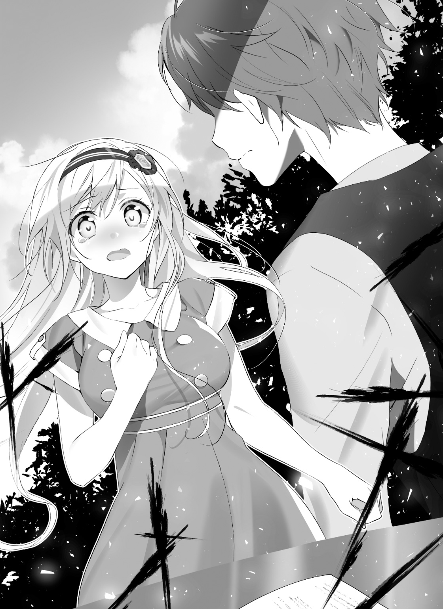
「望くん」
もう、視界に瑠句は映っていない。
金色の髪は映っていない。太陽の昇る空を、自分から隠してしまうように、俺は瑠句に背を向けていた。
背中に、声が突き刺さる。
「望くんっ！」
図書館で大声を出してはならない。
そんな常識も守れなくって、本当に大丈夫か。なんて、考えることがおこがましい。
返事はしない。
振り向きもしない。
一歩ずつ、瑠句から離れるごとに、引きちぎれていくような痛みに耐えて進んでいく。少しでも止まれば耐えられない。
それがつらい道だということを、選んでしまった今になって、間抜けなくらいに実感する。
そこからどう帰ったのかは、覚えていない。
ただ............図書館は、正しく静寂を取り戻していた。
■
時間の流れる速さは変わるらしい。
夏休みは、淡々と過ぎていく。何も気にすることなく過ぎていく。
電灯の消えた部屋。
自分で勝手に終わらせた関係を思って泣くのは、勝手すぎると思っても、涙はお構いなしに流れていく。
それでも言わなければならなかった。
ぬるま湯に浸かって心地いいだけの、相互依存を遠ざけて。俺と違って、自分の力できちんと輝けるようになる瑠句を、送り出すのなら早いほうがいい。
シーツがひんやりとしている。
涙でぼやけた天井が、時間を歪ませるように、記憶を移す。
朝が始まるたび、眺めていた天井。
顔を洗って、着替えをして、その先に瑠句の笑顔が待っていた。
手放してしまった。
そんな日常を、手放してしまった。
俺のほうから、我慢できなくなる前に。
瑠句を縛りつけたくなってしまう前に。
偉そうなことをいくら並べたって、俺の中の、頭の悪い部分が止まらない。
理屈で説明できないものが、痛い、痛いと叫び続ける。
瑠句。
瑠句。
本当にごめん。
勝手でごめん。不器用でごめん。でも見失いたくなかった。
瑠句をリア充にすること。
瑠句に光を浴びせてやること。
それは最初の望みで、絶対に邪魔しちゃいけないはずだった。忘れてしまう前に、やらなければならないことだった。
だから、ごめん。
面と向かって言う勇気なんか、ひとかけらだってないけれど。
本当に、瑠句のことばかり考えていた。
この気持ちの名前は、よく知らない。
失恋と呼ぶのは、さすがに図々しいと思った。
四章 『佐々井望は変わりたい』
夏休みは明けた。
俺は初めてのズル休みをした。
始業式からサボりだ。
「サボりなんてリア充っぽいですね」と、そんな声が頭に響いて、情けなさに目元がしびれていく。シーツを握りしめようとして、指がうまく絡まずに唸る。
陽光を嫌がるように、カーテンを閉めていた。
外ではもうとっくに、太陽が昇りきっている。
そこで初めて、俺は、瑠句が登校前に訪ねてこなかったことに気づいた。
「......」
少しだけカーテンを開き、隙間から外を眺めた。
太陽は夏の名残をとどめながら、けれど前よりもやさしい光で照らしている。外からは、子供の声がする。遅刻に焦っているようで、元気のいい響きがはずむ。
スズメの鳴き声と、道を走っていく、のんびりとした車の音もする。
朝の光の当たるところで、誰もが夏休みを終えていた。光の下で踊っていた。
カーテンを閉めて、布団にもぐった。
光に当たりたくなかった。
俺は育ちすぎた蛹のようになって、部屋の中で動きを止める。太陽が過ぎ去ってくれることを、ただただ待つように、布団にもぐり続けた。
無意味な時間は、緩慢に過ぎていく。
やがて陽光が弱くなって、日が落ちた。
俺が何もしなくても一日は終わった。何もしなくても、世界は相変わらず回っていた。
きっと、俺がいなくても、誰にも何の支障はないだろう。
■
いつの間に寝ていたのだろう。
チャイムの音で、俺の意識は戻ってきた。
充電の切れかけているスマホで確認する。九月の二日。着信履歴が溜まっている。誰からのものであるか、確認する前に、意識がチャイムへ向かう。
朝がまた来た。
その言葉を胸の中で呟くと、俺の頭は急激に覚めた。
ベッドから、のそりと這い出ていく。鏡を見ると、映り込んだのは酷い顔だった。せめて、顔だけは洗って、玄関へ向かう。
期待している自分に、嫌になる。
もしかして、この扉の向こうに、明るい金色の髪が揺れているのじゃないかと。そんな女々しい期待を消せないまま、ドアスコープから外を見る。
金髪はなかった。
代わりに、明るい茶色の髪が揺れている。
「............野々村さん？」
「やっほー、佐々井くん」
野々村さんは制服姿だった。
スマホで確認した、現在時刻を思い出す。
「......え、学校は？」
「無事だよ」
「いや、そんな物理的な心配とかじゃないんだけど」
「佐々井くんは行かないの？ 学校」
「......いや」
昨日はズル休みしたが、今日まで休む気はなかった。寝坊は完全にうっかりしてただけだ。そういえば、バイトが終わってから、夏休み中は目覚ましを切っていた。
俺の時間は、止まっていたのだろうか。
「っていうか、なんで俺んちの場所が」
「バイトの時、一応、履歴書っぽいの書いてもらったじゃん？」
「あ......ああ、なるほど」
「ってか中入りたいんだけど、いい？」
「は？」
「お話ししよーよ。いいよね？ おっけーありがと」
嫌です。とは言えなかった。
制服姿の野々村さんが、とっくに学校の始まっている時間にここにいる。その意味は分からなかったけれど、それを無視できなかった。
「き......着替えてくるんで、少し待ってください」
人に会うために身支度するのが、ずいぶん久々な気がした。
制服に身を包んで、ようやく鍵を開ける。
その前に、鏡の前で最低限、前髪を直した。
■
自慢のコーヒーメーカーに腕を奮ってもらって、野々村さんに振る舞った。
ローテーブルをはさんで、今は向かい合っている。
俺はブラック。野々村さんはミルクを入れた。
「うっわ凄いねこのコーヒー。叔父さんが淹れるより美味しい」
「ぜったい叔父さんにそれ言わないでね」
ナチュラルに辛辣だなこの子。いや、あの叔父さんならしょうがない気もするんだけれど。
ふう、ふう、と二度息を吹きかけて、野々村さんはコーヒーを喉に落としていく。色のついたリップクリームが流れてしまいそうで、気になる。
「佐々井くんさー」
野々村さんの話は、突然に切り出された。
「瑠句ちゃんとなんかあった？」
「......」
核心であることに、野々村さん自身、確信があった。
一瞬で、さまざまな思考が頭をよぎる。野々村さんがなぜ、そう思ったのか。俺の休んでいる間、学校で何かあったのか。瑠句と話をしたのか。自分はこんなにも速い速度で、思考を巡らすことができたのか。
「喧嘩とかしちゃった感じ？」
「いや、喧嘩は......してない」
「近い感じのことはあったり？」
「............喧嘩、っていうか」
野々村さんの口調は怒っていない。穏やかで、棘がない。
なのに、叱られている気分だ。それはきっと俺自身、後ろめたいからなのだろう。
「佐々井くんと瑠句ちゃんってさ」
言葉と言葉の間に、野々村さんはコーヒーを飲んだ。
喉を休ませているようだった。
「仲良かったよね」
「......うん」
過去形であることに、落ち込んでいる自分が嫌になった。
「ぶっちゃけ、付き合ってるんだと思ってた」
「まさか」
笑いが漏れた。そんなバカな、と。
俺たちの関係が恋愛になるほど器用なら、俺はとっくにリア充だ。
「でもさ。少なくとも、佐々井くんは瑠句ちゃんのこと好きなのかと思ってた」
「野々村さんは想像力が豊かすぎるよ」
「いっつも気にかけてたし、いろいろ助けようとしてた」
「それは、野々村さんがそうしろって言ったから」
我ながら、なんて情けないセリフだ。と思う。
人に「そうしなさい」と言われないと、女の子に近づくことすらできなかったのか。須藤や野々村さんとは運良く近づけただけで、自分から踏み出したわけではなかった。
「でも、瑠句ちゃんのことを口に出すときね。佐々井くん、壁がなかったから」
「壁？」
「アタシと話す時の佐々井くんって、ちょっと余所行きの顔なんだよね」
「......ぐうの音も出ねえや」
何もかも、お見通しじゃないか。
やっぱり野々村さんは、人をよく見ている。日蔭者の気持ちなんて分からなくたって、この人は日蔭者をそれと見抜いてしまう。
「............あぁ」
諦めが、溜息となって漏れた。
「野々村さんの言うとおり......野々村さんと話す時の俺って噓っぱちなんだよね。いや、須藤と話す時も中村と話す時も、たいてい俺は噓っぱちなんだ」
「佐々井くん、噓ヘタだからねー」
「おっしゃる通りで」
「でも、今はそういうのなさそうかな。なんか、素直な感じ」
「......それはどうも。観念してるからかな」
「観念？」
「野々村さんには敵わないってこと」
「あはは、アタシってばサイキョーだからね」
なんて眩しい顔で笑うんだろう。
野々村さんは、スポットライトに当たっているどころではない。野々村さん自身が光だ。自分で輝いているようだ。
この光の下で、何も隠せない気がした。
隠してはならない気がしたし、楽になりたかった。
そうして気を抜くと、俺の心の中で何かが外れた。それは普段、とてもとてもキツく閉めてあるはずの錠前のようなものだった。本音を隠す錠前だ。
一度外れてしまうと、まるで小さな穴からダムが決壊するように、溢れ出す。
いけない。
頭の中で、そんな声が聞こえても、もう遅い。
「俺はサイテーなんだ」
本音が、濁流になって零れていく。
築き上げてきたものが、濁流に飲み込まれる様子を、頭の中の俺は他人事のように眺めている。どうしようもない災害に立ち尽くすように、惚けている。
「そうなの？」
「うん。みんなに今まで噓をついてたんだ」
その割に、野々村さんにかける声は、驚くほど静かだった。
「俺......中学のころオタクだったんだ。友達なんてできたことなかった。高校に入って、キャラ変えてたんだ。全部噓だった。卑怯で臆病な噓つき野郎なんだ。過去の俺って、本当にろくでもない根暗野郎なんだ」
「へー」
「へーって」
もうちょっと興味とか、とは言わないけど、せめて反応してほしかった。隠し続けてきたことを暴露したのだから、詰るなり笑うなり、あってもいいと思う。
なのに、野々村さんは首をかしげる。
「いや......ってゆーか。うん、他の人にはどうか知らないけど......佐々井くん、別にアタシに噓ついてなくない？」
「は？」
「だってアタシ、佐々井くんがオタクじゃないとか聞いてないから噓にならないじゃん」
「ま、まあ......そう、なるのかな？」
「ってゆーかオタクなんだ？ 高校入る前のこととか初めて聞いた」
「............いや、それはそうだけど。あの、もっとキモがるとか、ないの？」
「なんで？」
「野々村さんたちリア充からしたら――」
言いかけて、やめた。
野々村さんが、オタクだろうがなんだろうが、蔑むわけがない。俺の勝手で、野々村さんを見くびっていただけだ。勘違いしていただけのことだ。
俺が俺の過去を隠していたのは、俺の勝手じゃあないか。
考えてみれば、分かるはずのことだった。それに怯え続けていたことに、安心するというより、情けなさと恥ずかしさがこみ上げてくる。
「んー、とりあえずアタシとしては、佐々井くんの過去はどうでもいいとして」
「どうでもって......」
それはそれで傷つくのだけど。
「だってアタシ、今の佐々井くんしか知らないし、興味ないっていうか」
「......え、ん？ うん......？」
「知り合ったの高校に入ってからだし。逆に佐々井くんってアタシの中学時代のこととか気にしたことあった？」
「ない、です」
たぶんリア充だったんだろうなぁ、とは勝手に思っていた。
でも今の野々村さんを見ていれば、確信がある。付け焼き刃の明るさや行動力じゃない。俺のように、変わろうと思って上辺だけ取り繕ったのでは、野々村さんの眩しさはありえない。
俺とは違う。
絶対的に違う、本物の輝き。そんな眩しさを持って、野々村さんは言う。
「興味ない過去なんて、あってもなくても同じじゃん」
「......そう、なのかな」
「少なくともアタシはそうだけど」
少なくとも、俺はそうじゃない。
「で、それが佐々井くんと瑠句ちゃんとの喧嘩に関係してたり？」
「いや、喧嘩じゃないんだけど......」
「まあ喧嘩とか喧嘩じゃないとかは、この際どうでもいいや」
わけが分からなかった。
こっちが考える前に、どんどん状況を進められている。考える前に、目の前のものがぽんぽん整理されてしまう。
整理整頓のうち、整理とはいらないものを捨てることらしい。
意を決して話した俺のオタ暴露は、整理されてしまった。だとしたら、野々村さんはこれからなにか、整頓しようとしている。
整頓とは、残ったものを整えることらしい。
「じゃあ単刀直入に聞きたいんだけど」
「......うん」
「佐々井くんって、瑠句ちゃんのこと好き？」
時間が止まった。
二秒か。三秒か。もしかしたら一時間かもしれない。
「――は？」
「いや、だから、瑠句ちゃんのこと好き？ 嫌い？」
「ちょ、ちょっと待って。俺は別に瑠句とそういうのは」
「嫌い？」
「嫌いじゃない！」
そこだけはハッキリ言った。
大きな声が出た自分にも驚いた。
「じゃあ好き？」
「女子はすぐそういうこと言うけどさ！ 好きとか、嫌いとか、嫌いじゃなければ好きとか、そういう単純な話じゃないだろ？ 関係っていろいろあるじゃん！」
「単純な話だよ？ アタシらの世の中には好きと嫌いしかないの」
恋バナのプロたる現役女子学生が言うと、説得力が半端ない。
「じゃ......じゃあの、のの、のののの、野々村さんは、俺のこと好きなのかよ」
「好きだよ。恋愛じゃないけど」
「うっ」
嫌われるより落ち込んだ気がする。
「でも大好きだよ。アタシ、一生懸命な佐々井くんが好き。恋愛感情とか全然ないけど」
「......嬉しいけど、喜んでいいのかなぁ、これ」
むしろ愛からは最も遠いところに置かれた気がするんですけど。いや、別に野々村さんと恋愛したいわけじゃないんだけどさ......。
......あれ？
俺、そこまで野々村さんにハッキリと恋愛感情、なかったっけ。彼女とか欲しいって思った時、意識した経験があるような気はするのだけど。
「まあアタシのことはどうでもいいじゃん。瑠句ちゃんだよ瑠句ちゃん。好きの反対は無関心なんて言うけどさ、佐々井くんどう考えたって無関心じゃないじゃん」
「それは......その」
「好き？ 嫌い？ どっち？」
「......嫌いじゃない」
「じゃあ好きってことだ」
強引だった。
なんだか、勝手に野々村さんの枠にはめられている気がして、腹が立ってきた。
「あのさぁ。じゃあ好きってことでいいけどさ。なんなんだよ。関係ないじゃん。俺と瑠句のことが、野々村さんにどう関わるんだよ。ほっといてくれよ」
「友達だもん。めっちゃ関わるよ」
「くっそ嬉しいなチクショウ......」
すげえきっぱり言い切られてニヤけちゃったよ。
「で、の、野々村さんはなんなの。俺に瑠句を好きって言わせてどうしたいの」
「それは友情か、恋愛かどうか聞きたいの」
「..................」
「アタシから佐々井くんへの好きは恋愛じゃないよ。でも、佐々井くんから瑠句ちゃんへの好きは、どうなの？ 女の子として好きなの？ そこは、今の状況的に重要だよ」
「いったい何の話――」
「瑠句ちゃん、学校サボっちゃったんだよね」
「――」
言葉が出なかった。
「昨日は来てたんだけどさ。今日も佐々井くんが来てないって知ったら、そのまますぐに帰っちゃったんだよ。ホームルーム前に」
「えっ......ちょ、なんで......」
「なんで帰ったのかは、聞いてきた」
「じゃ、じゃあ教えてくれよ！ あいつどうしたんだよ、どこに行ったんだよ！」
頭の中がどうにかなりそうだった。
俺がいなくても、世界は普通に回ると思っていた。
俺がいないことで、野々村さんがここに来ている。瑠句は学校をサボったという。もしかしたら向かいのマンションの、自室にいるのかもしれない。
「佐々井くん、知りたい？」
「......知りたい」
「それは瑠句ちゃんのことが好きだから？」
「だから、なんでそれが関係あるんだよ！」
「関係、大ありだよ。瑠句ちゃんは佐々井くんのせいでいなくなったんだから」
「............。 ......っ!?」
ぶん殴られたのかと思った。
実際に、野々村さんは手を出していない。声だって穏やかだ。
けれど、その言葉は穏やかな中に、確かな怒りがあった。
俺を責める気持ちがあった。
「アタシは瑠句ちゃんの友達だから、瑠句ちゃんを追いかけたい。でも佐々井くんはどうなの？ 瑠句ちゃんの気持ちを知って、どうしたい？」
「それは......」
「瑠句ちゃんにとって、じゃない。佐々井くんにとって、瑠句ちゃんはなんなの？ それが大事だよ。瑠句ちゃんに関わる立場なのか。それが、大事なの。佐々井くんがどうしたいか。どの立場からどうしたいか。アタシはそれが知りたい」
なんて堂々とした声だろう。
野々村さんの理屈が、正しいとか正しくないとか、そんなことはもう考えられなかった。
ただ、こんなに堂々としている。
自分の足で立って、わざわざ俺の家まで来て、こうして話している。そして瑠句を追いかけたいと言っている。
「アタシは、佐々井くんに関わりに来た」
そんな堂々とした姿は、少なくとも俺より正しいに違いない。
彼女は自信に溢れている。
自分の行動を信じている。
自分を信じられない俺は、噓だらけだ。
眩しいところに立ちたくて、噓ばっかり並べてきた。卑怯な人間だ。
瑠句が先へ進んでしまうと、俺はさっさと諦めた。瑠句に関わる資格なんてないとすら思っていた。あいつのために、離れるべきだと思った。
そんなのは言い訳だ。
少しでも綺麗ごとを理由にして、逃げたかっただけだ。
俺は逃げた。眩しくて逃げた。関わることから逃げた。
瑠句についていくのが、しんどくなって、逃げた。
「佐々井くん」
野々村さんは、まっすぐに俺を見ている。
輝いている。
力強い瞳と、声。
この瞳に、俺は噓をつくのだろうか。
あやふやな答えで取り繕って、逃げるのだろうか。
そうして、野々村さんさえも裏切るのだろうか。瑠句から逃げたように、今度はこの瞳からも逃げるのだろうか。
逃げてしまいたい。
「逃がさないよ」
見透かされたように、野々村さんの言葉が響く。
「アタシは手を放さない。佐々井くんの友達だから、瑠句ちゃんの友達だから」
「......なんて勝手な話だ。野々村さんって、いつも自分が思ったことを、無理やり押し通そうとするんだ」
「よく言われる」
「............」
「瑠句ちゃんは、佐々井くんの何なの？」
「..................」
声が出なかった。
俺は、答えられなかった。足元が崩れる気がした。
こんなに堂々と向かい合ってくれる野々村さんに、俺はやっぱり立ち向かえない。駄目なんだ。根本的に、俺は駄目なんだ。自分で自分が嫌になる。
「佐々井くん」
「......俺はさぁ」
この期に及んで、俺は言い訳を始めていた。
ＹＥＳかＮＯの質問に、一言で答える度胸すらなかった。
「瑠句と、一緒にいる時間が楽しかったんだ。ただ、傍にいればそれでよくって、それ以上のことなんて何も望んでいなかった。瑠句がドジやって、俺がそれを助けて、それが当然だと思ってたし、ずっと続くと思ってた。その先なんて、いらなかった」
どうでもいいことを並べ始めてしまう。
その内容の情けなさを、口に出して自覚する。
「............怖かったんだ」
「うん」
野々村さんは頷くだけだ。
「よくわからない関係をハッキリさせるのも、瑠句と向き合うのも、怖かった。適当が良かった。一緒にいる時間が楽しくって......あいつといる時間が心地いいから、瑠句は俺がいなきゃダメだからって......それがずっと続くって思ってた」
「うん」
野々村さんは、頷くだけだ。
「なのにさ......瑠句はちゃんと前を見てるから、先に進んじゃうんだよ。先に進めない俺が、そんな瑠句にしがみつくわけにいかないだろ？ せめてさぁ、俺、あいつから離れなきゃって......いや」
違うだろ。自分の中から声がする。
「逃げたんだよ！ あいつを追いかけて進むのがしんどくて、逃げることにしたんだよ。だって、いつか絶対俺のほうが息切れしちまう！ そしたら瑠句は、きっと立ち止まる！ 俺は瑠句の足枷になんかなりたくない！」
野々村さんは、頷かない。
「曖昧な関係が一番良かった！ 隣にいるだけが一番良かった！ 俺はもっと近づきたいなんて思いたくなかったし、離れるあいつにしがみつきたくなかった！ みっともなく追いすがりたくなかった！ なのに、なんでこんなに引きずってんだよ！ ばっかじゃねえの!? 自分から突き放しといて、会えなくなって苦しいなんて！ 瑠句のことが好きかだって？ ふざけんなよ！ 俺は......俺はなぁ......」
最低だった。
自分で言うより最低だった。
きっとこれは、この世で一番情けなくて、かっこ悪い告白だった。
「そんな責任ある言葉なんか......怖くって言えないんだよ！」
一言の「好きだ」を、こんな長ったらしい言い訳に変えて。
その気持ちをぶつけるべき相手がここにいないのが、何より傑作だった。
俺はやっと笑った。久しぶりだった。
笑ったのに、コーヒーに雫が落ちた。自分が泣いている意味がわからなかった。
泣きたいのは、きっとこんなのの相手をさせられる野々村さんだろうに。
「隣にいてくれただけの女の子を......ちょっと、話しかけてくれた、頼ってくれただけの女の子をさ。俺は、そんな関係を、自分たちだけのものみたいに錯覚してたんだ。バカみたいだろ？ ほんっと気持ち悪いよ」
気持ち悪い。
自分で見ても、気持ち悪い。
そんな、負け犬以下の、負ける前に逃げ出した俺を見て、野々村さんは――。
「佐々井くんさぁ」
少しだけ、首を傾けて。
「彼女できたことないでしょ」
「..................」
もうほんっと死にそうだった。
このタイミングで最高にクリティカルな致命傷を叩き込まれた。
もしかしたら野々村さんは、俺を一番つらい形でなじるためにここに来たのかもしれない。そう思うととても納得ができたし、笑いそうですらあった。
ああ、笑えばいいよ。笑ってくれた方がよっぽどいい。
そう思うと、肩の力が抜けた。
「......そりゃ、ねぇ。俺みたいな、こんな、くっそ情けない......根暗で、後ろ向きで、ねちっこい粘着質なバカ野郎に、彼女なんかいるわけないじゃん。そういうの、野々村さんのほうがよく分かってるんだろ？」
「アタシね。恋ができないな、付き合えないな、って人たくさん見てきたよ」
「そりゃ凄い。でも俺ほど情けないやつはいなかったんじゃない？」
「でも、そういう人ってたいていは、とてもいい人なんだ」
「残酷な評価だ」
「優しかったり、面白かったり、取り柄って言えるところもちゃんとあって。それでも恋ができないの。なんでだか、分かる？」
「当然。そんなちっぽけな長所より、気持ち悪さのほうが大きいから――」
「優しすぎるんだよ」
「――............」
声が出ない。
一瞬固まった俺をよそに、野々村さんの言葉は続く。
突き刺すように、包囲するように、次々と。
「恋ができない人の悪い癖、よく知ってる」
有無を言わせない。
「顔が可愛いから。胸が大きいから。声が綺麗だから。優しくしてくれるから。構ってくれるから。一緒にいてくれるから。そういうことで人を好きになるのは、悪いことだって思ってる。人を好きになるのは、特別なきっかけが必要だと思ってる」
野々村さんは、頷かない。
「キミたちは、〝好き〟に理由がなくちゃいけないと思ってる」
俺もまた、頷けない。
けれど、確かに響いている。
「別にさ。気持ちをいけないと思うほど、自分に厳しくなくていいんだよ。......もちろん、結ばれることとは別問題。独りよがりな想いは、通じないかもしれない。だとしても――」
それは、まるで。
「好きなように、好きになっていいんだよ」
呪いを解いてくれる、魔法の呪文みたいだった。
「............」
「好きになってもらうのは、また簡単にはいかないけどね」
「......」
喉がカラカラだった。
胸に溜まっていた粘つきが、どこかに消えてしまったようだった。
「......俺さ」
好きだ、と口にはできなかった。
けれど、幾分か、心はなめらかに動いていた。
「本当は............もっと、瑠句の傍にいたい」
「そっか」
「声が聞きたい」
「そうだよね」
「めいっぱい抱きしめてやりたい」
「それは二人きりでやってね？」
なめらか過ぎた。
「にしても、佐々井くんさ。そういうの......瑠句ちゃんへの気持ちね？ アタシ以外の誰かに零したことある？」
「いや、はっきりとは......」
「ずーっと一人で抱えてたんだ」
「うん......。瑠句にも言えないまま......でも、一人だけ。一人だけ、きっと......はっきりとは伝えてないけど、分かってくれてるやつは、いる」
「アタシだけじゃないんだ。ちょっと残念」
にぃ、と野々村さんは笑う。
あまり見ない顔だ。とても悪そうに、口角を上げる。
「じゃ、行こっか」
「......行くって、学校？」
「違くて、瑠句ちゃんを捜しに。家にはいなかったからさ......一度、帰ったような気配はあったんだけど」
「......捜しに。いや、ちょっ、見当とかついてんの？」
「考える前に走れ、だよ。佐々井くん。ボーイズオンザラン。スタンドバイミー」
「スタンドバイミーは違うんじゃない？」
「とはいえさ、手掛かりがないでもないんだ。瑠句ちゃんはこう言ってたからね」
「......なんて？」
「私が変わったから望くんを傷つけた。だから戻らなきゃ......って」
「..................」
「望くんの傍にいられる私に戻るんだ、ってさ」
「............ちくしょう」
ちくしょう。
ちくしょう！
なんだよそれ！ やっぱり俺のせいなんじゃないか！
「佐々井くんなら、これでどこ行くか分かったりしない？」
「......見当はついた」
「さっすが。やっぱ瑠句ちゃんのことは佐々井くんに聞け、だね。じゃあ早速」
「五分」
待ったをかけるように、俺は掌を広げて突き出した。
「五分、待ってくれ」
「四十秒で支度しなー、ってトトロで言ってたやつ言いたかったんだけど、なんで？」
「ラピュタな！ それより、その......」
恥ずかしくて、俺は視線をそらした。
「ちゃんとした服で、迎えに行くから」
この期に及んで、格好つけようとした。着飾らなきゃダメだろうと思った。
今の瑠句に、俺は出来るかぎり、頑張って会わなきゃならないはずだから。
「りょーかい。髪はセットしなくていいよ」
野々村さんは、視線をそらさなかった。
■
「佐々井くん、これ」
「おおっと」
玄関から出るなり、待っていた野々村さんから何かを放られた。
スイカのような大きさで、その割に軽い。慌てて受け止めると、ぽぉん、と空洞に響く音がする。
「なにこれ」
「ヘルメット。早くつけて」
「............なにそれ」
俺は野々村さんの跨ったものを見て、言った。
「なにって、単車だけど」
「単車って......なに、バイク？ てか、え、誰の？」
「あ、車種的な話？ サンパチだよサンパチ。前期型って分かる？ あ、でもキング管にロケットに三段シートってぱっと見、分かんないか......アップハンだし。そもそもサンパチが割とレア車なんだよね。でもギンギンのフルメッシュ、シブいっしょ？」
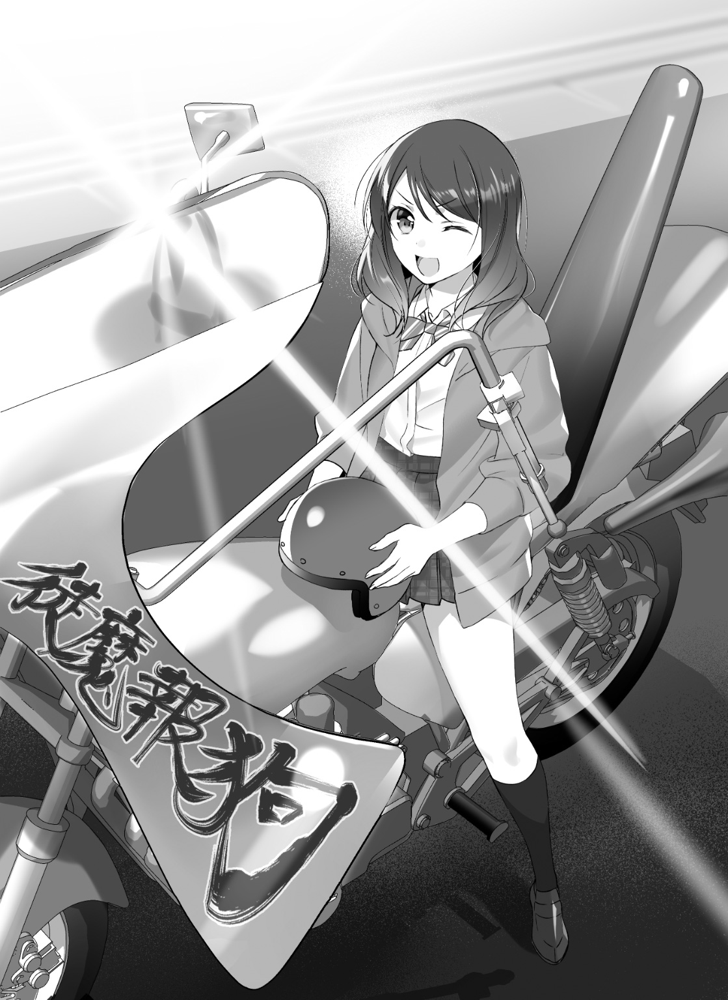
「何もかも分かんないですけど」
「まあ見た目ゴテゴテだけど中身もカリカリでゲロッ速だから安心しなよ」
「日本語話してくれる？」
「今は免許もあるし。ほら、後ろ乗って」
「今は......？」
「夏休み中に取ったんだよー。バイト代で」
「死ぬほど不安になってきた」
野々村さんに言われるまま、後ろに跨り、ヘルメットを被る。視界が狭い。
素直に言うことを聞いてしまっているのは、おそらく現実感がないからだろう。っていうか何なのこの状況。何なのこのバイク。
よく見るとカウル？ 的なところに〝徒魔報狗〟と書いてある。四文字熟語かな？
「トマホークって読むんだよ」
「へぇ、受験に出なさそう」
「まあ今このチームないんだけどね」
「......あの、野々村さんって。その、もしかして......いわゆる......」
中学時代のこと。
野々村さんは、俺の中学時代のことを気にしなかった。俺もまた、野々村さんがどんな中学生だったのか知らない。
背後から視線を送ると、振り向きながら、野々村さんは笑った。
「話してない過去なんて、誰にだってあるんだよ？」
薔薇みたいな笑顔だった。
鮮やかで、煌びやかで、妖しい艶があった。
一度も見たことのないその顔を見ると、俺は、不思議と楽になった。
「ほら、ちゃんと摑まって。安全運転はしないからさ、振り落としちゃうよ」
「えっ、あ、ああ......でも、その」
「胴摑むくらい気にしないの。あ、でもおっぱいは駄目だよ。そういうのは好きな子に頼んじゃって」
「頼めませんけど......」
恐る恐る、野々村さんの胴に腕を回す。
密着する面積が大きくなる。爆発しそうな俺の心臓が、きっと野々村さんの背中を叩いている。
野々村さんが、サンパチとやらのエンジンを吹かす。
猛禽類が唸るような音が、通勤時間の終わった静かな住宅街に響く。あまり長居をしていたら、きっと変な目で見られてしまうんじゃ......。
不安になって、ふと振り返った、その時だった。
「佐々井っ！」
「......須藤!?」
息を切らした須藤がいた。
制服を湿らして、くしゃくしゃにしていた。いつも整えている髪さえ乱れている。暑さの残る季節の道を、急いで走ってきたことは一目で分かった。
「お、おまっ......お前まで、どうしてここに」
「どうしてって............いや、だって佐々井、なんも言わねーで休むじゃん？ 電話もＬＩＮＥも繫がんねーし。っつか既読にもなんねーし」
「ああ......」
溜まりきっていた通知履歴を思い出す。
「学校始まる前から、なんか変だったしさぁ。したら来々木も野々村もパーって出てったからさあ、これ割とヤバげじゃね？ って、とりま野々村追っかけていったら、いきなりバイク乗って振り切ってくじゃん？ ガチめに状況分かんねーけど放っておけねーし。マジしんどかったわ」
「い、いや、学校サボりすぎでしょ......ちょっと連絡つかないくらいで、そこまで俺のことなんか気にしなくっても......」
「気にするに決まってんだろ」
「............」
迷わない言葉を、信じたいと思う。
胸を充たしていく、気持ちに従いたいと思う。
「で、なに？ 未だによく飲み込めてねーし何やってんのか分かんねーんだけどさ、大丈夫そうな感じ？ なんか古めの青春マンガくせえ状態だけど、これ見送っていい場面か？」
「......ああ............ああ。帰ってきたら、説明するし、謝る。いっぱい、いっぱい謝るよ」
「そっか。んじゃなんか分かんねーけど、頑張れな」
「分かった」
今一度エンジンを大きく吹かし、ギアを入れて、野々村さんのバイクが走り出す。
体が後方へ吹き飛ぶ景色に引っ張られそうになって、野々村さんにしがみつく。後ろを見ると、須藤がみるみる小さくなっていく。
見送られる背骨に、力が入る。
分かっていなかった。
俺は、なにも分かっていなかった。
「佐々井くん、いい友達持ったよねえ」
「まったくだ」
ヘルメットに涙声が響く。俺を充たす何かが、瞳から雫になって溢れていく。
「俺なんかに、もったいないくらいだ」
胸がいっぱいとは、こういうことを言うのだろう。
充たされるとは......こういう気持ちを言うのだろう。
「にしても、青春マンガっぽいかぁ。確かに恥ずかしいくらいそれっぽいよね、今。なに気取っちゃってんのって感じ？ あはは」
「マンガっぽいって言うには、ちょっとシチュが古いけどね」
「はははー、確かに。で、お客さん。どちらに向かえばいいですか？」
「隣町の美容院」
「いくつかあるでしょ？」
「キャンディポップってとこ。読モの、登道ローラが紹介してた」
「おっけー、分かった！」
野々村さんが、力強くスロットルを回す。
めいっぱいのパワーで、タイヤが地面を踏みしめる。
■
久方ぶりに訪れた隣町。即ち俺の町は、ちっとも変わっていなかった。
時間が止まったようだと思うのは、俺の勝手な感想で失礼だろう。のんきな時間の流れる午前中の町中を、ド派手なバイクが突っ切っていく。
アスファルトとコンクリート。
中途半端に新しくなった建物の塗り壁。街路樹の少ない灰色の景色。
彩りのない景色が懐かしい。
「こ、ここまででいい！」
「りょうかいっ！」
アスファルトにブレーキ痕を引いて、バイクが若干横にスライドしつつ止まる。
ドリフトとかできる乗り物だったとは知らなかった。
少しふらつきながら、バイクから下りた俺は、自分の足で懐かしい道を踏みしめる。痺れを止めるように、何度か足踏みする。つま先から、じぃん、と血が巡る。
変わる前の自分のいた場所。
再び、この足で立っている。
「......あとは、自分で行ってくる」
「おっけ。近くで待ってるよん」
それだけ言って、駆けだした。
バイクで走るよりはずっと遅く、ゆっくりと景色が流れていく。けれど、確かに自分の力で進んでいく。
思えば、自分にとっては捨てた景色のはずだった。
見たくない過去を捨てて、根暗だった自分に蓋をして、何もかもを放り出してこの場所から出ていった。そのことを、改めて自覚する。
いい思い出なんかないと思っていたし、今さら懐かしさを覚えるなんて、ありえないと思っていた。
それでも今、俺はこの道を歩いている。
道は上り坂。前へ、前へと、頭上の太陽を追いかけるように走る。
行ってどうする気なのだろう。自分に問いかける。
行ってから考える。。自分の中の自分が答える。
瑠句のことだけ、脳裏を過ぎる。
考えることは、とうにやめていた。
言葉としてまとまらないまま、瑠句だけが心を占めていく。
あんなにいい友達を持って、あんなに親切な言葉を貰って、振り返れば思い浮かぶのは瑠句ばかり。俺は薄情なやつかもしれない。
でも、ああ......そうだ。
楽しかったことも、悩んだことも、心配も安心も全部あった。
瑠句と過ごした間に、全部あった。
ここまでの高校生活、瑠句ばっかりだ。他のいろいろなことの隙間を埋めるように、俺の中には瑠句が充ちていた。
今なら、思う。
瑠句を欠かして、何が俺なんだと。瑠句なしで過ごせるほど、お前は偉いのかと。
それで、俺のどこが充実するのだと。
そして――。
「............あ」
「............あ」
角を曲がって、すぐに見つけた。
灰色の景色に、よく目立つ金髪がいた。
「..................のぞ、む......くん？」
驚きに、青みがかった瞳が開いている。
宝石のように、透き通った瞳が朝の光を映している。
瑠句はまるで、家に帰れない子供のように、膝を抱いて座り込んでいた。店の陰。日光から逃げるように、影の中にいた。
互いに気づくまでは、そこからぼうっと空を眺めていた。
空を映した瞳が見たかった。
「あの、どうしてここに......？」
「......いつまでいじけてるんだって、ケツ叩かれてさ」
また、話を相手に始めさせてしまった。
そんなことを考えながら、一歩ずつ近づいていく。
視界の中で、瑠句が大きくなるたびに光が差す。錆びついた歯車が動きだすように、瑠句と同じ空気を吸って、体中が熱を持つ。
少し会わなかっただけで、とても久々な気がする。
暗闇から日の下に出たように眩しくて、目が慣れるまで、瞼を細める。
「髪、染め直しに来たのかと思ってたけど、店に入らなかったんだな」
「あっ、えっ............と」
瑠句は困ったように、細い指に髪を絡ませた。
まだ瑠句が髪を染める前、髪を二つ縛りにしていた。今はないその束の名残を探すような仕草だった。
その一挙一動を、もう一度見れたことに、今は信じられないくらい安心している。
「............お店、入れなかったんですよ。貸し切りなんですって」
「貸し切り？」
美容室でそんなもん、あるんだろうか。
「ほら、このお店、登道ローラさんの行きつけで有名になったじゃないですか。それで............その、連絡があったそうで」
「登道ローラから、か」
彩李の顔が瞼に浮かぶ。
誰かに言いたいことがあるとき、その場に相手がいないのはもどかしい。
感謝したい。何かのマンガで、謝りたいと感じるから感謝なのだと言っていた。その通りだと思う。
「......望くんの言う通り。髪、染め直しに来たんですよ」
力ない笑顔だった。
叱られた子供のような顔。その顔の作り方を、俺はよく知っている。
「調子に乗っちゃってた、って気もしますし。とっくに、その、私のキャラ作りが間違ってるって分かってましたし。望くんも、何度もそう言ってくれたし。本当は、夏休み中に色落としちゃえばよかったんですけど」
ぎゅ、と力を込めて、瑠句は金色の毛先を握る。
「似合って、なかったですしね」
「似合ってるよ」
しゃがみ込んで、視線を合わせる。
瑠句と同じ高さへ。俺の方から近づきたかった。
「ブルドッグ隊のマドカ」
「......へ？」
「そういうイメージなんだよな。その髪の毛」
「......き、気づいてたんですか？」
「親切に教えてもらって、ようやく。俺、鈍感だから。でも、ちゃんと見れば分かることだったんだろうけど」
「......おしえ......？」
「俺らが思うよりずっと、俺らの周りの人は優しいみたいだから」
瑠句は首をかしげる。
構わない。
膝を抱く瑠句の手を取る。驚いたように瞳が見開かれ、俺の顔を映す。
その眼の中に、俺以外を映したくない。
俺は口の中で言葉を転がし始める。
「別に、その...............ええっと、なんだ。その............」
「......？」
「......全然出てこねえな」
なんともしまらない。気の利いた言葉が浮かばない。
俺なんて、所詮そんなもんだ。仕方ない。自分の情けなさはどうしようもない。瑠句に散々偉そうなことを言っておいて、誇れる振る舞いなどできたためしがない。
相も変わらず口下手で、センスもなければ技術もない。
だからって、頑張らない理由にはならない。
背中を押してくれる人がいる。
駆けつけてくれた友達がいる。
噓だらけの高校デビューで、付け焼き刃のリア充もどきでも、これだけの繫がりができた。胸なんか張れない過ごし方だったけど、それだけは無視しちゃいけないはずだ。
舞台の上に導いてくれた。
スポットライトを照らしてくれた。
俺も、光の下に出なければならない。
「地味だったころの瑠句も、いいと思う」
「......じゃあ」
「でも、瑠句は今のままでいいよ」
握った手に力をこめる。
震えて、汗をかいたその手を、不愉快に思われないだろうか。
気になるけれど、瑠句は逃げない。
俺に、捕まっていてくれる。確かに伝わる繫がりが、嬉しくってしかたない。
「......変わろうとしたんだろ。先に進もうとしたんだろ。高校生になってから、頑張ってきたのは今の瑠句だ。格好つけて意地張って、やっと話せるクラスメイトもできて......そういうのやってきたのって、今の瑠句だろ」
「......えっと、あの」
「だから、それでいい」
息を吸う。吐く。
喉を透き通らせる。
「でも......でも。私が、私が変わりすぎたから、望くんが......」
「変わろうとする、今の瑠句がいい」
声は震えている。
「私は、望くんを置いていきたくないんです！」
「だから、俺も変わるよ」
けれど、無理をしているわけじゃない。素直な言葉だけを声に出す。
今吐き出せるだけ、目いっぱい力強く、声を出す。
「こないだはビビってた。でも......瑠句が変わるだけ、俺も変わる。瑠句が進むだけ、俺もついていく。瑠句が嫌がらない限りは、追いかけていく」
「い、嫌がったりなんかしませんよ、そんなっ」
「だから、こないだのことは謝る」
頭を下げた。視界が暗くなった。
少し困っている気配が、息遣いで伝わってくる。
「............へ？」
「お前に言ったこと、取り消させてくれ。......ほんと勝手で悪い！ 今さらどのツラ下げてなんて言われてもしょうがないし、虫のいい話だと思うけど......いや、瑠句の邪魔をしたくないとか、そういうのは本心なんだけど」
お節介を焼いてくれる人がいる。
「......もう、瑠句には俺は必要ないと思ってた」
「そ、そんなこと」
「でも、瑠句が必要ないとか、そういうのとか以前に、もっと見つめなくちゃいけないことがあった。教えてもらったんだ。勝手だって分かってる！ 格好悪いのだって分かってる！ お前にそんなこと言う資格あんのかよ、って、俺だって思う！ けどさ、ひとつだけどうしても変えられないことがあるって、分かったから」
意を決する。
その言葉の意味を、今ほど理解する時はない。
「瑠句が、俺自身が、どう思ったって――」
顔を上げた。
光が射した。
たった少しの動作で、もう、目の前に瑠句しかいない。
「俺に、瑠句が必要なんだ」
瑠句で目の前が満ちていた。
俺の中に瑠句が充ちていた。
その表情の変化を、たったひとつも逃すものかと目を凝らす。息遣いのひとつ、瞬きのひとつすらも焼きつけて、瑠句だけで全てを染めていく。
驚いた顔。
ぱちん、と瞬くと、長いまつ毛が揺れる。息をのんで、豊かな胸を上下させる。
「......私も」
桜色の唇を震わせて、滑らかな掌に力がこもる。
白い肌が、少しずつ桜色に染まってゆく。
青空のような瞳を、三日月のように細めていく。
「私にも、望くんが必要です」
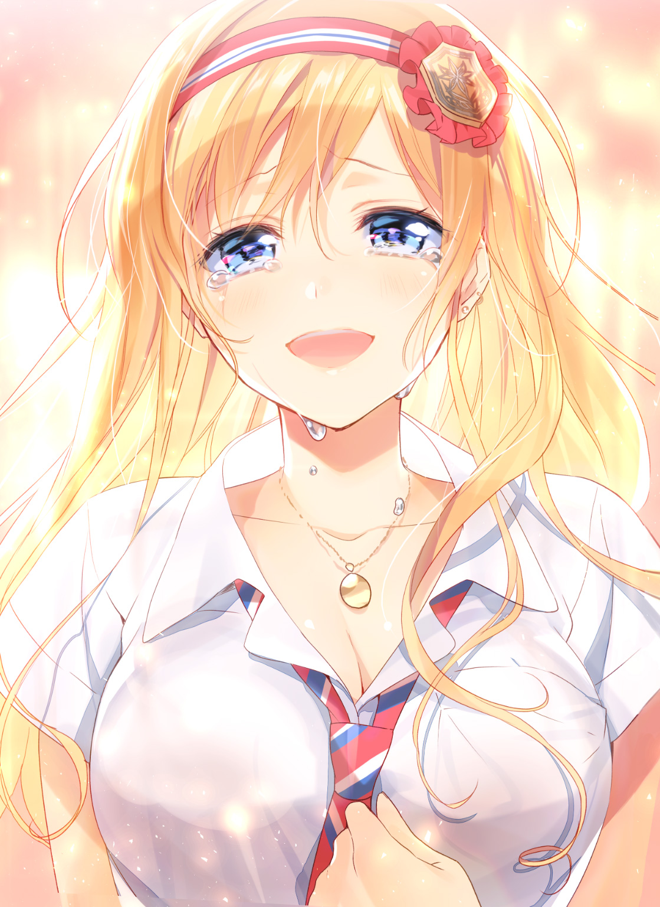
表情の変化だけで、世界のすべての動きが見える気さえする。
ひとつひとつ、一瞬、一秒。過ぎていくことすらもったいない。
そのすべての時間を、ほんの少しの時間を、零れ落ちる涙の一滴まで見つめて。瞼に、記憶に焼きつける。
今。
きっと、忘れてはいけない瞬間を体験しているんだと、信じられる。
「......最初っから、ずっと必要でしたよ」
「......うん」
「重たいって......たった一度だけ会っただけで、髪の色を変えるきっかけにまでされて、きっと、迷惑だろうなって......思いましたけど、でもっ......でも......」
「ごめん。その......もっと早く、俺が向き合えば」
「でも、いいんです」
首を横に振る。瑠句の髪が振り乱れる。
大きな瞳から、涙を零したその顔は、アニメのように整っていたわけではない。けれど、見つかった迷子の子供が浮かべるような、その泣き笑い顔をずっと見ていたい。
いろんな表情を見ていたい。
瑠句のことを、見ていたい。
「望くんっ」
日陰から飛び出してきた瑠句を、太陽の下で抱き止めた。
いつかのことを思い出す。たしか教室で、瑠句と共犯者になった時は、そのまま転んでしまった。それほど昔のことではないはずだ。
今度はきちんと受け止める。
心臓が弾む。摑まれたように痛む。
甘く、鋭く、苦しさも喜びも、何もかも。
一番大切な言葉を交わすまで、俺たちは綺麗にはいかなかった。つっかえて、嚙んで、右往左往して。それはお話にするには、とてもややこしくて格好悪い顚末。
けれど......世界中を照らすような笑顔を眺めて、思ったことがある。
たった一色だけがある。
俺の現実が、瑠句で充ちている。
エピローグ 『僕らはリア充なので』
「......しっかしよぉ、世の中なにが起こるかわかんねーよなぁ」
大谷は、なんとも複雑そうな表情をしていた。
視線の先は教室の真ん中あたりを見ている。それで、だいたい話題は分かった。
「彩李の話？」
「つーか登道ローラの話な」
そこを分けるんだなぁ。
と、間抜けな感想を抱く。
「いや、予想つかねーべあんなん」
「顔立ちは近かったけど、まあ印象がな」
「くそう............なんで気づかなかったんだろうなぁ。今や最多競争率の女子だもんよ、簡単に声もかけられなくなっちまった」
彩李羽音は、女子男子と言わず人だかりに囲まれていた。
少し伸びた髪が、明るい茶髪になっただけ。
ナチュラルメイクに気を遣い、制服を軽く着崩して、それだけで彩李羽音は、驚くほどに〝登道ローラ〟になった。
正体が知れた直後のこのクラスの様子といったら、激震と言っていい。
ソシャゲやオタクトークなんかはするが、振る舞いも気取ったものになった。
首をかしげ、髪を撫でるほんの少しの仕草が、驚くほどに艶やかで、彩李の本気に恐れを抱いたものだ。
あれが本来の彩李羽音。
豊富なファッション知識は瞬く間に女子の羨望を集め、男子はこぞって傍に寄ろうとする。傍に寄れない男子も、憧れの目で彼女を見るようになった。
気づけば、すっかりクラスの姫だ。
輪に食い込むのに出遅れた大谷は、悔しそうな顔をしていた。
「ぶっちゃけさ、あいつが登道ローラってことは驚いた」
「そりゃそうだろうよ」
「でも、それ以上に彩李自体のキャラが変わったんだよなぁ......ほら、彩李ってさ。オタクっぽいとか以上に、なんか壁あったんだよ。人と会話する気ありません、的な？」
「よく分かるね」
俺よりしっかり彩李を見てるんじゃないだろうか。
「そういうのも最近なくなって......ほんと、夏休み中何があったんだかさぁ。女子って少し見ないうちに変わるじゃん。アレかなー。恋かなぁやっぱ。もしくは失恋」
「鋭すぎるだろお前」
「え、何？」
「いやなんでもない」
「とにかくさぁ......今の彩李って、ちょっと話すだけですげえ可愛いんだよ。なんか自分の可愛さを自覚した上で、しっかり武器にしてるっつーのが分かるわけ。だからもっとさぁ、共通の話題とか作りたくなるじゃん」
「趣味とか合わせてみれば？」
「それがハードル高えんだよなぁ。ガン・ガールってアニメ好きらしいから、調べたらめっちゃシリーズ出てるし設定とかも辞書みてーになってんじゃん。ＤＶＤ借りようにも多すぎてさぁ」
「初代だけ見てみるとか」
「いや、とりあえずそっから見てんだよね。最初は割とバカにしてたんだけど、あれ割とおもしれーよ」
だろうよ、と心の中で勝ち誇る。
もうちょっとハマったら、コミカライズを貸してみよう。誰かの背中を押したい気持ちもあるし、ガン・ガールについて語りたい気持ちもある。
そんなことを思いながら、俺は彩李のほうへ耳を傾ける。
「えー、彩李さんってずっとカレシいないの？」
「マジかよ。んじゃ試しに付き合ってみるとかどうよ」
「何が試しよ。男子マジそういうのドン引きだからマッハ５で死ねばいいよ」
「そうだぞ。お前、彩李さんがローラだったからって露骨になりやがって」
「お前だって人のこと言えねえだろ！」
「ねーねー、彩李さんって好みのタイプとかいないの？」
「............うーん、そうだねぇ」
考えるように視線を上向ける。その所作だけで、何人もがうっとりとする。
「まず、がっつくタイプは嫌かな」
何人かの男子が死んだ顔になった。
分かっててやってるだろ、あれ。
「それと、格好つけるタイプもちょっと避けたいね。自然体で力抜いて話せる子がいい」
「あー、でもなんか分かるかも」
「やっぱ付き合うってなったら、ちょっと肩の力抜ける相手がいいよねー」
「でもなんか彩李さん、嫌いなタイプ具体的じゃない？ 夏休み明けからいきなり変わったし、やっぱ嫌なこととかあった感じ？」
「まあね。ほら、そこの無個性なやつにフラれたもんで」
唐突に彩李が指を差してきた。
視線が俺に集中する。痛い。まるで見えない針で全方位から滅多刺しにされているようだ。一番痛いのは、当然ながら大谷の視線だ。
「マジかよ佐々井」
「身の程知れよ」
「信じらんねえ」
「頭ぶっ飛んでんじゃねえの」
あんまりにもあんまりな言われようじゃないだろうか。
睨みつけてくる人垣の向こうで、彩李がにまにまと笑っている。なんて悪い笑顔だろうか。悔しいことに、その笑顔すらもえらく美しい。
本気を出した彩李は、無敵だ。
ああしてがつがつと寄ってくる男もいれば、人当たりが柔らかくなったことで、静かに彩李の本来の魅力に気づき始めた男もいる。
近いうち、俺よりずっとマシであろう誰かが、彩李を必要とするのかもしれない。
俺がそれを願える立場では、ないのかもしれない。
けれどそうなった時、きっと心から祝えると思う。そして、そうなる時はきっと来ると思う。
彩李羽音と俺は似ている。
俺ができたことだ。彩李なら、もっと上手にできるはずだ。
「ちなみに、ボクのことだけを考えてくれるってのは最低条件だから」
女子の同意が、賑やかに聞こえてくる。
■
「災難だったなー、佐々井」
須藤はケラケラ笑いながらやってきた。
「いや、笑いごとじゃないぞ須藤......俺泣きそうだったぞ」
「そりゃお前、相手が登道ローラじゃ責められるっしょ」
「それを言われるとしかたないけどさぁ......」
「やー、でもそっかそっか。そりゃお前、夏休み中は変なテンションにもなるわな」
「まあ、別にその件だけじゃないんだけどなぁ」
「結局、あんま詳しく聞いてないしさ。今さら聞く気もないんだけど」
「おう」
「次はもうちょっと遠慮なく話せよな」
「......おう」
ホームルーム後の喧騒は、須藤のＢＧＭのように思える。こうして声をかけてくれる須藤の存在に、いつだって助けられていた。
余計な壁を一枚、なくしたような気分。
今、須藤と話すのは、前の何倍も楽しく感じる。
「んで、今日オレら部活ねーからさ。駅のほう寄ってくんだけど、佐々井どうする？」
「あー......えーっと、今日は......」
日付を確認する。
そんなことしなくても、昨日のうちにさんざん釘を刺されていたので、分かりきったことだ。わざわざ歯切れを悪くしてしまう自分が嫌になるが、須藤は笑い飛ばす。
「先約あるなら気にせず言えよな。別にそれでハブったりしねーって」
「......ありがと。埋め合わせはするから」
「ほんっとマジメだなお前」
からからと笑う須藤と入れ替わりに、近づいてくる姿がある。
安心の前に、一瞬の緊張。
カツカツとローファーを鳴らし、胸を張って歩いてくるのは、ちょっと決まりすぎている。
「望。話は済んだ？」
「............」
「......何よ？」
「いや、その」
なるべく小声になる。
すこし声を抑えただけで、この騒がしい教室では内緒話ができる。
「やっぱ敬語じゃない上に呼び捨てだとちょっと、威圧感が」
「のっ............望がそうしろって言ったんじゃない！ もう気を遣わなくていいし、敬語だと他人行儀だからって！」
「い、いや、そうだな。その通りだ。俺が悪かった」
瑠句は相変わらず、演技モードだった。
いや、その表現は少し間違いではある。
考えてみたのだが、敬語なんてそれこそ気を遣ってる証だ。瑠句の〝クールキャラ〟は演技ではあったが、それを自然にできるなら、もっとも気を遣わない振る舞いになるはずだ。
第一、いつまでも俺にだけ敬語というのも悲しい。
というわけで、瑠句はいまだに学校ではこのキャラを貫いてる。
俺と話す時もそのまま......なのだが、どうも、こう......基本ダメわんこな性格だと分かっているはずなのに、敬語を捨てた瑠句って、美人が先に立ちすぎている。
まだ慣れていないせいだろうが、ドキドキしてしまうのだ。
これじゃいけないなぁ、と思ってはいるのだが。
「で、でもちゃんと約束は覚えてるし、放課後は空けといたからさ」
「わ、私だってお買い物行くの断ったんです......断ったんだから、覚えておいてもらわないと困りま......困るわよ」
「そ、そうだよな。すまん」
「ほんと、楽しみだったんだから。昨日から、すっごくすっごく楽しみだったんだからね！」
「わ、分かってる。分かってる！」
小さく握った拳をぶんぶんする瑠句。
胸が揺れるのでやめてほしい。特に衆人環視の中では。
「......じゃ、じゃあ、行きましょ。今から行けばバスにも乗れるし」
「あ、うん。おっけー......」
ちょっとぎくしゃくしている。
前みたいに、歩幅が合わない。意識して瑠句の歩く速度に合わせたり、瑠句のほうから俺のほうに寄ってきたり。
「......歩くの下手かよ」
「その、えっと、なんか落ち着かないのよ......こう、しっくりくる位置がないというか」
「隣でいいんじゃないの......？」
「......ペースが微妙にずれるから」
「じゃあついてくればいいよ......ほら、手貸せ」
「あ、うん」
不愉快な違和感じゃない。
共犯者でなく、同じ過去を持っているだけでなく、改めて来々木瑠句という女子と、佐々井望という男子が向き合ったせいで、何もかも新鮮になっているだけだ。
慣れない距離感を楽しく思う。
慣れていく過程を、心地よく思う。
「あ」
教室を出る時、須藤たちのグループに出くわした。中村やら大谷やらもいる。
須藤以外は一斉にジト目になった。
「マジかよ佐々井......」
「お前、女優先はまだしも教室から手繫いでいくとか......」
「ちょっと熱すぎるよな......」
「ＴＰＯってやつがあるよな......」
「ＴＰＯって何の略？」
「超ピンクな男じゃね」
「ああ、頭の中がピンクな」
「............」
散々言われながら、なんか申し訳なさそうな瑠句を引っ張っていく。
確かに学校の中でこれは目立つ。廊下を行くだけで人に見られる。
まるで舞台の上。光の中。
みなさんご注目とばかりに、集中するスポットライトの下。
「望......私、顔から火が出そうっていう表現のこと、今初めて理解した気がする」
「おう、もう、こ、こうなったらしょうがない。火出しちまえ」
「そんなこと言われてもっ......」
仲良くするなら堂々としようじゃないか。
とは取り決めたが、これは確かにやりすぎだ。なんせ慣れていないものだから、俺たち二人だと特にやることなすこと不器用だ。
でもまあ、仕方ない。
上手にできなくたって、やりたいことをやる。
「なあ、瑠句」
「......な、何よ」
「リア充ってさ、なにより自信が充実してるんだよな」
「そう、かもしれないけど......どうしたの、いきなり」
「自信って、自分を信じるって書くんだよな」
「そうね」
「俺は今も割と自信がない」
「......私だって、あんまり......っていうかこの状況に自信持つのは無理じゃない？」
「でもさ」
堂々と胸を張れ。下手くそでも格好をつけ続けろ。
「瑠句と一緒にいたいって思う自分は、信じられる」
俺は瑠句の隣だ。
瑠句は俺の隣だ。
文句あるか。と言わんばかりに、俺はただ、胸を張ればいい。
「それさえあれば何やってもいいだろ、たぶん！」
「.........な、何やってもいいわけないです、じゃない、ですか」
「え、そこ否定するんだ......？」
「そういうセリフは、もっと、二人のときとかに言ってほしいし。もっと、ちゃんと落ち着いて聞きたかったし」
「......いや、本当にごめん」
「ばか。ばか」
「ご、ごめんって......！」
「ほんとに、ばか」
責められてる。
でも、なんだか悪くはない気持ちだ。
それはきっと、繫ぐ手が離れなかったからだろう。むしろもっと強く、握り返した手が自信になる。
瑠句といる、この自分なら。
誰かと一緒にいる自分なら、信じられる。
信じさせてくれる人が、俺には、いる。
「おーい！」
廊下を抜けて外に出て、頭上から降ってくる声に気づいた。
窓から身を乗り出すクラスメイトは、いかにもからかってやろう、という顔で。
手をメガホンのようにして、言われる。
「リア充爆発しろー！」
「......」
「......初めて聞いたわね、リアルで」
「うん」
なんとまぁ。
光の下にいる人間しか投げかけられないそのセリフは、半ばフィクションのものだと思っていた。
言われる側の気分は、なるほど。
けっこう悪くない。
あ と が き
こんにちは、北國ばらっどです。
この度は「僕オタ」二巻、と同時に完結編、お手に取っていただきありがとうございます。いかがでしたでしょうか？
今回は最初から完結編として描かれたので、勢いでぐんぐん進める一巻と比べると、ちょっとノリが違ったかもしれません。
とはいえ、望と瑠句の行く末、羽音の気持ちとその決着、麻紀の過去設定や須藤に至るまで、キャラクターの描きたいところは思うぞんぶん描かせていただき、「僕オタ」の完結編として本当にめいっぱいやらせてもらったと思います。
はい、本当、好きにやらせてもらいました。
結果、ギャグだった一巻から比べるとラブコメになったんじゃあないかと思います。
望が落ち込むところとか、一巻ではとてもじゃないけどできませんでしたし......自分に自信がなくなる時って、本当に何もかもどうでもよくなると思うんですよ。そういう感じのことも、めいっぱい書かせていただきました。
望も瑠句も羽音も麻紀も、みんなこれからも悩んだり苦しんだりするでしょうけれど、自分の気持ちと素直に向き合う限り、きっと幸せになるのだと思います。
こういう作風、結末に着地できたこと。この作品を描き切り、こうして世に出せたこと、担当編集をしてくださった山本さまにはまったく感謝してもしきれません。
それに、この物語に素晴らしいイラストを用意してくださり、キャラクターたちに彩りと命を吹き込んでくださった村上ゆいちさま。どれほどの感謝とお礼、そして尊敬と感動の言葉を贈れば足りることか、言葉にし続けても尽きることはないでしょう。
校閲作業をしてくださった方々、広報を担当してくださった方々、この作品を世に出してくださったすべての方々に、感謝の気持ちでいっぱいです。
そして、一巻を読んでくださった読者の皆さま。
二巻まで読んでいただき、この作品の完結まで付き合ってくださった読者の皆様。
とても嬉しいお便りをくださった貴方。頂いたお手紙は神棚に飾らせていただいております。
心弾むメッセージをくださった貴方。何度だってその言葉を見返して心温まっております。
何より、読んでいただいてこその作品です。
最後まで読んでいただいたすべての読者の皆様に、心よりお礼を申し上げます。
本当に、本当にありがとうございました。
また、どこかでお会いできることを祈っております。
著者紹介
北國ばらっど きたぐに ばらっど
こんにちは、北國ばらっどです。
二巻、にして完結編。待っていてくださった方には、本当に長らくお待たせいたしました。
デビュー作は「自分らしく生きる」をテーマにしたつもりですが、自分らしく生きない道を選んだ望と瑠句のお話は、描いていて新しい視点を貰えたな、と思います。
望の行く末、瑠句の行く末、この巻で描きました。
宜しければ、最後までお付き合いください。
illustration
村上ゆいち むらかみ ゆいち
個人的にも大好きなキャラ達なのでデジタル版だからこそ出来るわがままを聞いていただきました！お楽しみ頂けますと幸いです。
ダッシュエックス文庫DIGITAL
僕らはリア充なのでオタクな過去などありません（大嘘）２
著者 北國ばらっど
© BALLAD KITAGUNI 2017
２０１７年８月31日発行
発行者 鈴木晴彦
発行所 株式会社 集英社
〒１０１－８０５０
東京都千代田区一ツ橋２丁目５番10号
０３－３２３０－６０８０（読者係）
制作所 株式会社ＩＣＥ
本作品の全部または一部を無断で複製、転載、改竄、インターネット上に掲載すること、および有償無償に関わらず、本データを第三者に譲渡することを禁じます。なお個人利用の目的であっても、コピーガードを解除しての複製は、法律で禁じられています。